B3 · GPT-6 Astra · attempt wJVMqTE
Batch tb8 · job tb8_B_EXP22004363_run1_221202_gpt-6-astra · trial B_EXP22004363_run1_221202__wJVMqTE. Long tool outputs are cut at 6,000 characters.
0.40
41.2
$31.73
181
159
task prompt (instruction.md)
<environment_context> <cwd>/task</cwd> <shell>bash</shell> <current_date>2026-11-06</current_date> <timezone>Etc/UTC</timezone> <filesystem><workspace_roots><root>/task</root></workspace_roots><permission_profile type="disabled"><file_system type="unrestricted" /></permission_profile></filesystem> </environment_context>
user message
# Caspase-3/7 conditioned-media plate (H4 WT / PGRN-KO): analyse, conclude, recommend
## Goal
You are the analyst for this experiment. Analyse the 80-well plate acquired on 02-Dec-2022, answer the plan's question, and recommend the next step. The plan's question is whether WT progranulin-conditioned media can bring caspase activity in H4 PGRN-KO lines (E1, E3) back toward WT levels.
## Inputs (read-only, `/task/inputs/`)
| Path | Content |
|---|---|
| `/task/inputs/plan.md` | Notebook entry up to flow acquisition: purpose, rationale, materials, protocol, cytometer settings, plate maps and their highlight colours. |
| `/task/inputs/plate_layout.csv` | One row per FCS file: `file, well, sample, cell_line, camptothecin, conditioned_media`. `sample` is the 2022-12-02 plate-map label as written. `conditioned_media` is transcribed from that map's highlight colours (blue = WT 24hr, green = WT 48hr, none = no conditioned media). `camptothecin` is `not stated` where the plate map gives no treatment. |
| `/task/inputs/start.flow` | Cytoflow workflow with the Import step already configured: 80 tubes, conditions `well`, `sample`, `cell_line`, `camptothecin`, `conditioned_media`. |
| `/task/inputs/raw/` | 80 FCS 3.1 files (Attune NxT), `Caspase-assay-2-mlk_caspase_Group_<well>.fcs`, wells A1-F12 and G1-G8. |
## Channels
- Cytoflow lists channels by the labels stored inside the FCS files, not by detector ID.
- These labels may be out of date.
- Use the plan's reagent list and cytometer settings to decide what each detector measured.
## Tools and rules
- **Cytoflow only.** All gating and counting must be done in the Cytoflow 1.3.2 GUI on screen.
- **Terminal.** It has no flow-cytometry libraries, and you must not parse FCS files from it. Use it only to:
- read the inputs;
- tabulate CSVs exported from Cytoflow;
- plot from those tables;
- write the deliverables.
- **Start.** File -> Open -> `/task/inputs/start.flow`, then answer **Yes** to run it. Use `cu paste` for paths.
- **Event subsampling.** Leave `Events per sample` on the Import step unset in the final workflow, so that counts use all events.
- **Save the workflow.** In Cytoflow, File -> Save as `/task/outputs/workflow.flow`. It must be the workflow whose gates produced `counts.csv`.
- **Output location.** Write every deliverable to `/task/outputs/`. Do not modify `/task/inputs/`.
- **Time budget.** About 5 hours.
## Deliverables (`/task/outputs/`)
### `workflow.flow`
The saved Cytoflow workflow. Every population in `counts.csv` except `all_events` must be a gate operation in this workflow with exactly the same name.
### `counts.csv`
- **Columns, in order:** `file, well, population, role, parent, count, pct_of_parent`.
- **Rows:** one row per file per population, for all 80 files, with the same set of populations for every file.
- **`all_events` row:** one per file, with `population` = `all_events`, `role` = `other`, `parent` = `none` and `pct_of_parent` empty.
- **`role`** must be one of `cells`, `singlets`, `live`, `marker_positive`, `other`. Each of `cells`, `singlets`, `live` and `marker_positive` is used by exactly one population, and that population is the same in every file. `marker_positive` is the assay read-out population. `other` may be used by any number of populations.
- **`parent`** is the name of the parent population; use `all_events` for a top-level gate.
- **`count`** is an integer event count taken from Cytoflow statistics on the saved gates.
- **`pct_of_parent`** = 100 x count / parent count.
### `flags.csv`
- **Columns, in order:** `file, well, issue_type, evidence, decision`.
- **Rows:** exactly one row per FCS file (80 rows). If a well has several issues, report the main one and mention the others in `evidence`.
- **`issue_type`** must be one of `none`, `clog`, `ran_dry`, `too_few_events`, `saturation`, `bad_control`, `mislabel`, `other`.
- **`decision`** must be one of `keep`, `keep_with_note`, `exclude`. Rows with `issue_type` = `none` must have `decision` = `keep`.
- **`evidence`** is required whenever `issue_type` is not `none`, and must cite at least one number from the data. It may be empty when `issue_type` = `none`.
### `condition_summary.csv`
- **Columns, in order:** `condition, wells, n_wells_used, mean, sd, metric_definition, normalisation_applied`.
- **`condition`** is a name you choose.
- **`wells`** lists the plate wells used, separated by `;`, e.g. `A1;D1`.
- **`n_wells_used`** is an integer.
- **`mean`** and **`sd`** are computed across the wells used. Leave `sd` empty when n = 1.
- **`metric_definition`** states the per-well metric, including numerator and denominator populations and units.
- **`normalisation_applied`** describes any normalisation, or says `none`.
### `figure.png`
The main result chart.
### `report.md`
Use these headings, in this order: `## Question`, `## Methods`, `## Results`, `## Conclusion`, `## Caveats`, `## Recommendation`.
### `answer.json`
```
{"question": str,
"comparisons": [{"comparison": str, "a": <condition>, "b": <condition>,
"direction": "increase"|"decrease"|"no_clear_change",
"magnitude": str, "confidence": "high"|"medium"|"low"}],
"overall_answer": "yes: ..." | "partial: ..." | "no: ...",
"assay_verdict": "fit_for_purpose"|"needs_optimisation"|"not_fit_for_purpose",
"next_action": <ACTION>,
"next_change": {"what": str, "from": str, "to": str, "why": str},
"excluded_wells": [well, ...],
"caveats": [str, ...]}
```
- **`comparisons`:** at least one. `a` and `b` must be `condition` values that appear in `condition_summary.csv`.
- **`direction`** describes `b` relative to `a`: `increase` means b > a.
- **`magnitude`:** give the size of the difference with a number and its unit.
- **`overall_answer`** must start with `yes:`, `partial:` or `no:`.
- **`next_action`** must be one of `proceed_as_planned`, `repeat_unchanged`, `repeat_with_change`, `optimise_reagent_or_setting`, `change_treatment_or_timing`, `switch_assay`, `stop`.
- `next_change`: the change you recommend, as an object: `what` (the step, reagent or condition to change), `from` (its value as run), `to` (the value you recommend) and `why`. Use empty strings if you recommend no change.
- **`excluded_wells`** must equal the set of wells with `decision` = `exclude` in `flags.csv`.
---
## How you operate this computer
You work from a **terminal** (bash, working directory `/task`). The analysis program, **Cytoflow 1.3.2**, is already running on a virtual screen (1440×900). You see and control that screen with the `cu` command:
| Command | What it does |
|---|---|
| `cu screenshot /tmp/screen.png` | Save a screenshot. Then **open/view the image file** to see the screen. |
| `cu click X Y` · `cu click X Y right` · `cu click X Y double` | Mouse click at pixel X,Y |
| `cu drag X1 Y1 X2 Y2` · `cu move X Y` · `cu scroll X Y down 3` | Drag, move, scroll |
| `cu type "text"` · `cu paste "text"` · `cu key ctrl+s` | Keyboard (use `cu paste` for file paths) |
Take a fresh screenshot after actions to check what happened.
- **Cytoflow.** If a "Welcome to Cytoflow!" dialog is showing, close it. In file dialogs, paste the full path (e.g. `/task/inputs/start.flow`) into the *File name* box.
- **Gating must be done in Cytoflow on screen.** Do not install or use flow-cytometry libraries (flowkit, flowio, fcsparser, FlowCytometryTools, the cytoflow Python API, etc.) to gate or count events. Python (numpy, pandas, matplotlib, openpyxl) is available for working with exported tables and writing reports.
- **Inputs** are in `/task/inputs/` (read-only). **Write every deliverable to `/task/outputs/`.** Only that folder is collected for grading.
- **Limits.** There is no limit on the number of actions; the only limit is the time budget above. Save `workflow.flow` and your output files early and often.
const r = await tools.exec_command({cmd:"pwd && rg --files /task -g 'AGENTS.md' -g '!inputs/raw/**' -g '!*.fcs' -g '!*.flow' && cat /task/inputs/plan.md && cat /task/inputs/plate_layout.csv",max_output_tokens:18000});text(r.output);
text(ALL_TOOLS.filter(x=>/computer|screen|terminal|exec/i.test(x.name+" "+x.description)).map(x=>({name:x.name,description:x.description.slice(0,150)})));
Script completed
Wall time 0.0 seconds
Output:
/task
[{"name":"apply_patch","description":"The `apply_patch` tool can be used to edit files. This is a FREEFORM tool, so do not wrap the patch in JSON.\n\nexec tool declaration:\n```ts\ndeclare con"},{"name":"clock__curr_time","description":"Return the current time in UTC.\n\nTools for reading and waiting on time.\n\nexec tool declaration:\n```ts\ndeclare const tools: { clock__curr_time(args: {}"},{"name":"create_goal","description":"Create a goal only when explicitly requested by the user or system/developer instructions; do not infer goals from ordinary tasks.\nSet token_budget on"},{"name":"exec_command","description":"Runs a command in a PTY, returning output or a session ID for ongoing interaction.\n\nexec tool declaration:\n```ts\ndeclare const tools: { exec_command(a"},{"name":"get_goal","description":"Get the current goal for this thread, including status, budgets, token and elapsed-time usage, and remaining token budget.\n\nexec tool declaration:\n```"},{"name":"list_mcp_resource_templates","description":"Lists resource templates provided by MCP servers. Parameterized resource templates allow servers to share data that takes parameters and provides cont"},{"name":"list_mcp_resources","description":"Lists resources provided by MCP servers. Resources allow servers to share data that provides context to language models, such as files, database schem"},{"name":"read_mcp_resource","description":"Read a specific resource from an MCP server given the server name and resource URI.\n\nexec tool declaration:\n```ts\ndeclare const tools: { read_mcp_reso"},{"name":"update_goal","description":"Update the existing goal.\nSet status to `paused` only at the user's explicit request to pause this goal, never on your own initiative. Ask if unclear;"},{"name":"view_image","description":"View a local image file from the filesystem when visual inspection is needed. Use this for images already available on disk.\n\nexec tool declaration:\n`"},{"name":"web__run","description":"Tool for accessing the internet.\n\n\n---\n\n## Examples of different commands available in this tool\n\nExamples of different commands available in this too"},{"name":"write_stdin","description":"Writes characters to an existing unified exec session and returns recent output.\n\nexec tool declaration:\n```ts\ndeclare const tools: { write_stdin(args"}]const results = await Promise.allSettled([
tools.exec_command({cmd:"cat /task/inputs/plan.md",max_output_tokens:18000}),
tools.exec_command({cmd:"cat /task/inputs/plate_layout.csv",max_output_tokens:12000}),
tools.exec_command({cmd:"cu screenshot /tmp/screen.png",max_output_tokens:1000})
]);for(let i=0;i<results.length;i++)text({i,result:results[i]});
image((await tools.view_image({path:"/tmp/screen.png"})).image_url);
Script completed Wall time 0.1 seconds Output:
{"i":0,"result":{"status":"fulfilled","value":{"chunk_id":"b9ef00","wall_time_seconds":0.00000105,"exit_code":0,"original_token_count":1637,"output":"# EXP22004363 | 2022.11.28 Caspase Activity Assay Dev: Progranulin Conditioned Media\n\nThis is the notebook entry text up to flow acquisition on 2022-12-02. People's names have been removed.\n\n- **Tags:** Target PGRN; Technology Assay development; Model System Cell based; Methodology Flow; Cell Type H4.\n- **Plate maps:** shown below as grids (rows A-H, columns 1-12). Empty cells are blank.\n- **Highlight colours:** the notebook encodes conditioned-media treatment by highlight colour. The colours are listed at the end.\n\n## DAY 2022-11-28\n\n### Purpose\nTo determine if progranulin conditioned media can restore wild-type levels of caspase activity in H4 GRN KO cells.\n\n### Rationale\nPrevious literature evidence suggests that applying exogenous progranulin to cells can restore molecular phenotypes in progranulin deficient lines. Our previous experiment with caspase activity on H4 GRN WT and KO cells showed that GRN KO lines had increased caspase activity. This difference was enhanced after campothesin challenge in both GRN WT and KO cells ( ). In this experiment, we will determine if applying conditioned media from WT cell lines onto KO lines can reduce caspase activity closer to WT levels.\n\n### Materials\n- H4 WT cells\n- H4 PGRN KO E1\n- H4 PGRN KO E3\n- H4 media (DMEM + 10% FBS)\n- CellEvent Caspase-3/7 Green Flow Cytometry Assay Kit\n- Camptothecin\n- Plate 10k cells according to plate:\n\n| | 1 | 2 | 3 | 4 | 5 | 6 | 7 | 8 | 9 | 10 | 11 | 12 |\n|---|---|---|---|---|---|---|---|---|---|---|---|---|\n| A | WT | WT | WT | WT | WT | WT | WT | WT | WT | | | |\n| B | WT | WT | WT | WT | WT | WT | WT | WT | WT | | | |\n| C | WT | WT | WT | WT | WT | WT | WT | WT | WT | | | |\n| D | WT | WT | WT | WT | WT | WT | WT | WT | WT | | | |\n| E | E1 | E1 | E1 | E1 | E1 | E1 | E1 | E1 | E1 | | | |\n| F | E3 | E3 | E3 | E3 | E3 | E3 | E3 | E3 | E3 | | | |\n| G | | | | | | | | | Serum free media | | | |\n| H | 24 hr | | | | 48 hr | | | | | | | |\n\n- WT-330K for 33 wells-resuspend in 3300mL\n- E1 and E3-90K for 9 wells-resuspend in 900uL\n\n## DAY 2022-11-29\n- Harvest media after 24 and 48 hrs and place in 4 C until ready to use.\n\n## DAY 2022-11-30\n- Plate cells according to the following plate map and incubate at 37C:\n\n| | 1 | 2 | 3 | 4 | 5 | 6 | 7 | 8 | 9 | 10 | 11 | 12 |\n|---|---|---|---|---|---|---|---|---|---|---|---|---|\n| A | WT | WT | WT | WT | WT | WT | WT | WT | WT | WT | WT | WT |\n| B | E1 | E1 | E1 | E1 | E1 | E1 | E1 | E1 | E1 | E1 | E1 | E1 |\n| C | E3 | E3 | E3 | E3 | E3 | E3 | E3 | E3 | E3 | E3 | E3 | E3 |\n| D | WT | WT | WT | WT | WT | WT | WT | WT | WT | WT | WT | WT |\n| E | E1 | E1 | E1 | E1 | E1 | E1 | E1 | E1 | E1 | E1 | E1 | E1 |\n| F | E3 | E3 | E3 | E3 | E3 | E3 | E3 | E3 | E3 | E3 | E3 | E3 |\n| G | WT no treatment | WT no treatment | E3 no treatment | E3 no treatment | | | | | | | | |\n| H | E1 no treatment | E1 no treatment | WT (flow control) | WT (flow control) | | | | | | | | |\n\n## DAY 2022-12-01\n- Gently wash cells with DMEM.\n- Replace media with conditioned media collected previously. Conditioned media added at 9AM\n\n## DAY 2022-12-02\n- After 24 hours, add campthothesin according to the plate map:\n\n| | 1 | 2 | 3 | 4 | 5 | 6 | 7 | 8 | 9 | 10 | 11 | 12 |\n|---|---|---|---|---|---|---|---|---|---|---|---|---|\n| A | WT 10uM | WT 5uM | WT 2uM | WT DMSO | WT 10uM | WT 5uM | WT 2uM | WT DMSO | WT 10uM | WT 5uM | WT 2uM | WT DMSO |\n| B | E1 10uM | E1 5uM | E1 2uM | E1 DMSO | E1 10uM | E1 5uM | E1 2uM | E1 DMSO | E1 10uM | E1 5uM | E1 2uM | E1 DMSO |\n| C | E3 10uM | E3 5uM | E3 2uM | E3 DMSO | E3 10uM | E3 5uM | E3 2uM | E3 DMSO | E3 10uM | E3 5uM | E3 2uM | E3 DMSO |\n| D | WT 10uM | WT 5uM | WT 2uM | WT DMSO | WT 10uM | WT 5uM | WT 2uM | WT DMSO | WT 10uM | WT 5uM | WT 2uM | WT DMSO |\n| E | E1 10uM | E1 5uM | E1 2uM | E1 DMSO | E1 10uM | E1 5uM | E1 2uM | E1 DMSO | E1 10uM | E1 5uM | E1 2uM | E1 DMSO |\n| F | E3 10uM | E3 5uM | E3 2uM | E3 DMSO | E3 10uM | E3 5uM | E3 2uM | E3 DMSO | E3 10uM | E3 5uM | E3 2uM | E3 DMSO |\n| G | WT no treatment (no stain) | WT no treatment | E3 no treatment | E3 no treatment | E1 no treatment | E1 no treatment | WT (caspase stain only) | WT (L/D stain only) | | | | |\n| H | | | | | | | | | | | | |\n\n- Blue highlight=treated with WT 24hr conditoned media\n- Green highlight= treated with WT 48hr conditioned media\n- No highlight= no conditioned media treatment\n- Incubate and run flow.\n- Aspirate media and wash with PBS\n- Add 150uL trypsin incubate for 5min\n- Add 75uL FBS and collect into 96w round bottom plate\n- spin down 200xg for 5min\n- Add 200uL of Cell Event Caspase 3/7 Detection reagent (1:1000) in flow staining buffer. Incubate for 30min at 37C\n- Prepare SYTOX AAdvanced Dead Cell Stain at 100uM concentration by adding 1000uL DMSO to stain. Mix well\n- During the final 5 minutes of 30min Caspase incubation add 2uL of the 100uM Dead Cell stain (final concentration of 1uM)\n- Analyze the samples without fixing.\n\nFlow cytometer settings: FSC-20; SSC-290; BL1 (caspase)-225, BL2 (AAddvanced Dead Cell Stain)-350\n\n## Plate-map cell colours (from the notebook's highlighting; the plain-text maps above drop colour)\n\n### Plate map of 2022-11-28\n- row A: WT [light cyan #C2EDF8] x8 (cols 1-8) | WT (col 9, no highlight) | - | - | -\n- row B: WT [light cyan #C2EDF8] x8 (cols 1-8) | WT (col 9, no highlight) | - | - | -\n- row C: WT [light cyan #C2EDF8] x8 (cols 1-8) | WT (col 9, no highlight) | - | - | -\n- row D: WT [light green #E8F9CF] x8 (cols 1-8) | WT (col 9, no highlight) | - | - | -\n- row E: E1 [light green #E8F9CF] x8 (cols 1-8) | E1 (col 9, no highlight) | - | - | -\n- row F: E3 [light green #E8F9CF] x8 (cols 1-8) | E3 (col 9, no highlight) | - | - | -\n- row G: cols 1-8 empty | Serum free media (col 9) | - | - | -\n- row H: 24 hr (col 1) | - | - | - | 48
… [812 more characters not shown]{"i":1,"result":{"status":"fulfilled","value":{"chunk_id":"5bdb28","wall_time_seconds":0.00000437,"exit_code":0,"original_token_count":1723,"output":"file,well,sample,cell_line,camptothecin,conditioned_media\nCaspase-assay-2-mlk_caspase_Group_A1.fcs,A1,WT 10uM,WT,10uM,WT 24hr conditioned media\nCaspase-assay-2-mlk_caspase_Group_A2.fcs,A2,WT 5uM,WT,5uM,WT 24hr conditioned media\nCaspase-assay-2-mlk_caspase_Group_A3.fcs,A3,WT 2uM,WT,2uM,WT 24hr conditioned media\nCaspase-assay-2-mlk_caspase_Group_A4.fcs,A4,WT DMSO,WT,DMSO,WT 24hr conditioned media\nCaspase-assay-2-mlk_caspase_Group_A5.fcs,A5,WT 10uM,WT,10uM,WT 48hr conditioned media\nCaspase-assay-2-mlk_caspase_Group_A6.fcs,A6,WT 5uM,WT,5uM,WT 48hr conditioned media\nCaspase-assay-2-mlk_caspase_Group_A7.fcs,A7,WT 2uM,WT,2uM,WT 48hr conditioned media\nCaspase-assay-2-mlk_caspase_Group_A8.fcs,A8,WT DMSO,WT,DMSO,WT 48hr conditioned media\nCaspase-assay-2-mlk_caspase_Group_A9.fcs,A9,WT 10uM,WT,10uM,no conditioned media\nCaspase-assay-2-mlk_caspase_Group_A10.fcs,A10,WT 5uM,WT,5uM,no conditioned media\nCaspase-assay-2-mlk_caspase_Group_A11.fcs,A11,WT 2uM,WT,2uM,no conditioned media\nCaspase-assay-2-mlk_caspase_Group_A12.fcs,A12,WT DMSO,WT,DMSO,no conditioned media\nCaspase-assay-2-mlk_caspase_Group_B1.fcs,B1,E1 10uM,E1,10uM,WT 24hr conditioned media\nCaspase-assay-2-mlk_caspase_Group_B2.fcs,B2,E1 5uM,E1,5uM,WT 24hr conditioned media\nCaspase-assay-2-mlk_caspase_Group_B3.fcs,B3,E1 2uM,E1,2uM,WT 24hr conditioned media\nCaspase-assay-2-mlk_caspase_Group_B4.fcs,B4,E1 DMSO,E1,DMSO,WT 24hr conditioned media\nCaspase-assay-2-mlk_caspase_Group_B5.fcs,B5,E1 10uM,E1,10uM,WT 48hr conditioned media\nCaspase-assay-2-mlk_caspase_Group_B6.fcs,B6,E1 5uM,E1,5uM,WT 48hr conditioned media\nCaspase-assay-2-mlk_caspase_Group_B7.fcs,B7,E1 2uM,E1,2uM,WT 48hr conditioned media\nCaspase-assay-2-mlk_caspase_Group_B8.fcs,B8,E1 DMSO,E1,DMSO,WT 48hr conditioned media\nCaspase-assay-2-mlk_caspase_Group_B9.fcs,B9,E1 10uM,E1,10uM,no conditioned media\nCaspase-assay-2-mlk_caspase_Group_B10.fcs,B10,E1 5uM,E1,5uM,no conditioned media\nCaspase-assay-2-mlk_caspase_Group_B11.fcs,B11,E1 2uM,E1,2uM,no conditioned media\nCaspase-assay-2-mlk_caspase_Group_B12.fcs,B12,E1 DMSO,E1,DMSO,no conditioned media\nCaspase-assay-2-mlk_caspase_Group_C1.fcs,C1,E3 10uM,E3,10uM,WT 24hr conditioned media\nCaspase-assay-2-mlk_caspase_Group_C2.fcs,C2,E3 5uM,E3,5uM,WT 24hr conditioned media\nCaspase-assay-2-mlk_caspase_Group_C3.fcs,C3,E3 2uM,E3,2uM,WT 24hr conditioned media\nCaspase-assay-2-mlk_caspase_Group_C4.fcs,C4,E3 DMSO,E3,DMSO,WT 24hr conditioned media\nCaspase-assay-2-mlk_caspase_Group_C5.fcs,C5,E3 10uM,E3,10uM,WT 48hr conditioned media\nCaspase-assay-2-mlk_caspase_Group_C6.fcs,C6,E3 5uM,E3,5uM,WT 48hr conditioned media\nCaspase-assay-2-mlk_caspase_Group_C7.fcs,C7,E3 2uM,E3,2uM,WT 48hr conditioned media\nCaspase-assay-2-mlk_caspase_Group_C8.fcs,C8,E3 DMSO,E3,DMSO,WT 48hr conditioned media\nCaspase-assay-2-mlk_caspase_Group_C9.fcs,C9,E3 10uM,E3,10uM,no conditioned media\nCaspase-assay-2-mlk_caspase_Group_C10.fcs,C10,E3 5uM,E3,5uM,no conditioned media\nCaspase-assay-2-mlk_caspase_Group_C11.fcs,C11,E3 2uM,E3,2uM,no conditioned media\nCaspase-assay-2-mlk_caspase_Group_C12.fcs,C12,E3 DMSO,E3,DMSO,no conditioned media\nCaspase-assay-2-mlk_caspase_Group_D1.fcs,D1,WT 10uM,WT,10uM,WT 24hr conditioned media\nCaspase-assay-2-mlk_caspase_Group_D2.fcs,D2,WT 5uM,WT,5uM,WT 24hr conditioned media\nCaspase-assay-2-mlk_caspase_Group_D3.fcs,D3,WT 2uM,WT,2uM,WT 24hr conditioned media\nCaspase-assay-2-mlk_caspase_Group_D4.fcs,D4,WT DMSO,WT,DMSO,WT 24hr conditioned media\nCaspase-assay-2-mlk_caspase_Group_D5.fcs,D5,WT 10uM,WT,10uM,WT 48hr conditioned media\nCaspase-assay-2-mlk_caspase_Group_D6.fcs,D6,WT 5uM,WT,5uM,WT 48hr conditioned media\nCaspase-assay-2-mlk_caspase_Group_D7.fcs,D7,WT 2uM,WT,2uM,WT 48hr conditioned media\nCaspase-assay-2-mlk_caspase_Group_D8.fcs,D8,WT DMSO,WT,DMSO,WT 48hr conditioned media\nCaspase-assay-2-mlk_caspase_Group_D9.fcs,D9,WT 10uM,WT,10uM,no conditioned media\nCaspase-assay-2-mlk_caspase_Group_D10.fcs,D10,WT 5uM,WT,5uM,no conditioned media\nCaspase-assay-2-mlk_caspase_Group_D11.fcs,D11,WT 2uM,WT,2uM,no conditioned media\nCaspase-assay-2-mlk_caspase_Group_D12.fcs,D12,WT DMSO,WT,DMSO,no conditioned media\nCaspase-assay-2-mlk_caspase_Group_E1.fcs,E1,E1 10uM,E1,10uM,WT 24hr conditioned media\nCaspase-assay-2-mlk_caspase_Group_E2.fcs,E2,E1 5uM,E1,5uM,WT 24hr conditioned media\nCaspase-assay-2-mlk_caspase_Group_E3.fcs,E3,E1 2uM,E1,2uM,WT 24hr conditioned media\nCaspase-assay-2-mlk_caspase_Group_E4.fcs,E4,E1 DMSO,E1,DMSO,WT 24hr conditioned media\nCaspase-assay-2-mlk_caspase_Group_E5.fcs,E5,E1 10uM,E1,10uM,WT 48hr conditioned media\nCaspase-assay-2-mlk_caspase_Group_E6.fcs,E6,E1 5uM,E1,5uM,WT 48hr conditioned media\nCaspase-assay-2-mlk_caspase_Group_E7.fcs,E7,E1 2uM,E1,2uM,WT 48hr conditioned media\nCaspase-assay-2-mlk_caspase_Group_E8.fcs,E8,E1 DMSO,E1,DMSO,WT 48hr conditioned media\nCaspase-assay-2-mlk_caspase_Group_E9.fcs,E9,E1 10uM,E1,10uM,no conditioned media\nCaspase-assay-2-mlk_caspase_Group_E10.fcs,E10,E1 5uM,E1,5uM,no conditioned media\nCaspase-assay-2-mlk_caspase_Group_E11.fcs,E11,E1 2uM,E1,2uM,no conditioned media\nCaspase-assay-2-mlk_caspase_Group_E12.fcs,E12,E1 DMSO,E1,DMSO,no conditioned media\nCaspase-assay-2-mlk_caspase_Group_F1.fcs,F1,E3 10uM,E3,10uM,WT 24hr conditioned media\nCaspase-assay-2-mlk_caspase_Group_F2.fcs,F2,E3 5uM,E3,5uM,WT 24hr conditioned media\nCaspase-assay-2-mlk_caspase_Group_F3.fcs,F3,E3 2uM,E3,2uM,WT 24hr conditioned media\nCaspase-assay-2-mlk_caspase_Group_F4.fcs,F4,E3 DMSO,E3,DMSO,WT 24hr conditioned media\nCaspase-assay-2-mlk_caspase_Group_F5.fcs,F5,E3 10uM,E3,10uM,WT 48hr conditioned media\nCaspase-assay-2-mlk_caspase_Group_F6.fcs,F6,E3 5uM,E3,5uM,WT 48hr conditioned media\nCaspase-assay-2-mlk_caspase_Group_F7.fcs,F7,E3 2uM,E3,2uM,WT 48hr conditioned media\nCaspase-assay-2-mlk_caspase_Group_F8.fcs,F8,E3 DMSO,E3,DMSO,WT 48hr conditioned media\nCaspase-assay
… [1,124 more characters not shown]{"i":2,"result":{"status":"fulfilled","value":{"chunk_id":"c21137","wall_time_seconds":0.00000193,"exit_code":0,"original_token_count":4,"output":"/tmp/screen.png\n"}}}
text(await tools.exec_command({cmd:"cu click 920 491\ncu click 93 68\ncu screenshot /tmp/screen.png",max_output_tokens:1000}));image((await tools.view_image({path:"/tmp/screen.png"})).image_url);
Script completed Wall time 0.3 seconds Output:
{"chunk_id":"2cf133","wall_time_seconds":0.106362129,"exit_code":0,"original_token_count":4,"output":"/tmp/screen.png\n"}
text(await tools.exec_command({cmd:"cu click 1007 743\ncu paste /task/inputs/start.flow\ncu click 1313 745\ncu screenshot /tmp/screen.png",max_output_tokens:1000}));image((await tools.view_image({path:"/tmp/screen.png"})).image_url);
Script completed Wall time 1.6 seconds Output:
{"chunk_id":"9fadf1","wall_time_seconds":1.439274956,"exit_code":0,"original_token_count":4,"output":"/tmp/screen.png\n"}
text(await tools.exec_command({cmd:"cu click 1313 746\ncu screenshot /tmp/screen.png",max_output_tokens:1000}));image((await tools.view_image({path:"/tmp/screen.png"})).image_url);
Script completed Wall time 0.2 seconds Output:
{"chunk_id":"4dcd5f","wall_time_seconds":0.00000431,"exit_code":0,"original_token_count":4,"output":"/tmp/screen.png\n"}
text(await tools.exec_command({cmd:"cu click 751 449\nmkdir -p /task/outputs\ncu screenshot /tmp/screen.png",max_output_tokens:1000}));image((await tools.view_image({path:"/tmp/screen.png"})).image_url);
Script completed Wall time 0.2 seconds Output:
{"chunk_id":"eea8a2","wall_time_seconds":0.00000397,"exit_code":0,"original_token_count":4,"output":"/tmp/screen.png\n"}
text(await tools.exec_command({cmd:"head -100 /task/inputs/start.flow\ncu screenshot /tmp/screen.png",max_output_tokens:3000}));image((await tools.view_image({path:"/tmp/screen.png"})).image_url);
Script completed Wall time 0.1 seconds Output:
{"chunk_id":"0fa023","wall_time_seconds":0.00000442,"exit_code":0,"original_token_count":745,"output":"- !workflow-item;5\n channels: []\n conditions: {}\n current_view: null\n metadata: {}\n operation: !import;4\n channels_list: []\n conditions:\n well: category\n sample: category\n cell_line: category\n camptothecin: category\n conditioned_media: category\n events: null\n ignore_v_bool: false\n name_metadata: null\n tubes:\n - !tube;1\n conditions:\n well: 'A1'\n sample: 'WT 10uM'\n cell_line: 'WT'\n camptothecin: '10uM'\n conditioned_media: 'WT 24hr conditioned media'\n file: '/task/inputs/raw/Caspase-assay-2-mlk_caspase_Group_A1.fcs'\n - !tube;1\n conditions:\n well: 'A2'\n sample: 'WT 5uM'\n cell_line: 'WT'\n camptothecin: '5uM'\n conditioned_media: 'WT 24hr conditioned media'\n file: '/task/inputs/raw/Caspase-assay-2-mlk_caspase_Group_A2.fcs'\n - !tube;1\n conditions:\n well: 'A3'\n sample: 'WT 2uM'\n cell_line: 'WT'\n camptothecin: '2uM'\n conditioned_media: 'WT 24hr conditioned media'\n file: '/task/inputs/raw/Caspase-assay-2-mlk_caspase_Group_A3.fcs'\n - !tube;1\n conditions:\n well: 'A4'\n sample: 'WT DMSO'\n cell_line: 'WT'\n camptothecin: 'DMSO'\n conditioned_media: 'WT 24hr conditioned media'\n file: '/task/inputs/raw/Caspase-assay-2-mlk_caspase_Group_A4.fcs'\n - !tube;1\n conditions:\n well: 'A5'\n sample: 'WT 10uM'\n cell_line: 'WT'\n camptothecin: '10uM'\n conditioned_media: 'WT 48hr conditioned media'\n file: '/task/inputs/raw/Caspase-assay-2-mlk_caspase_Group_A5.fcs'\n - !tube;1\n conditions:\n well: 'A6'\n sample: 'WT 5uM'\n cell_line: 'WT'\n camptothecin: '5uM'\n conditioned_media: 'WT 48hr conditioned media'\n file: '/task/inputs/raw/Caspase-assay-2-mlk_caspase_Group_A6.fcs'\n - !tube;1\n conditions:\n well: 'A7'\n sample: 'WT 2uM'\n cell_line: 'WT'\n camptothecin: '2uM'\n conditioned_media: 'WT 48hr conditioned media'\n file: '/task/inputs/raw/Caspase-assay-2-mlk_caspase_Group_A7.fcs'\n - !tube;1\n conditions:\n well: 'A8'\n sample: 'WT DMSO'\n cell_line: 'WT'\n camptothecin: 'DMSO'\n conditioned_media: 'WT 48hr conditioned media'\n file: '/task/inputs/raw/Caspase-assay-2-mlk_caspase_Group_A8.fcs'\n - !tube;1\n conditions:\n well: 'A9'\n sample: 'WT 10uM'\n cell_line: 'WT'\n camptothecin: '10uM'\n conditioned_media: 'no conditioned media'\n file: '/task/inputs/raw/Caspase-assay-2-mlk_caspase_Group_A9.fcs'\n - !tube;1\n conditions:\n well: 'A10'\n sample: 'WT 5uM'\n cell_line: 'WT'\n camptothecin: '5uM'\n conditioned_media: 'no conditioned media'\n file: '/task/inputs/raw/Caspase-assay-2-mlk_caspase_Group_A10.fcs'\n - !tube;1\n conditions:\n well: 'A11'\n/tmp/screen.png\n"}
text(await tools.exec_command({cmd:"cu click 236 184\ncu click 22 29\ncu screenshot /tmp/screen.png",max_output_tokens:1000}));image((await tools.view_image({path:"/tmp/screen.png"})).image_url);
Script completed Wall time 0.3 seconds Output:
{"chunk_id":"00d7bc","wall_time_seconds":0.100501102,"exit_code":0,"original_token_count":4,"output":"/tmp/screen.png\n"}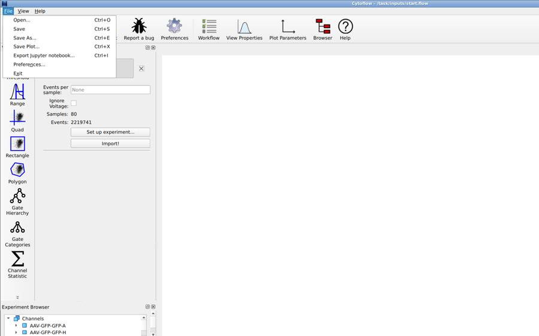
text(await tools.exec_command({cmd:"cu click 70 101\ncu screenshot /tmp/screen.png",max_output_tokens:1000}));image((await tools.view_image({path:"/tmp/screen.png"})).image_url);
Script completed Wall time 0.2 seconds Output:
{"chunk_id":"6044ab","wall_time_seconds":0.004615828,"exit_code":0,"original_token_count":4,"output":"/tmp/screen.png\n"}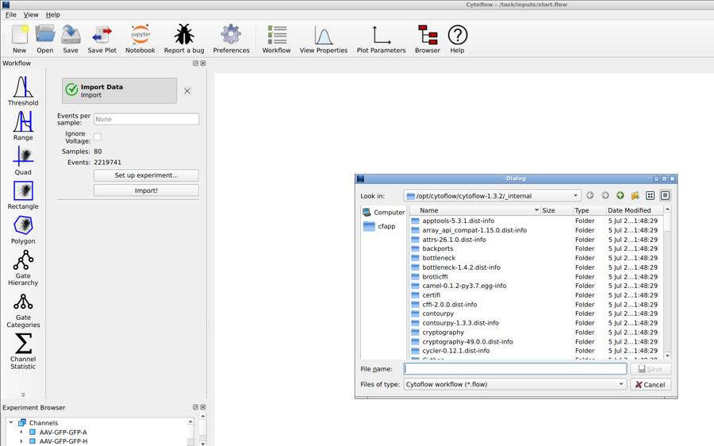
text(await tools.exec_command({cmd:"cu click 997 744\ncu paste /task/outputs/workflow.flow\ncu click 1311 743",max_output_tokens:1000}));
Script completed
Wall time 1.6 seconds
Output:
{"chunk_id":"2331a8","wall_time_seconds":1.393688494,"exit_code":0,"original_token_count":0,"output":""}text(await tools.exec_command({cmd:"cu screenshot /tmp/screen.png",max_output_tokens:1000}));image((await tools.view_image({path:"/tmp/screen.png"})).image_url);
Script completed Wall time 0.1 seconds Output:
{"chunk_id":"31fe63","wall_time_seconds":0.00000482,"exit_code":0,"original_token_count":4,"output":"/tmp/screen.png\n"}
text(await tools.exec_command({cmd:"cu click 49 452\ncu screenshot /tmp/screen.png",max_output_tokens:1000}));image((await tools.view_image({path:"/tmp/screen.png"})).image_url);
Script completed Wall time 0.2 seconds Output:
{"chunk_id":"a7221f","wall_time_seconds":0.00000463,"exit_code":0,"original_token_count":4,"output":"/tmp/screen.png\n"}
text(await tools.exec_command({cmd:"cu screenshot /tmp/screen.png",max_output_tokens:1000}));image((await tools.view_image({path:"/tmp/screen.png"})).image_url);
Script completed Wall time 0.1 seconds Output:
{"chunk_id":"f19d0d","wall_time_seconds":0.00000354,"exit_code":0,"original_token_count":4,"output":"/tmp/screen.png\n"}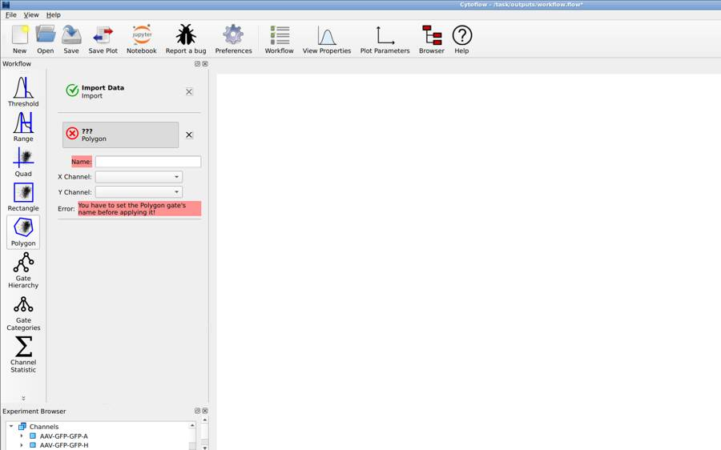
text(await tools.exec_command({cmd:"cu click 270 325\ncu type cells\ncu click 351 355\ncu screenshot /tmp/screen.png",max_output_tokens:1000}));image((await tools.view_image({path:"/tmp/screen.png"})).image_url);
Script completed Wall time 0.4 seconds Output:
{"chunk_id":"808b25","wall_time_seconds":0.233026211,"exit_code":0,"original_token_count":4,"output":"/tmp/screen.png\n"}
text(await tools.exec_command({cmd:"cu click 238 496\ncu click 351 384\ncu screenshot /tmp/screen.png",max_output_tokens:1000}));image((await tools.view_image({path:"/tmp/screen.png"})).image_url);
Script completed Wall time 0.3 seconds Output:
{"chunk_id":"df41c7","wall_time_seconds":0.1049423,"exit_code":0,"original_token_count":4,"output":"/tmp/screen.png\n"}
text(await tools.exec_command({cmd:"cu click 226 600\ncu click 649 71\ncu screenshot /tmp/screen.png",max_output_tokens:1000}));image((await tools.view_image({path:"/tmp/screen.png"})).image_url);
Script completed Wall time 0.3 seconds Output:
{"chunk_id":"66be8e","wall_time_seconds":0.103692041,"exit_code":0,"original_token_count":4,"output":"/tmp/screen.png\n"}
text(await tools.exec_command({cmd:"cu screenshot /tmp/screen.png",max_output_tokens:1000}));image((await tools.view_image({path:"/tmp/screen.png"})).image_url);
Script completed Wall time 0.1 seconds Output:
{"chunk_id":"6496c1","wall_time_seconds":0.00000403,"exit_code":0,"original_token_count":4,"output":"/tmp/screen.png\n"}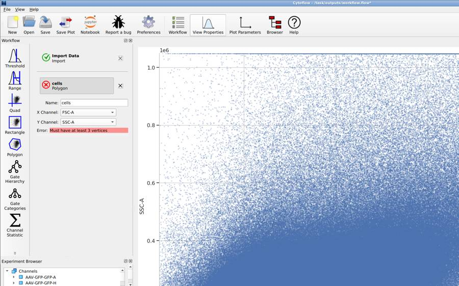
text(await tools.exec_command({cmd:"cu click 651 69\ncu screenshot /tmp/screen.png",max_output_tokens:1000}));image((await tools.view_image({path:"/tmp/screen.png"})).image_url);
Script completed Wall time 0.2 seconds Output:
{"chunk_id":"738def","wall_time_seconds":0.058797637,"exit_code":0,"original_token_count":4,"output":"/tmp/screen.png\n"}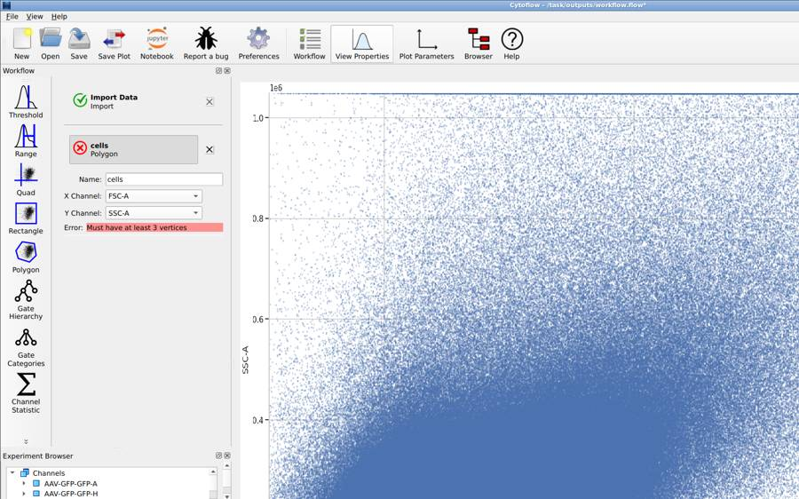
text(await tools.exec_command({cmd:"cu click 720 10 double\ncu screenshot /tmp/screen.png",max_output_tokens:1000}));image((await tools.view_image({path:"/tmp/screen.png"})).image_url);
Script completed Wall time 0.3 seconds Output:
{"chunk_id":"ba45d3","wall_time_seconds":0.126812711,"exit_code":0,"original_token_count":4,"output":"/tmp/screen.png\n"}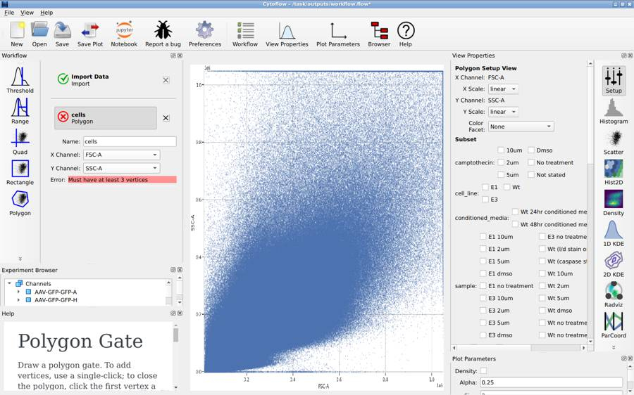
text(await tools.exec_command({cmd:"cu click 1167 202\ncu screenshot /tmp/screen.png",max_output_tokens:1000}));image((await tools.view_image({path:"/tmp/screen.png"})).image_url);
Script completed Wall time 0.2 seconds Output:
{"chunk_id":"86f036","wall_time_seconds":0.02661608,"exit_code":0,"original_token_count":4,"output":"/tmp/screen.png\n"}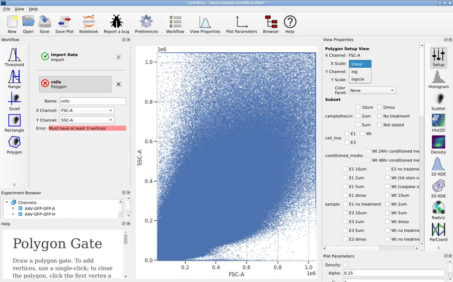
text(await tools.exec_command({cmd:"cu click 1133 230\ncu click 1168 254\ncu click 1135 280\ncu screenshot /tmp/screen.png",max_output_tokens:1000}));image((await tools.view_image({path:"/tmp/screen.png"})).image_url);
Script completed Wall time 0.4 seconds Output:
{"chunk_id":"455fe7","wall_time_seconds":0.237251638,"exit_code":0,"original_token_count":4,"output":"/tmp/screen.png\n"}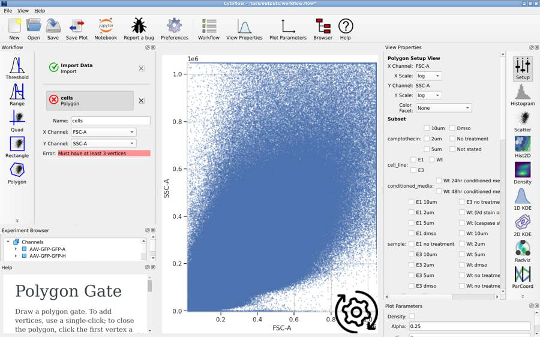
text(await tools.exec_command({cmd:"cu click 1097 844\ncu screenshot /tmp/screen.png",max_output_tokens:1000}));image((await tools.view_image({path:"/tmp/screen.png"})).image_url);
Script completed Wall time 0.2 seconds Output:
{"chunk_id":"71af70","wall_time_seconds":0.018040013,"exit_code":0,"original_token_count":4,"output":"/tmp/screen.png\n"}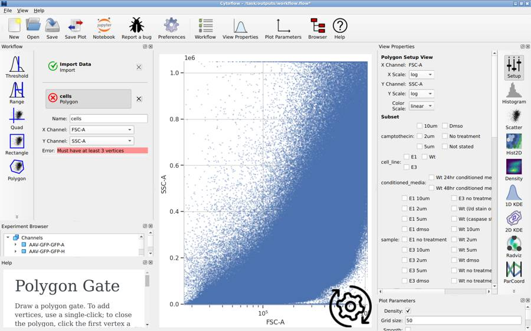
text(await tools.exec_command({cmd:"cu screenshot /tmp/screen.png",max_output_tokens:1000}));image((await tools.view_image({path:"/tmp/screen.png"})).image_url);
Script completed Wall time 0.1 seconds Output:
{"chunk_id":"572e23","wall_time_seconds":0.00000421,"exit_code":0,"original_token_count":4,"output":"/tmp/screen.png\n"}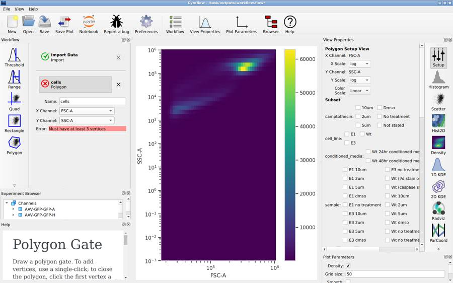
text(await tools.exec_command({cmd:"cu click 678 269\ncu click 737 274\ncu click 875 240\ncu click 875 160\ncu click 715 160\ncu click 662 218\ncu click 678 269\ncu key ctrl+s\ncu screenshot /tmp/screen.png",max_output_tokens:1000}));image((await tools.view_image({path:"/tmp/screen.png"})).image_url);
Script completed Wall time 0.8 seconds Output:
{"chunk_id":"44dc01","wall_time_seconds":0.666754004,"exit_code":0,"original_token_count":4,"output":"/tmp/screen.png\n"}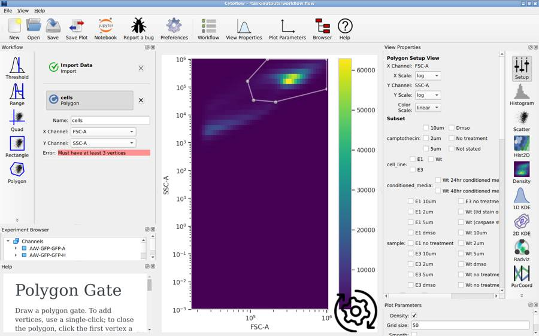
text(await tools.exec_command({cmd:"cu click 47 453\ncu screenshot /tmp/screen.png",max_output_tokens:1000}));image((await tools.view_image({path:"/tmp/screen.png"})).image_url);
Script completed Wall time 0.2 seconds Output:
{"chunk_id":"40d53b","wall_time_seconds":0.006777548,"exit_code":0,"original_token_count":4,"output":"/tmp/screen.png\n"}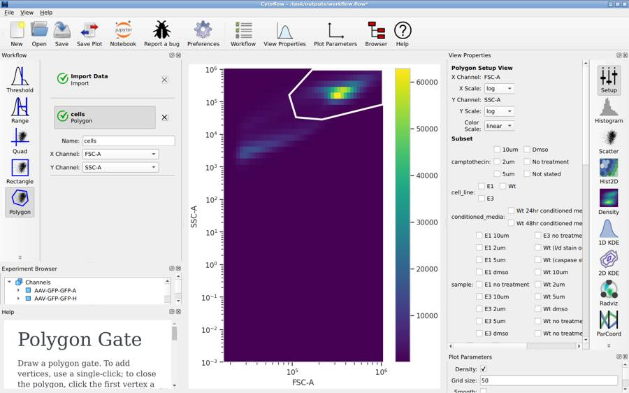
text(await tools.exec_command({cmd:"cu screenshot /tmp/screen.png",max_output_tokens:1000}));image((await tools.view_image({path:"/tmp/screen.png"})).image_url);
Script completed Wall time 0.1 seconds Output:
{"chunk_id":"4077d1","wall_time_seconds":0.00000369,"exit_code":0,"original_token_count":4,"output":"/tmp/screen.png\n"}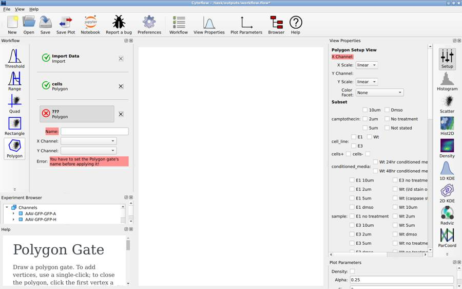
text(await tools.exec_command({cmd:"cu click 268 407\ncu type singlet_region\ncu click 351 437\ncu key f\ncu key Return\ncu click 351 469\ncu key f\ncu key Down\ncu key Return\ncu click 1086 479\ncu click 1099 844\ncu screenshot /tmp/screen.png",max_output_tokens:1000}));image((await tools.view_image({path:"/tmp/screen.png"})).image_url);
Script completed Wall time 1.0 seconds Output:
{"chunk_id":"d435d5","wall_time_seconds":0.871147145,"exit_code":0,"original_token_count":4,"output":"/tmp/screen.png\n"}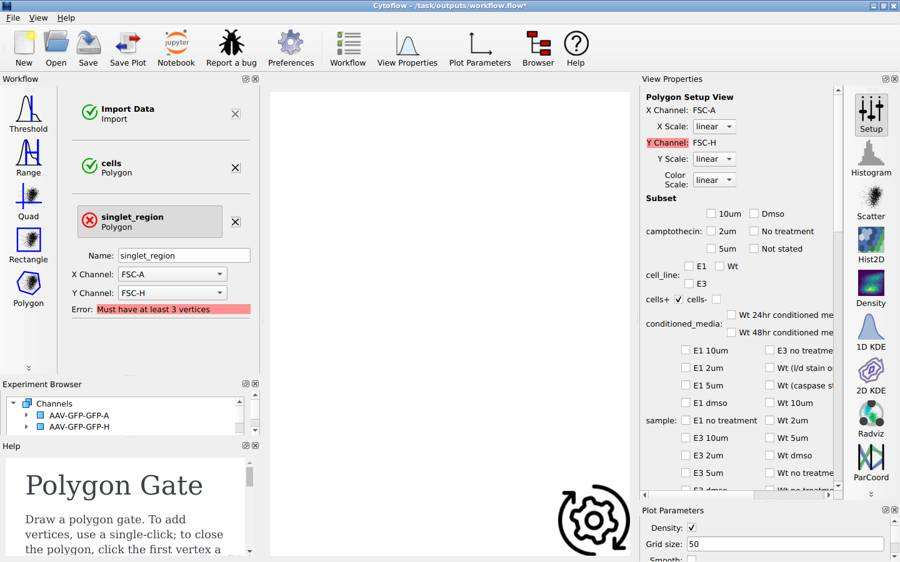
text(await tools.exec_command({cmd:"cu screenshot /tmp/screen.png",max_output_tokens:1000}));image((await tools.view_image({path:"/tmp/screen.png"})).image_url);
Script completed Wall time 0.1 seconds Output:
{"chunk_id":"608419","wall_time_seconds":0.0000045,"exit_code":0,"original_token_count":4,"output":"/tmp/screen.png\n"}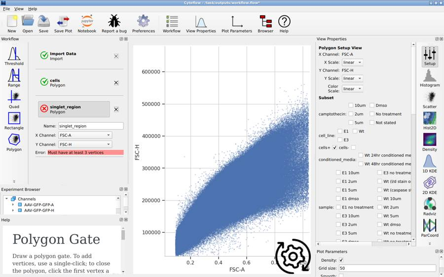
text(await tools.exec_command({cmd:"cu screenshot /tmp/screen.png",max_output_tokens:1000}));image((await tools.view_image({path:"/tmp/screen.png"})).image_url);
Script completed Wall time 0.1 seconds Output:
{"chunk_id":"9a0034","wall_time_seconds":0.0000038,"exit_code":0,"original_token_count":4,"output":"/tmp/screen.png\n"}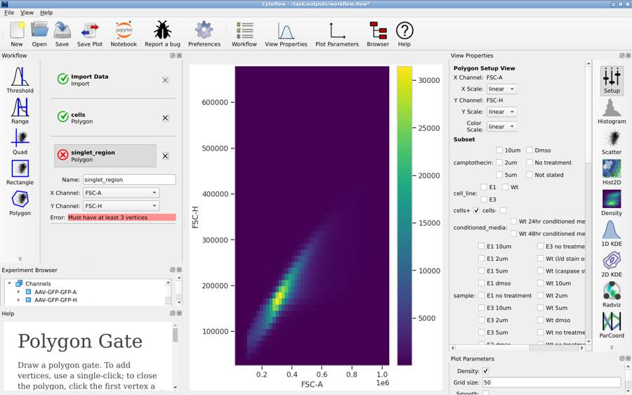
text(await tools.exec_command({cmd:"cu click 569 810\ncu click 670 692\ncu click 871 500\ncu click 871 337\ncu click 670 562\ncu click 569 738\ncu click 569 810\ncu key ctrl+s\ncu scroll 44 556 down 3\ncu screenshot /tmp/screen.png",max_output_tokens:1000}));image((await tools.view_image({path:"/tmp/screen.png"})).image_url);
Script completed Wall time 1.1 seconds Output:
{"chunk_id":"541d15","wall_time_seconds":0.971061946,"exit_code":0,"original_token_count":4,"output":"/tmp/screen.png\n"}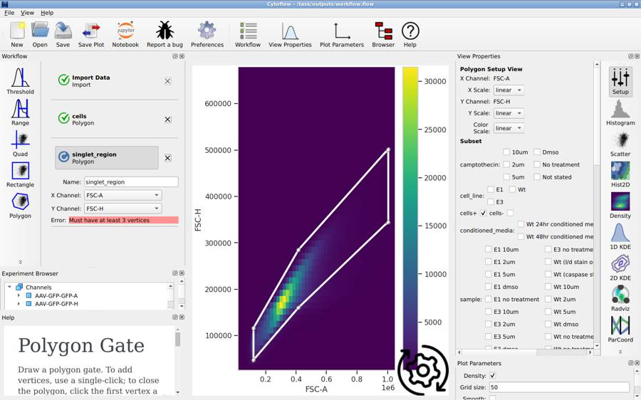
text(await tools.exec_command({cmd:"cu click 46 526\ncu screenshot /tmp/screen.png",max_output_tokens:1000}));image((await tools.view_image({path:"/tmp/screen.png"})).image_url);
Script completed Wall time 0.2 seconds Output:
{"chunk_id":"7c56ce","wall_time_seconds":0.008681896,"exit_code":0,"original_token_count":4,"output":"/tmp/screen.png\n"}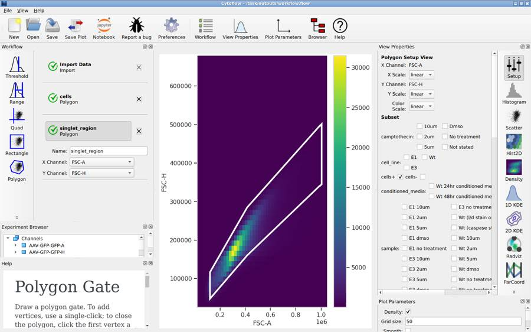
text(await tools.exec_command({cmd:"cu screenshot /tmp/screen.png",max_output_tokens:1000}));image((await tools.view_image({path:"/tmp/screen.png"})).image_url);
Script completed Wall time 0.1 seconds Output:
{"chunk_id":"45517e","wall_time_seconds":0.0000037,"exit_code":0,"original_token_count":4,"output":"/tmp/screen.png\n"}text(await tools.exec_command({cmd:"cu click 46 589\ncu screenshot /tmp/screen.png",max_output_tokens:1000}));image((await tools.view_image({path:"/tmp/screen.png"})).image_url);
Script completed Wall time 0.2 seconds Output:
{"chunk_id":"ba7eac","wall_time_seconds":0.006250077,"exit_code":0,"original_token_count":4,"output":"/tmp/screen.png\n"}text(await tools.exec_command({cmd:"cu click 169 360\ncu screenshot /tmp/screen.png",max_output_tokens:1000}));image((await tools.view_image({path:"/tmp/screen.png"})).image_url);
Script completed Wall time 0.2 seconds Output:
{"chunk_id":"12d2fc","wall_time_seconds":0.007181737,"exit_code":0,"original_token_count":4,"output":"/tmp/screen.png\n"}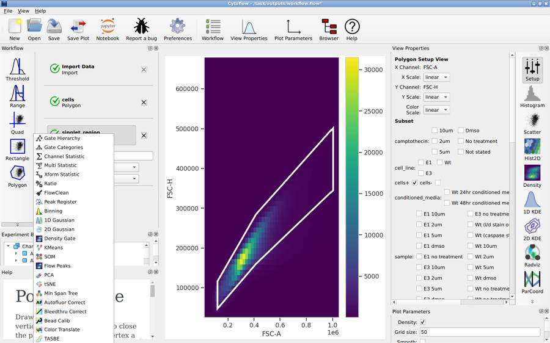
text(await tools.exec_command({cmd:"cu screenshot /tmp/screen.png",max_output_tokens:1000}));image((await tools.view_image({path:"/tmp/screen.png"})).image_url);
Script completed Wall time 0.1 seconds Output:
{"chunk_id":"c39670","wall_time_seconds":0.00000429,"exit_code":0,"original_token_count":4,"output":"/tmp/screen.png\n"}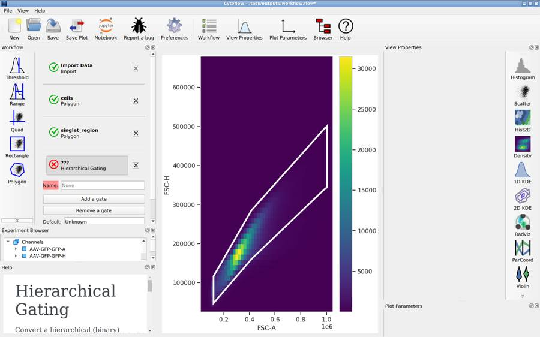
text(await tools.exec_command({cmd:"cu click 408 713\ncu click 408 615\ncu click 250 495\ncu key ctrl+a\ncu type singlets\ncu click 257 532\ncu screenshot /tmp/screen.png",max_output_tokens:1000}));image((await tools.view_image({path:"/tmp/screen.png"})).image_url);
Script completed Wall time 0.7 seconds Output:
{"chunk_id":"49d3c1","wall_time_seconds":0.547654839,"exit_code":0,"original_token_count":4,"output":"/tmp/screen.png\n"}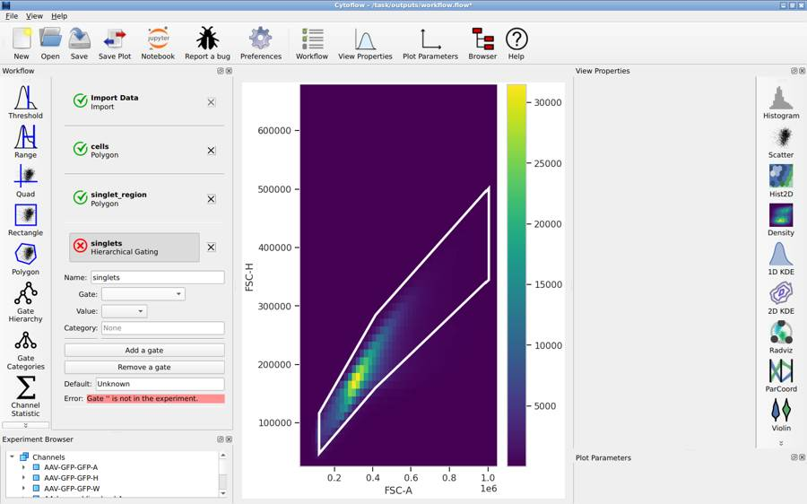
text(await tools.web__run({search_query:[{q:"site.cytoflow.readthedocs.io \"Hierarchical\" \"gate\""},{"q":"site:cytoflow.readthedocs.io \"Gate Hierarchy\""}],response_length:"long"}));
Script completed
Wall time 1.5 seconds
Output:
cytoflow.operations.hierarchy — Cytoflow 0.0 documentation (https://cytoflow.readthedocs.io/en/stable/dev_manual/api/cytoflow.operations.hierarchy.html)
citeturn0search0 [wordlim: 200] Crawled: 4 months ago; # cytoflow.operations.hierarchy# ... `HierarchyOp` – Given an ordered list of gate names and their values, create a categorical variable with values set by gate membership. ... Figuring out an event’s category is done by evaluating the hierarchical gates in order.
# cytoflow.operations.hierarchy#
Convert a hierarchical gating strategy into a categorical condition.
`HierarchyOp` – Given an ordered list of gate names and their values, create a categorical variable with values set by gate membership.
class cytoflow.operations.hierarchy.HierarchyOp[source]#
Bases: `HasStrictTraits`
Convert a hierarchical (binary) gating strategy into a categorical condition.
Hierarchical gating strategies are quite common when doing manual gating. For example, an 8-stain panel can separate monocytes into macrophages, B cells, NK cells, NKT cells, T cells, DCs, and neutrophils – but then, because these states are mutually exclusive, a reasonable question is “how much of each are there?” `Cytoflow` can define these gates, but because it does not have any concept of nested gates, plotting and analyzing this gating strategy can be challenging, particularly in the GUI.
`HierarchyOp` converts a list of gates into a categorical variable to enable straightforward analysis. For example, monocytes stained with CD64, CD3 and CD19 can differentiate between macrophages and B cells. A user defines a `ThresholdOp` gate to separate CD64+ cells (macrophages) from the rest of the events, then they use a `PolygonOp` to distinguish the CD19+/CD3- cells (B cells) from everything else. `HierarchyOp` can take these two gates and create a categorical condition with the values `Macrophages`, `B_Cells`, and `Unknown`.
The operation is set up by providing a list of conditions, values for those conditions, and the category that condition indicates. Figuring out an event’s category is done by evaluating the hierarchical gates in order. For each event, the first condition/value pair is considered. If that event has that value, its new category is set accordingly. If not, then the next gate in the list is considered. If the event is a member in none of the gates, it receives the category listed in the `default` attribute.
name#
The operation name. Used to name the new condition in the experiment that’s created by `apply`.
Type:
Str
gates#
The ordered list of gates that implement the gating hierarchy. Each three-tuple has the following format:
* `Str` - the name of the gating operation. (Must be a key in `Experiment.conditions` and a column in `Experiment.data`)
* `Any` - the value that the gate has to have to indicate membership in this class.
* `Str` - the name of this class’s category, to put in the new condition.
Type:
List(Tuple(Str, Any, Str))
default#
The name that unclassified events will have in the new categorical condition.
Type:
Str (default = “Unknown”)
Examples
Make a little data set.
>>> import cytoflow as flow
>>> import_op = flow.ImportOp()
>>> import_op.tubes = [flow.Tube(file = "Plate01/RFP_Well_A3.fcs",
... conditions = {'Dox' : 10.0}),
... flow.Tube(file = "Plate01/RFP_Well_A6.fcs",
... conditions = {'Dox' : 1.0})]
>>> import_op.conditions = {'Dox' : 'float'}
>>> ex = import_op.apply()
Create two threshold gates, simulating a hierarchical gating scheme.
>>> ex2 = flow.ThresholdOp(name = 'B1_high',
... channel = 'B1-A',
... threshold = 500).apply(ex)
>>> ex3 = flow.ThresholdOp(name = 'Y2_high',
... channel = 'Y2-A',
... threshold = 300).apply(ex2)
Define the hierarchical gating scheme.
>>> ex4 = flow.HierarchyOp(name = "Cell_Type",
... gates = [("B1_high", True, "B1_high_cells"),
... ("Y2_high", True, "Y2_high_cells")]).apply(ex3)
Plot the new categories.
>>> flow.ScatterplotView(xchannel = "B1-A",
... xscale = "log",
... ychannel = "Y2-A",
... yscale = "log",
... huefacet = "Cell_Type").plot(ex4)
Image: ../../_images/cytoflow-operations-hierarchy-4.png
apply(experiment)[source]#
Computes the membership at each level of the hierarchy and assigns the condition’s value accordingly.
Parameters:
experiment (Experiment) – the old `Experiment` to which this operation is applied
Returns:
a new `Experiment`, the same as `experiment` but with a new condition of type `category` with the same name as the operation name. The value of the condition is the hierarchy subset that the event was assigned to, or left to the default value otherwise.
Return type:
Experiment
Raises:
CytoflowOpError – if for some reason the operation can’t be applied to this experiment. The reason is in the `args` attribute.--------------------------------------------------------------------------------
Operation and View Gallery — Cytoflow 0.0 documentation (https://cytoflow.readthedocs.io/en/stable/user_manual/reference/reference.html)
citeturn0search1 [wordlim: 200] Crawled: 4 months ago; Below is a gallery of Cytoflow’s operations and views. ... Gate Hierarchy
Hierarchical Gating
# Operation and View Gallery#
Below is a gallery of Cytoflow’s operations and views. Each header will take you to the corresponding manual page.
## Operations#
### Gates#
Image
Threshold Gate
Threshold Gate
Image
Range Gate
Range Gate
Image
Quad Gate
Quadrant Gate
Im
… [29,333 more characters not shown]text(await tools.exec_command({cmd:"cu click 376 440\ncu screenshot /tmp/screen.png",max_output_tokens:1000}));image((await tools.view_image({path:"/tmp/screen.png"})).image_url);
Script completed Wall time 0.2 seconds Output:
{"chunk_id":"5505de","wall_time_seconds":0.00000481,"exit_code":0,"original_token_count":4,"output":"/tmp/screen.png\n"}text(await tools.exec_command({cmd:"cu click 235 351\ncu click 47 613\ncu screenshot /tmp/screen.png",max_output_tokens:1000}));image((await tools.view_image({path:"/tmp/screen.png"})).image_url);
Script completed Wall time 0.3 seconds Output:
{"chunk_id":"857f65","wall_time_seconds":0.106773919,"exit_code":0,"original_token_count":4,"output":"/tmp/screen.png\n"}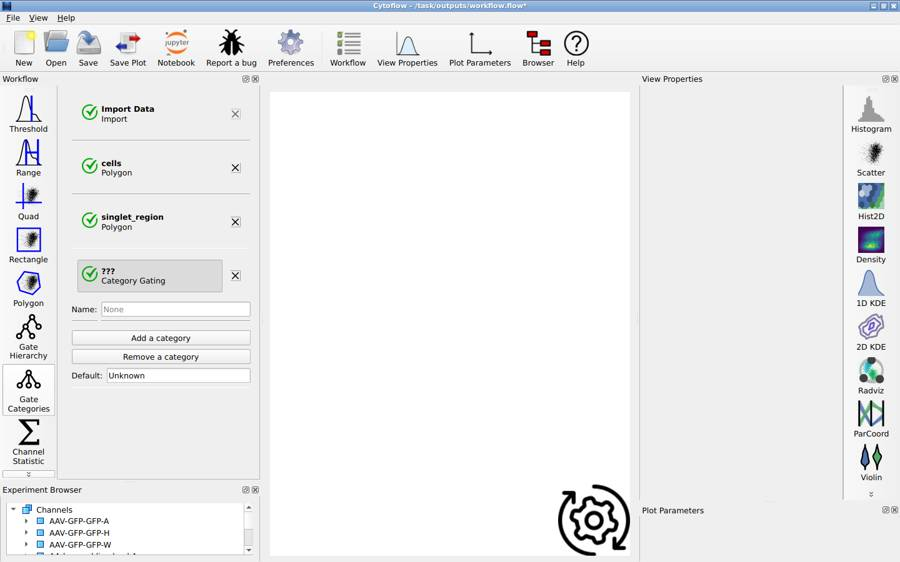
text(await tools.exec_command({cmd:"cu click 263 495\ncu key ctrl+a\ncu type singlets\ncu click 250 542\ncu screenshot /tmp/screen.png",max_output_tokens:1000}));image((await tools.view_image({path:"/tmp/screen.png"})).image_url);
Script completed Wall time 0.5 seconds Output:
{"chunk_id":"3af111","wall_time_seconds":0.343090538,"exit_code":0,"original_token_count":4,"output":"/tmp/screen.png\n"}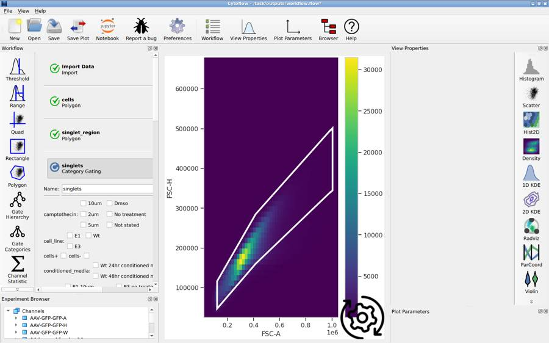
text(await tools.exec_command({cmd:"cu click 166 671\ncu scroll 335 706 down 6\ncu screenshot /tmp/screen.png",max_output_tokens:1000}));image((await tools.view_image({path:"/tmp/screen.png"})).image_url);
Script completed Wall time 0.8 seconds Output:
{"chunk_id":"3aae6d","wall_time_seconds":0.608129316,"exit_code":0,"original_token_count":4,"output":"/tmp/screen.png\n"}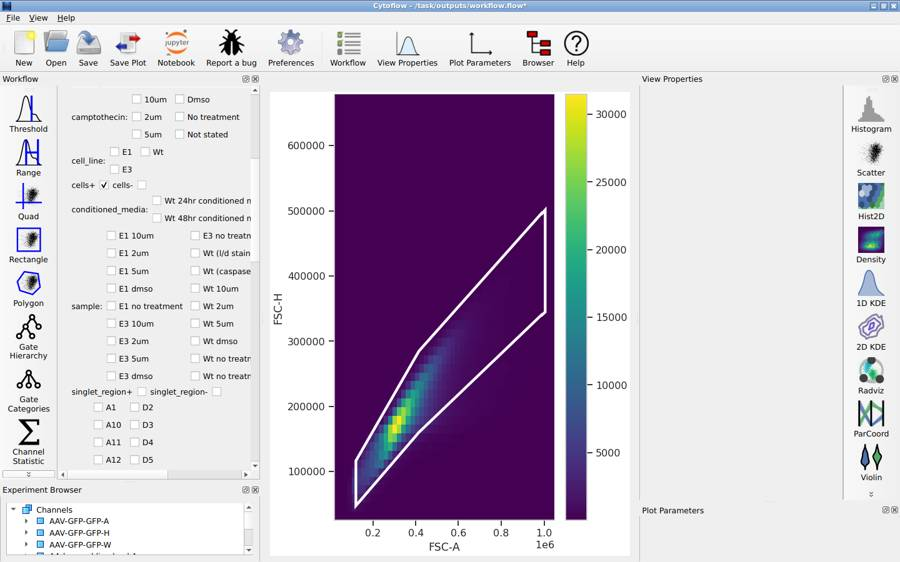
text(await tools.exec_command({cmd:"cu click 226 627\ncu scroll 335 704 down 18\ncu screenshot /tmp/screen.png",max_output_tokens:1000}));image((await tools.view_image({path:"/tmp/screen.png"})).image_url);
Script completed Wall time 2.0 seconds Output:
{"chunk_id":"f56fe7","wall_time_seconds":1.808850284,"exit_code":0,"original_token_count":4,"output":"/tmp/screen.png\n"}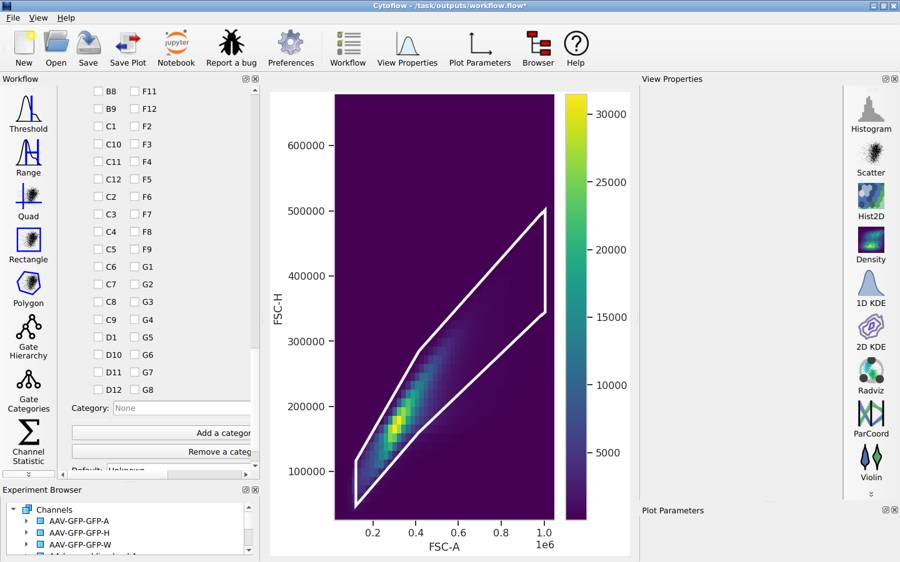
text(await tools.exec_command({cmd:"cu click 270 652\ncu key ctrl+a\ncu type positive\ncu key Tab\ncu key ctrl+s\ncu click 48 246\ncu screenshot /tmp/screen.png",max_output_tokens:1000}));image((await tools.view_image({path:"/tmp/screen.png"})).image_url);
Script completed Wall time 0.6 seconds Output:
{"chunk_id":"4e346f","wall_time_seconds":0.385632892,"exit_code":0,"original_token_count":4,"output":"/tmp/screen.png\n"}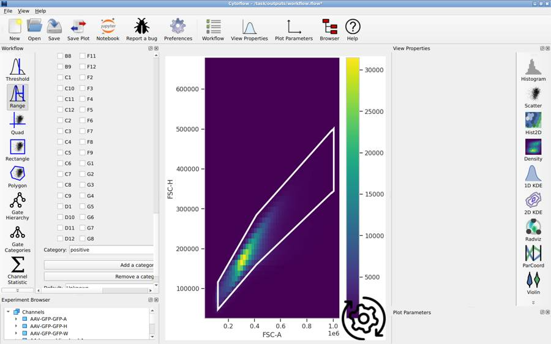
text(await tools.exec_command({cmd:"cu screenshot /tmp/screen.png",max_output_tokens:1000}));image((await tools.view_image({path:"/tmp/screen.png"})).image_url);
Script completed Wall time 0.1 seconds Output:
{"chunk_id":"2d4185","wall_time_seconds":0.00000394,"exit_code":0,"original_token_count":4,"output":"/tmp/screen.png\n"}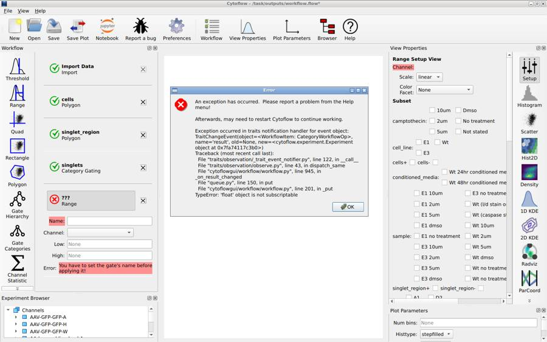
text(await tools.exec_command({cmd:"cu click 915 544\ncu click 377 526\ncu click 377 441\ncu screenshot /tmp/screen.png",max_output_tokens:1000}));image((await tools.view_image({path:"/tmp/screen.png"})).image_url);
Script completed Wall time 0.4 seconds Output:
{"chunk_id":"0edf46","wall_time_seconds":0.209064449,"exit_code":0,"original_token_count":4,"output":"/tmp/screen.png\n"}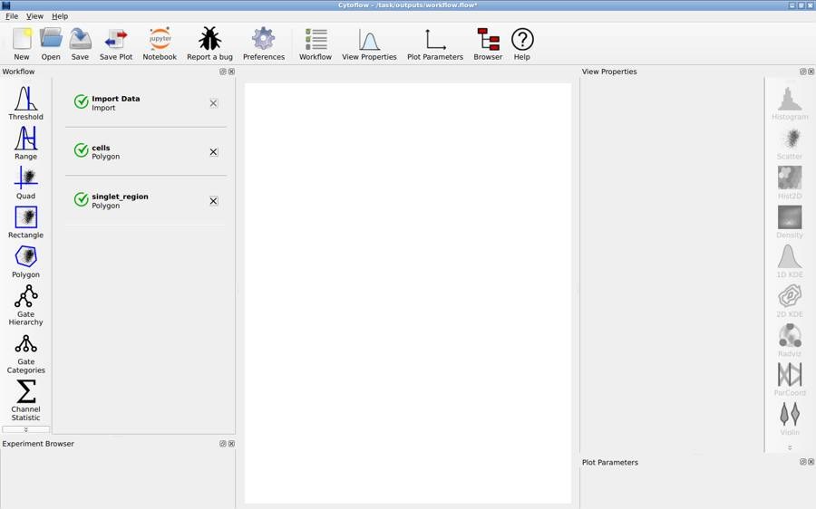
text(await tools.exec_command({cmd:"cu click 228 353\ncu screenshot /tmp/screen.png",max_output_tokens:1000}));image((await tools.view_image({path:"/tmp/screen.png"})).image_url);
Script completed Wall time 0.2 seconds Output:
{"chunk_id":"6a1a53","wall_time_seconds":0.008098887,"exit_code":0,"original_token_count":4,"output":"/tmp/screen.png\n"}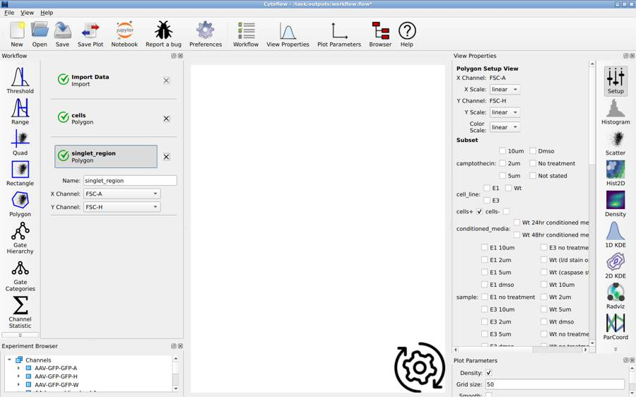
text(await tools.exec_command({cmd:"cu click 280 409\ncu key ctrl+a\ncu type singlets\ncu key Tab\ncu click 47 244\ncu screenshot /tmp/screen.png",max_output_tokens:1000}));image((await tools.view_image({path:"/tmp/screen.png"})).image_url);
Script completed Wall time 0.5 seconds Output:
{"chunk_id":"b6785f","wall_time_seconds":0.359676031,"exit_code":0,"original_token_count":4,"output":"/tmp/screen.png\n"}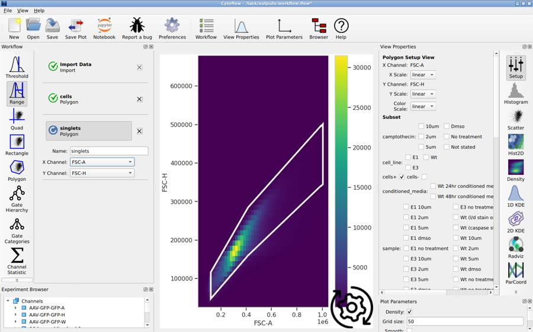
text(await tools.exec_command({cmd:"cu screenshot /tmp/screen.png",max_output_tokens:1000}));image((await tools.view_image({path:"/tmp/screen.png"})).image_url);
Script completed Wall time 0.1 seconds Output:
{"chunk_id":"e68d9c","wall_time_seconds":0.00000467,"exit_code":0,"original_token_count":4,"output":"/tmp/screen.png\n"}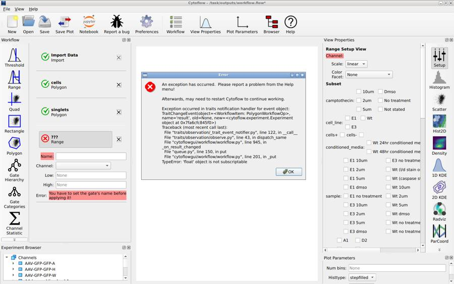
text(await tools.exec_command({cmd:"cu click 913 544\ncu click 274 496\ncu type live\ncu click 339 523\ncu screenshot /tmp/screen.png",max_output_tokens:1000}));image((await tools.view_image({path:"/tmp/screen.png"})).image_url);
Script completed Wall time 0.5 seconds Output:
{"chunk_id":"fd76e1","wall_time_seconds":0.31250553,"exit_code":0,"original_token_count":4,"output":"/tmp/screen.png\n"}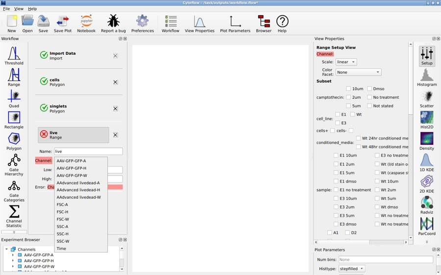
text(await tools.exec_command({cmd:"cu click 257 598\ncu click 1153 202\ncu key End\ncu key Return\ncu click 1086 426\ncu key ctrl+s\ncu screenshot /tmp/screen.png",max_output_tokens:1000}));image((await tools.view_image({path:"/tmp/screen.png"})).image_url);
Script completed Wall time 0.4 seconds Output:
{"chunk_id":"74adc3","wall_time_seconds":0.276154034,"exit_code":0,"original_token_count":4,"output":"/tmp/screen.png\n"}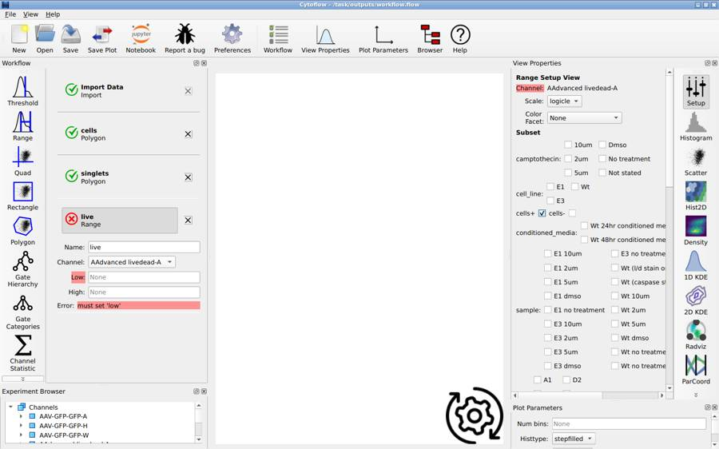
text(await tools.exec_command({cmd:"cu key ctrl+o\ncu screenshot /tmp/screen.png",max_output_tokens:1000}));image((await tools.view_image({path:"/tmp/screen.png"})).image_url);
Script completed Wall time 0.1 seconds Output:
{"chunk_id":"61fd5f","wall_time_seconds":0.00000481,"exit_code":0,"original_token_count":4,"output":"/tmp/screen.png\n"}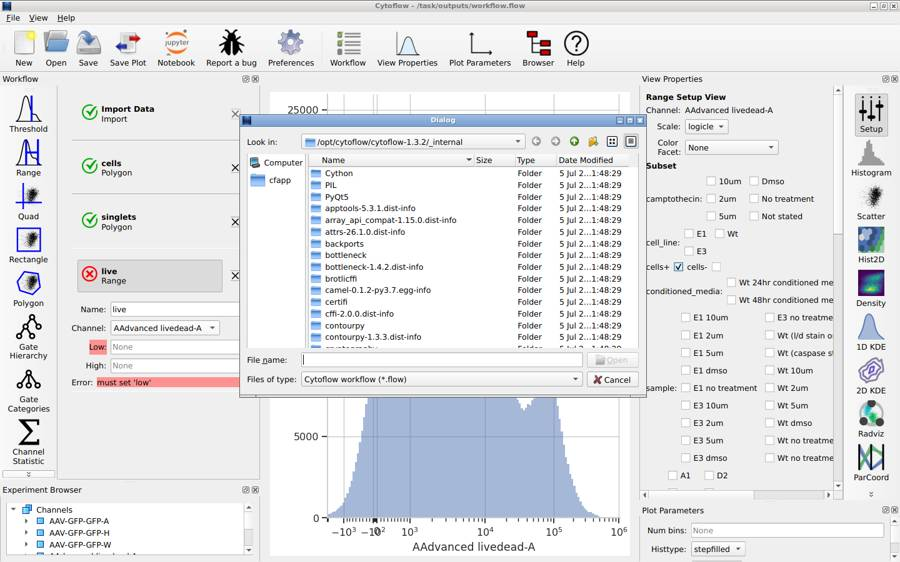
text(await tools.exec_command({cmd:"cu click 651 578\ncu paste /task/outputs/workflow.flow\ncu click 978 575",max_output_tokens:1000}));
Script completed
Wall time 1.6 seconds
Output:
{"chunk_id":"1279fb","wall_time_seconds":1.392576714,"exit_code":0,"original_token_count":0,"output":""}text(await tools.exec_command({cmd:"cu screenshot /tmp/screen.png",max_output_tokens:1000}));image((await tools.view_image({path:"/tmp/screen.png"})).image_url);
Script completed Wall time 0.1 seconds Output:
{"chunk_id":"3b6ce6","wall_time_seconds":0.00000411,"exit_code":0,"original_token_count":4,"output":"/tmp/screen.png\n"}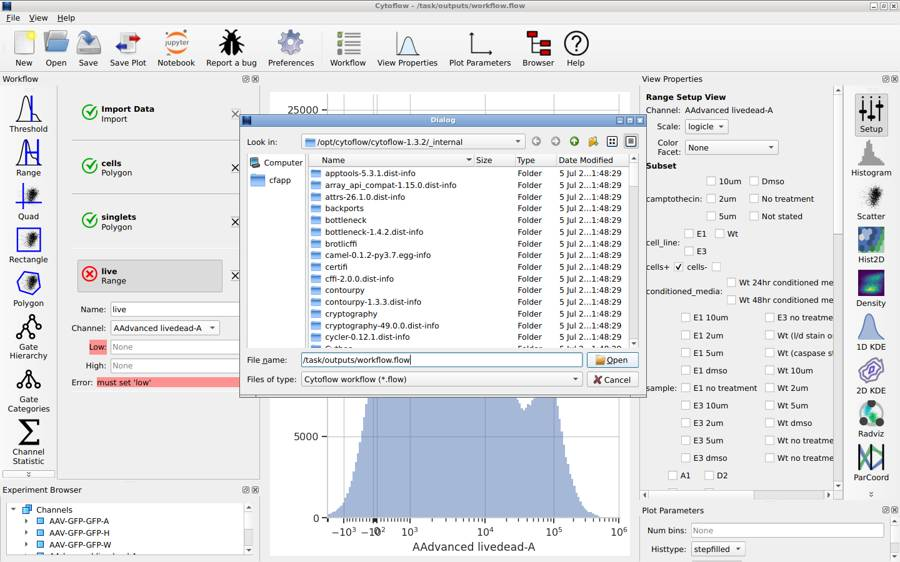
text(await tools.exec_command({cmd:"cu click 978 576\ncu screenshot /tmp/screen.png",max_output_tokens:1000}));image((await tools.view_image({path:"/tmp/screen.png"})).image_url);
Script completed Wall time 0.2 seconds Output:
{"chunk_id":"c2c6d8","wall_time_seconds":0.007834117,"exit_code":0,"original_token_count":4,"output":"/tmp/screen.png\n"}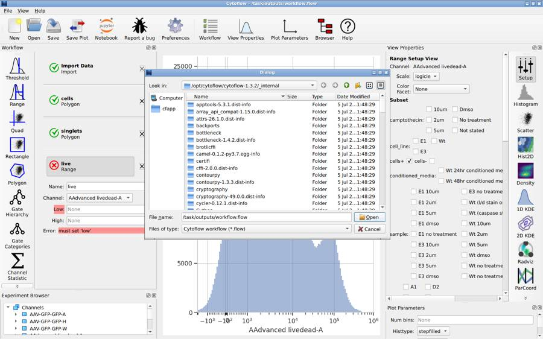
text(await tools.exec_command({cmd:"cu screenshot /tmp/screen.png",max_output_tokens:1000}));image((await tools.view_image({path:"/tmp/screen.png"})).image_url);
Script completed Wall time 0.1 seconds Output:
{"chunk_id":"dba445","wall_time_seconds":0.00000461,"exit_code":0,"original_token_count":4,"output":"/tmp/screen.png\n"}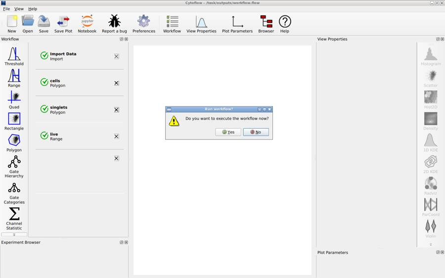
text(await tools.exec_command({cmd:"cu click 739 428",max_output_tokens:1000}));
Script completed
Wall time 0.1 seconds
Output:
{"chunk_id":"d1a87e","wall_time_seconds":0.000004,"exit_code":0,"original_token_count":0,"output":""}text(await tools.web__run({search_query:[{q:"site:thermofisher.com CellEvent Caspase 3/7 Green Flow Cytometry assay kit SYTOX AADvanced 500 nM 1 uM"}],response_length:"long"}));
text(await tools.exec_command({cmd:"cu screenshot /tmp/screen.png",max_output_tokens:1000}));image((await tools.view_image({path:"/tmp/screen.png"})).image_url);
Script completed Wall time 0.9 seconds Output:
USER GUIDE CellEvent™ Caspase-3/7 Green Flow Cytom (https://www.thermofisher.com/TFS-Assets/LSG/manuals/cellevent_caspase_3_7_grn_flow_cytometry_assay_kit_man.pdf) citeturn1search12 [wordlim: 200] Published: 8 months ago; The final concentration of the reagent is 500 nM. ... During the final 5 minutes of staining, add 1 µL of the 1 mM SYTOX ... Product CellEvent™ Caspase-3/7 Green Flow Cytometry Assay Kit | Cat. ... Product CellEvent™ Caspase-3/7 Green Flow Cytometry Assay Kit | Cat. 1.1. (Optional) Induce apoptosis in cells using the desired method. Prepare a negative control by incubating cells in the absence of apoptosis inducing agent. 1 Stain cells with CellEvent™ Caspase-3/7 Green Flow Cytometry Assay Kit (continued) 1.2. Harvest the cell sample(s). Adjust the cell concentration of the sample(s) between 1 × 105 cells/mL and 1 × 107 cells/mL using the appropriate buffer such as 1X PBS (Cat. No. 10010) ± 2% BSA, or complete growth medium (e.g., RPMI, Cat. No. 22400; DMEM, Cat. No. 11995). 1.3. Before using the SYTOX ™ AADvanced ™ Dead Cell Stain for the first time, prepare a 1 mM solution. a. Remove the vial containing the SYTOX ™ AADvanced ™ Dead Cell Stain (Component B) and the vial of DMSO (Component C) from the freezer and allow the contents to equilibrate to room temperature. b. Add 100 µL of DMSO to the vial of SYTOX ™ AADvanced ™ Dead Cell Stain and mix well. 1.4. Prepare flow cytometry tubes each containing 1 mL of cell suspension. We recommend that you prepare and acquire single stained compensation controls using the CellEvent ™ Caspase-3/7 Green Detection Reagent and the SYTOX ™ AADvanced ™ Dead Cell Stain. 1.5. Add 1 µL of CellEvent ™ Caspase-3/7 Green Detection Reagent to 1 mL of sample and mix gently. Incubate the samples for 30 minutes at 37°C or 45–60 minutes at room temperature, protected from light. The final concentration of the reagent is 500 nM. Note: For other cell types and models, stain concentration and labeling duration may require adjustment. For optimization, we recommend testing final concentrations between 400– 1,000 nM. 1.6. During the final 5 minutes of staining, add 1 µL of the 1 mM SYTOX ™ AADvanced ™ Dead Cell Stain in DMSO to the appropriate samples and mix gently. The final labeling concentration of stain is 1 µM. 1.7. Analyze the samples without washing or fixing, using 488‑nm excitation and collecting fluorescence emission using a 530/30 bandpass filter or equivalent for CellEvent ™ Caspase-3/7 Green Detection Reagent and a 690/50 bandpass filter or equivalent for SYTOX ™ AADvanced ™ Dead Cell Stain. Note: Alternative laser light sources (e.g., 532 nm and 561 nm) are also compatible with the SYTOX ™ AADvanced ™ Dead Cell Stain. 1.8. Following application of standard fluorescence compensation technique, 3 cell populations should be visible on a dual parameter dot plot of CellEvent ™ Caspase-3/7 Green Detection Reagent fluorescence versus SYTOX ™ AADvanced ™ Dead Cell Stain fluorescence (see Figure 1). 2 Perform multicolor staining CellEvent ™ Caspase-3/7 Green Detection Reagent and the SYTOX ™ AADvanced ™ Dead Cell Stain have minimal spectral overlap with fluorophores excited by other laser lines, and they can be combined with other dyes excitable by the 488‑nm laser or other lasers. If used in combination with other reagents for multicolor applications, apply the other dyes to the sample first following manufacturer’s instructions, and then apply the SYTOX ™ AADvanced ™ Dead Cell Stain as the last stain to the sample. Do not wash or fix samples prior to flow cytometric analysis. Related products Product CellEvent™ Caspase-3/7 Green Flow Cytometry Assay Kit | Cat. No. C10427 | Unit size 100 assays --- | --- | --- Product CellEvent™ Caspase-3/7 Green Flow Cytometry Assay Kit | Cat. No. C10740 | Unit size 20 assays Product CellEvent™ Caspase-3/7 Green Detection Reagent | Cat. No. C10423 | Unit size 100 µL Product CellEvent™ Caspase-3/7 Green Detection Reagent | Cat. No. C10723 | Unit size 20 µL CellEvent ™ Caspase-3/7 Green Flow Cytometry Assay Kit User Guide 3-------------------------------------------------------------------------------- CellEvent Caspase-3/7 Green Flow Cytometry Assay Kit User Guide (Pub.No. MAN0007522 B.0) (https://documents.thermofisher.com/TFS-Assets/LSG/manuals/cellevent_caspase_3_7_grn_flow_cytometry_assay_kit_man.pdf) citeturn1search13 [wordlim: 200] Published: 4.3 years ago; **Stain cells with CellEvent™ Caspase-3/7 Green Flow Cytometry Assay Kit (continued)** ... The final concentration of the reagent is 500 nM. ... ** Following application of standard fluorescence compensation technique, 3 cell populations should be visible on a dual parameter dot plot of CellEvent™ Caspase-3/7 Green Detection Reagent fluorescence versus SYTOX™ AADvanced™ Dead Cell Stain fluorescence (see Figure 1). 1. **Stain cells with CellEvent™ Caspase-3/7 Green Flow Cytometry Assay Kit (continued)** **1.1.** *(Optional)* Induce apoptosis in cells using the desired method. Prepare a negative control by incubating cells in the absence of apoptosis inducing agent. **1.2.** Harvest the cell sample(s). Adjust the cell concentration of the sample(s) between 1 × 10^5 cells/mL and 1 × 10^7 cells/mL using the appropriate buffer such as 1X PBS (Cat. No. 10010) ± 2% BSA, or complete growth medium (e.g., RPMI, Cat. No. 22400; DMEM, Cat. No. 11995). **1.3.** Before using the SYTOX™ AADvanced™ Dead Cell Stain for the first time, prepare a 1 mM solution. a. Remove the vial containing the SYTOX™ AADvanced™ Dead Cell Stain (Component B) and the vial of DMSO (Component C) from the freezer and allow the contents to equilibrate to room temperature. b. Add 100 µL of DMSO to the vial of SYTOX™ AADvanced™ Dead Cell Stain and mix well. **1.4.** Prepare flow cytometry tubes each containing 1 mL of cell suspension. We recommend that you prepare and acquire single stained compensation controls using the CellEvent™ Caspase-3/7 Green Detection … [22,768 more characters not shown]
{"chunk_id":"d52240","wall_time_seconds":0.00000363,"exit_code":0,"original_token_count":4,"output":"/tmp/screen.png\n"}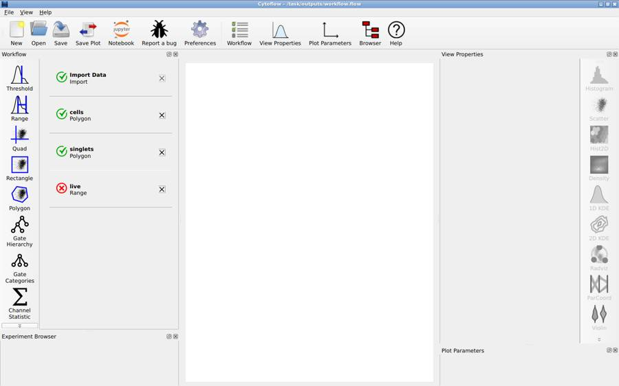
text(await tools.exec_command({cmd:"cu click 241 437\ncu scroll 1280 716 down 6\ncu screenshot /tmp/screen.png",max_output_tokens:1000}));image((await tools.view_image({path:"/tmp/screen.png"})).image_url);
Script completed Wall time 0.8 seconds Output:
{"chunk_id":"9ee261","wall_time_seconds":0.612488644,"exit_code":0,"original_token_count":4,"output":"/tmp/screen.png\n"}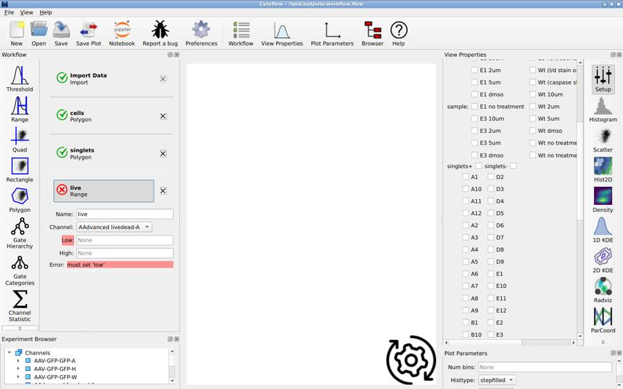
text(await tools.exec_command({cmd:"cu click 1107 382\ncu scroll 1267 716 down 14\ncu screenshot /tmp/screen.png",max_output_tokens:1000}));image((await tools.view_image({path:"/tmp/screen.png"})).image_url);
Script completed Wall time 1.6 seconds Output:
{"chunk_id":"a027ef","wall_time_seconds":1.413060756,"exit_code":0,"original_token_count":4,"output":"/tmp/screen.png\n"}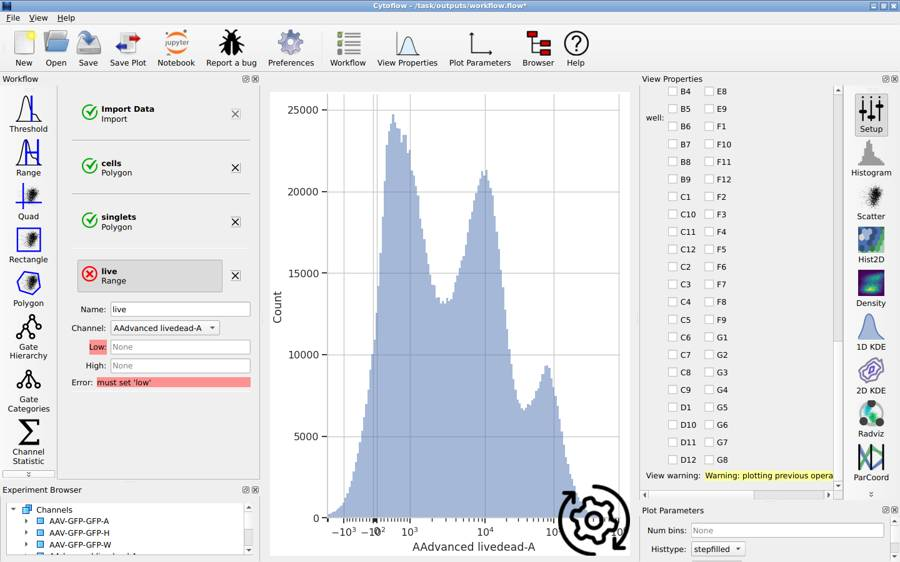
text(await tools.exec_command({cmd:"cu click 1134 540\ncu click 1134 708\ncu click 1134 736\ncu scroll 1279 343 up 30\ncu screenshot /tmp/screen.png",max_output_tokens:1000}));image((await tools.view_image({path:"/tmp/screen.png"})).image_url);
Script completed Wall time 3.4 seconds Output:
{"chunk_id":"2c827e","wall_time_seconds":3.225705299,"exit_code":0,"original_token_count":4,"output":"/tmp/screen.png\n"}text(await tools.exec_command({cmd:"cu click 1235 234\ncu key End\ncu key Return\ncu screenshot /tmp/screen.png",max_output_tokens:1000}));image((await tools.view_image({path:"/tmp/screen.png"})).image_url);
Script completed Wall time 0.2 seconds Output:
{"chunk_id":"9791ed","wall_time_seconds":0.038001745,"exit_code":0,"original_token_count":4,"output":"/tmp/screen.png\n"}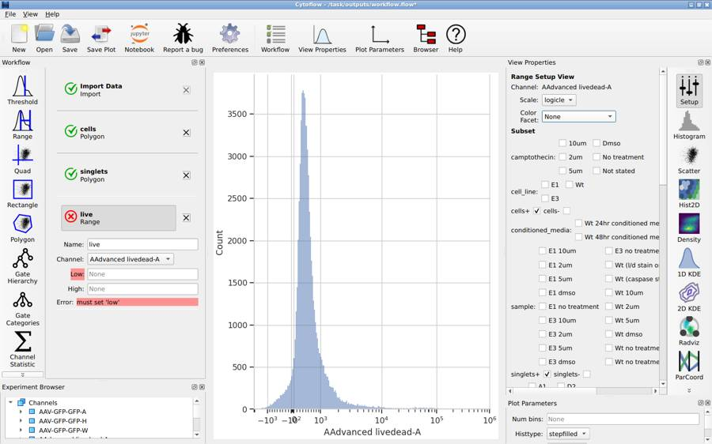
text(await tools.exec_command({cmd:"cu click 1233 236\ncu screenshot /tmp/screen.png",max_output_tokens:1000}));image((await tools.view_image({path:"/tmp/screen.png"})).image_url);
Script completed Wall time 0.2 seconds Output:
{"chunk_id":"c98c6c","wall_time_seconds":0.006689338,"exit_code":0,"original_token_count":4,"output":"/tmp/screen.png\n"}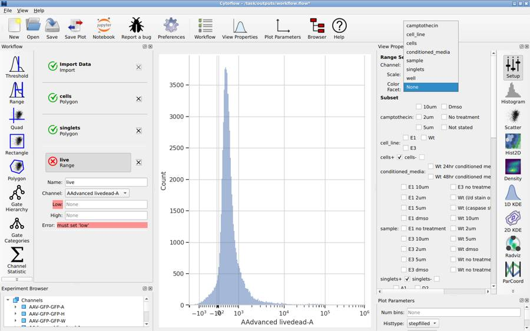
text(await tools.exec_command({cmd:"cu click 1120 211\ncu screenshot /tmp/screen.png",max_output_tokens:1000}));image((await tools.view_image({path:"/tmp/screen.png"})).image_url);
Script completed Wall time 0.2 seconds Output:
{"chunk_id":"7bf774","wall_time_seconds":0.007575667,"exit_code":0,"original_token_count":4,"output":"/tmp/screen.png\n"}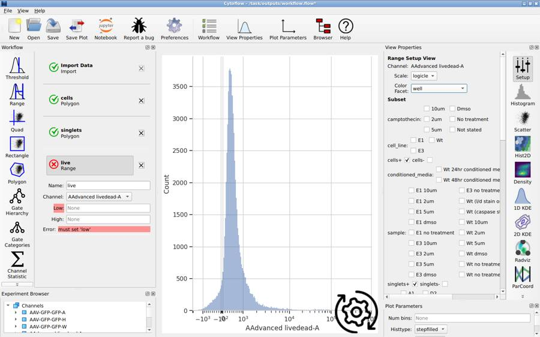
{
"duration_ms": 5000
}Wall time: 5.0028 seconds Sleep completed.
text(await tools.exec_command({cmd:"cu screenshot /tmp/screen.png",max_output_tokens:1000}));image((await tools.view_image({path:"/tmp/screen.png"})).image_url);
Script completed Wall time 0.1 seconds Output:
{"chunk_id":"120049","wall_time_seconds":0.00000518,"exit_code":0,"original_token_count":4,"output":"/tmp/screen.png\n"}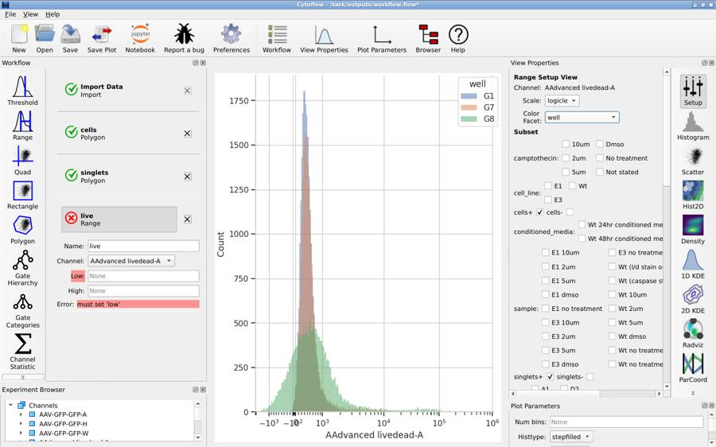
text(await tools.exec_command({cmd:"cu scroll 1280 704 down 30\ncu screenshot /tmp/screen.png",max_output_tokens:1000}));image((await tools.view_image({path:"/tmp/screen.png"})).image_url);
Script completed Wall time 3.1 seconds Output:
{"chunk_id":"7468af","wall_time_seconds":2.908007151,"exit_code":0,"original_token_count":4,"output":"/tmp/screen.png\n"}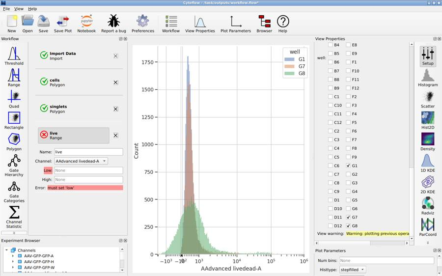
text(await tools.exec_command({cmd:"cu click 1134 567\ncu click 258 554\ncu key ctrl+a\ncu type -1000000\ncu key Tab\ncu click 267 585\ncu key ctrl+a\ncu type 3000\ncu key Tab\ncu screenshot /tmp/screen.png",max_output_tokens:1000}));image((await tools.view_image({path:"/tmp/screen.png"})).image_url);
Script completed Wall time 0.8 seconds Output:
{"chunk_id":"4908e8","wall_time_seconds":0.611260205,"exit_code":0,"original_token_count":4,"output":"/tmp/screen.png\n"}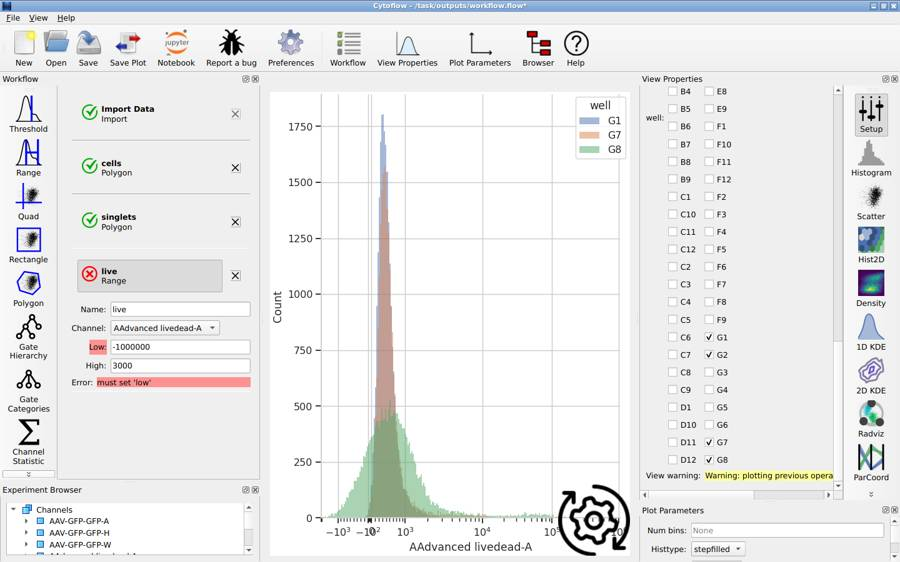
{
"duration_ms": 8000
}Wall time: 8.0035 seconds Sleep completed.
text(await tools.exec_command({cmd:"cu screenshot /tmp/screen.png",max_output_tokens:1000}));image((await tools.view_image({path:"/tmp/screen.png"})).image_url);
Script completed Wall time 0.1 seconds Output:
{"chunk_id":"66b05a","wall_time_seconds":0.0000037,"exit_code":0,"original_token_count":4,"output":"/tmp/screen.png\n"}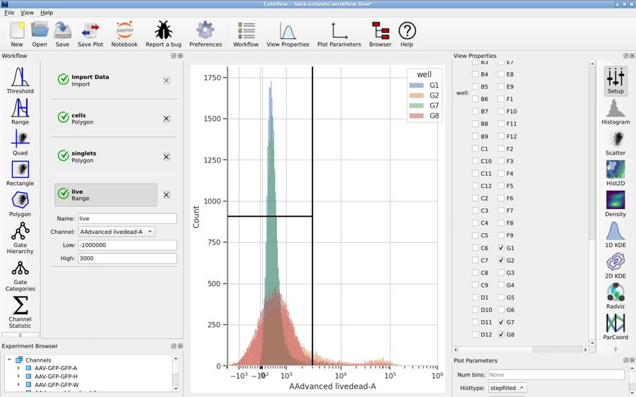
text(await tools.exec_command({cmd:"cu key ctrl+s\ncu screenshot /task/outputs/control_viability_gate.png\ncu click 45 177",max_output_tokens:1000}));
Script completed
Wall time 0.2 seconds
Output:
{"chunk_id":"9d7969","wall_time_seconds":0.030287438,"exit_code":0,"original_token_count":11,"output":"/task/outputs/control_viability_gate.png\n"}text(await tools.exec_command({cmd:"cu screenshot /tmp/screen.png",max_output_tokens:1000}));image((await tools.view_image({path:"/tmp/screen.png"})).image_url);
Script completed Wall time 0.1 seconds Output:
{"chunk_id":"2f69c5","wall_time_seconds":0.00000386,"exit_code":0,"original_token_count":4,"output":"/tmp/screen.png\n"}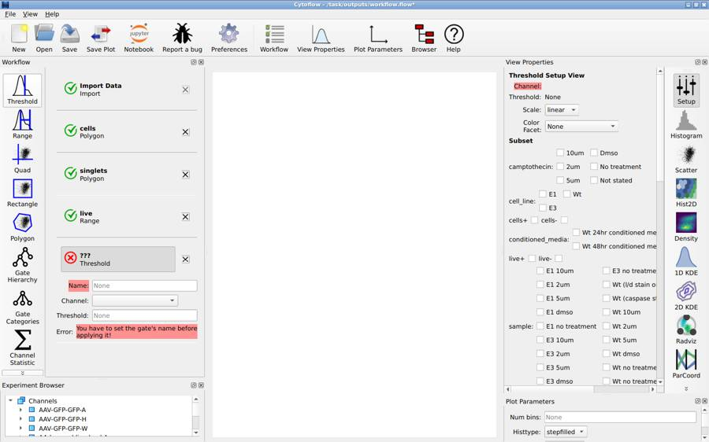
text(await tools.exec_command({cmd:"cu click 279 580\ncu key ctrl+a\ncu type caspase_positive\ncu click 350 611\ncu key Home\ncu key Return\ncu click 1167 224\ncu key End\ncu key Return\ncu click 1086 448\ncu scroll 1263 722 down 6\ncu screenshot /tmp/screen.png",max_output_tokens:1000}));image((await tools.view_image({path:"/tmp/screen.png"})).image_url);
Script completed Wall time 1.6 seconds Output:
{"chunk_id":"4dca24","wall_time_seconds":1.424883342,"exit_code":0,"original_token_count":4,"output":"/tmp/screen.png\n"}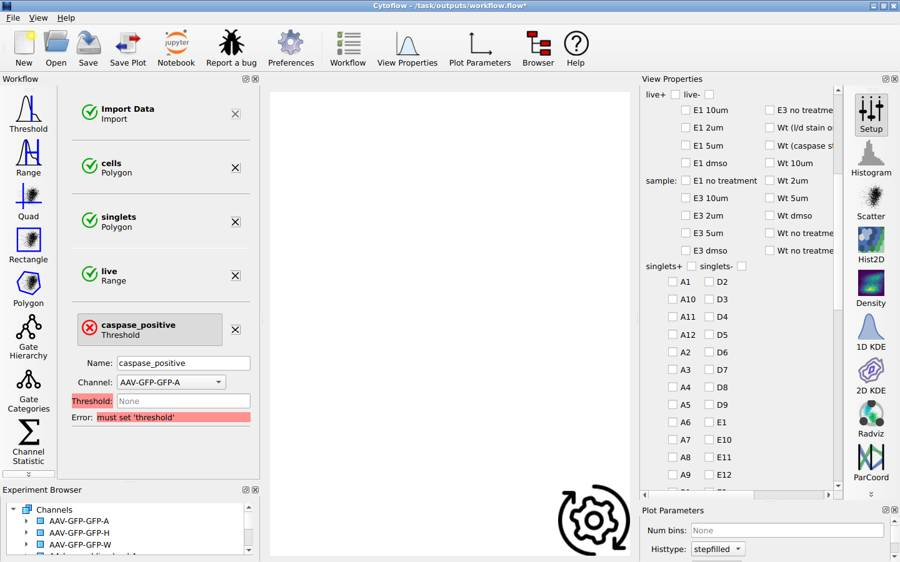
text(await tools.exec_command({cmd:"cu click 1107 426\ncu scroll 1285 713 down 19\ncu screenshot /tmp/screen.png",max_output_tokens:1000}));image((await tools.view_image({path:"/tmp/screen.png"})).image_url);
Script completed Wall time 2.1 seconds Output:
{"chunk_id":"372665","wall_time_seconds":1.910761715,"exit_code":0,"original_token_count":4,"output":"/tmp/screen.png\n"}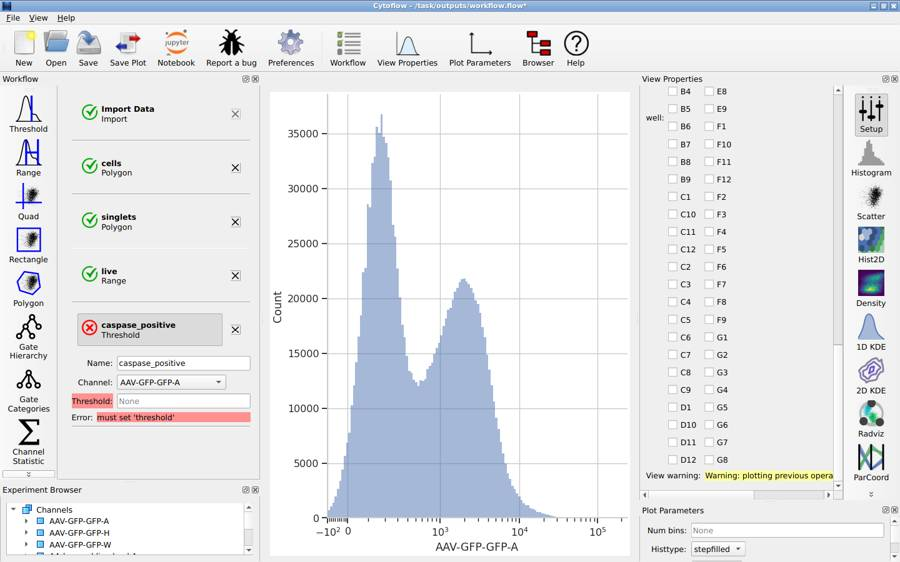
text(await tools.exec_command({cmd:"cu click 1135 540\ncu click 1135 567\ncu click 1135 708\ncu click 1135 736\ncu scroll 1272 325 up 30\ncu screenshot /tmp/screen.png",max_output_tokens:1000}));image((await tools.view_image({path:"/tmp/screen.png"})).image_url);
Script completed Wall time 3.5 seconds Output:
{"chunk_id":"38657a","wall_time_seconds":3.32564362,"exit_code":0,"original_token_count":4,"output":"/tmp/screen.png\n"}text(await tools.exec_command({cmd:"cu click 1245 257\ncu key w\ncu key Return",max_output_tokens:1000}));
Script completed
Wall time 0.2 seconds
Output:
{"chunk_id":"eb53fc","wall_time_seconds":0.0000034,"exit_code":0,"original_token_count":0,"output":""}text(await tools.exec_command({cmd:"cu screenshot /tmp/screen.png",max_output_tokens:1000}));image((await tools.view_image({path:"/tmp/screen.png"})).image_url);
Script completed Wall time 0.1 seconds Output:
{"chunk_id":"3742b2","wall_time_seconds":0.00000433,"exit_code":0,"original_token_count":4,"output":"/tmp/screen.png\n"}text(await tools.exec_command({cmd:"cu click 277 643\ncu key ctrl+a\ncu type 500\ncu key Tab\ncu click 1080 526",max_output_tokens:1000}));
Script completed
Wall time 0.3 seconds
Output:
{"chunk_id":"1c702e","wall_time_seconds":0.182489359,"exit_code":0,"original_token_count":0,"output":""}{
"duration_ms": 5000
}Wall time: 5.0037 seconds Sleep completed.
text(await tools.exec_command({cmd:"cu screenshot /task/outputs/control_caspase_gate.png\ncu key ctrl+s",max_output_tokens:1000}));image((await tools.view_image({path:"/task/outputs/control_caspase_gate.png"})).image_url);
Script completed Wall time 0.1 seconds Output:
{"chunk_id":"97452e","wall_time_seconds":0.00000388,"exit_code":0,"original_token_count":10,"output":"/task/outputs/control_caspase_gate.png\n"}text(await tools.exec_command({cmd:"cu click 47 691\ncu screenshot /tmp/screen.png",max_output_tokens:1000}));image((await tools.view_image({path:"/tmp/screen.png"})).image_url);
Script completed Wall time 0.2 seconds Output:
{"chunk_id":"272048","wall_time_seconds":0.006739867,"exit_code":0,"original_token_count":4,"output":"/tmp/screen.png\n"}text(await tools.exec_command({cmd:"cu screenshot /tmp/screen.png",max_output_tokens:1000}));image((await tools.view_image({path:"/tmp/screen.png"})).image_url);
Script completed Wall time 0.1 seconds Output:
{"chunk_id":"b06113","wall_time_seconds":0.0000045,"exit_code":0,"original_token_count":4,"output":"/tmp/screen.png\n"}text(await tools.exec_command({cmd:"cu click 278 667\ncu key ctrl+a\ncu type event_counts\ncu click 341 698\ncu key f\ncu key Return\ncu click 320 728\ncu screenshot /tmp/screen.png",max_output_tokens:1000}));image((await tools.view_image({path:"/tmp/screen.png"})).image_url);
Script completed Wall time 0.7 seconds Output:
{"chunk_id":"1ee1c0","wall_time_seconds":0.577467738,"exit_code":0,"original_token_count":4,"output":"/tmp/screen.png\n"}text(await tools.exec_command({cmd:"cu click 212 575\ncu scroll 340 692 down 7\ncu screenshot /tmp/screen.png",max_output_tokens:1000}));image((await tools.view_image({path:"/tmp/screen.png"})).image_url);
Script completed Wall time 0.9 seconds Output:
{"chunk_id":"b288b2","wall_time_seconds":0.709004198,"exit_code":0,"original_token_count":4,"output":"/tmp/screen.png\n"}text(await tools.exec_command({cmd:"cu scroll 348 689 down 7\ncu screenshot /tmp/screen.png",max_output_tokens:1000}));image((await tools.view_image({path:"/tmp/screen.png"})).image_url);
Script completed Wall time 0.8 seconds Output:
{"chunk_id":"cb642e","wall_time_seconds":0.604972588,"exit_code":0,"original_token_count":4,"output":"/tmp/screen.png\n"}text(await tools.exec_command({cmd:"cu drag 407 219 407 431\ncu screenshot /tmp/screen.png",max_output_tokens:1000}));image((await tools.view_image({path:"/tmp/screen.png"})).image_url);
Script completed Wall time 0.1 seconds Output:
{"chunk_id":"0d271c","wall_time_seconds":0.00000423,"exit_code":0,"original_token_count":4,"output":"/tmp/screen.png\n"}text(await tools.exec_command({cmd:"cu scroll 296 425 up 12\ncu screenshot /tmp/screen.png",max_output_tokens:1000}));image((await tools.view_image({path:"/tmp/screen.png"})).image_url);
Script completed Wall time 1.3 seconds Output:
{"chunk_id":"efd52e","wall_time_seconds":1.101693016,"exit_code":0,"original_token_count":4,"output":"/tmp/screen.png\n"}text(await tools.exec_command({cmd:"cu drag 421 464 620 464\ncu screenshot /tmp/screen.png",max_output_tokens:1000}));image((await tools.view_image({path:"/tmp/screen.png"})).image_url);
Script completed Wall time 0.1 seconds Output:
{"chunk_id":"0a8394","wall_time_seconds":0.00000413,"exit_code":0,"original_token_count":4,"output":"/tmp/screen.png\n"}text(await tools.exec_command({cmd:"cu click 185 574\ncu click 404 574\ncu click 1392 790\ncu screenshot /tmp/screen.png",max_output_tokens:1000}));image((await tools.view_image({path:"/tmp/screen.png"})).image_url);
Script completed Wall time 0.4 seconds Output:
{"chunk_id":"acb25f","wall_time_seconds":0.214745827,"exit_code":0,"original_token_count":4,"output":"/tmp/screen.png\n"}text(await tools.exec_command({cmd:"cu click 1393 791\ncu screenshot /tmp/screen.png",max_output_tokens:1000}));image((await tools.view_image({path:"/tmp/screen.png"})).image_url);
Script completed Wall time 0.2 seconds Output:
{"chunk_id":"82453d","wall_time_seconds":0.003150879,"exit_code":0,"original_token_count":4,"output":"/tmp/screen.png\n"}text(await tools.exec_command({cmd:"cu click 1394 791\nsleep 1\ncu screenshot /tmp/screen.png",max_output_tokens:1000}));image((await tools.view_image({path:"/tmp/screen.png"})).image_url);
Script completed Wall time 1.2 seconds Output:
{"chunk_id":"f3b55d","wall_time_seconds":1.003849153,"exit_code":0,"original_token_count":4,"output":"/tmp/screen.png\n"}text(await tools.exec_command({cmd:"cu click 1398 595\nsleep 1\ncu screenshot /tmp/screen.png",max_output_tokens:1000}));image((await tools.view_image({path:"/tmp/screen.png"})).image_url);
Script completed Wall time 1.2 seconds Output:
{"chunk_id":"56d5f7","wall_time_seconds":1.004222754,"exit_code":0,"original_token_count":4,"output":"/tmp/screen.png\n"}text(await tools.exec_command({cmd:"cu click 1199 182\ncu key Home\ncu key Return\nsleep 2\ncu screenshot /tmp/screen.png",max_output_tokens:1000}));image((await tools.view_image({path:"/tmp/screen.png"})).image_url);
Script completed Wall time 2.2 seconds Output:
{"chunk_id":"eedbc1","wall_time_seconds":2.034249657,"exit_code":0,"original_token_count":4,"output":"/tmp/screen.png\n"}text(await tools.exec_command({cmd:"cu click 1199 181\ncu screenshot /tmp/screen.png",max_output_tokens:1000}));image((await tools.view_image({path:"/tmp/screen.png"})).image_url);
Script completed Wall time 0.2 seconds Output:
{"chunk_id":"33fe80","wall_time_seconds":0.002115849,"exit_code":0,"original_token_count":4,"output":"/tmp/screen.png\n"}text(await tools.exec_command({cmd:"cu click 1148 205\nsleep 2\ncu screenshot /tmp/screen.png",max_output_tokens:1000}));image((await tools.view_image({path:"/tmp/screen.png"})).image_url);
Script completed Wall time 2.2 seconds Output:
{"chunk_id":"344589","wall_time_seconds":2.002953159,"exit_code":0,"original_token_count":4,"output":"/tmp/screen.png\n"}text(await tools.exec_command({cmd:"cu click 1147 210\nsleep 1\ncu screenshot /tmp/screen.png",max_output_tokens:1000}));image((await tools.view_image({path:"/tmp/screen.png"})).image_url);
Script completed Wall time 1.2 seconds Output:
{"chunk_id":"17aacc","wall_time_seconds":1.006517183,"exit_code":0,"original_token_count":4,"output":"/tmp/screen.png\n"}text(await tools.exec_command({cmd:"cu click 660 568\ncu paste /task/outputs/cytoflow_event_counts.csv\nsleep 1\ncu click 976 568\nsleep 1\ncu screenshot /tmp/screen.png",max_output_tokens:1000}));image((await tools.view_image({path:"/tmp/screen.png"})).image_url);
Script completed Wall time 3.6 seconds Output:
{"chunk_id":"aed52b","wall_time_seconds":3.4361899080000002,"exit_code":0,"original_token_count":4,"output":"/tmp/screen.png\n"}text(await tools.exec_command({cmd:"python - <<'PY'\nimport pandas as pd\np='/task/outputs/cytoflow_event_counts.csv'\ndf=pd.read_csv(p)\nprint(df.head().to_string(index=False))\nprint(df.shape)\nprint(df.tail().to_string(index=False))\nPY\ncu key ctrl+s\ncu click 47 690\nsleep 1\ncu screenshot /tmp/screen.png",max_output_tokens:2000}));image((await tools.view_image({path:"/tmp/screen.png"})).image_url);
Script completed Wall time 1.2 seconds Output:
{"chunk_id":"a1b463","wall_time_seconds":1.026227475,"exit_code":0,"original_token_count":16,"output":"/bin/bash: line 1: python: command not found\n/tmp/screen.png\n"}text(await tools.exec_command({cmd:"python3 - <<'PY'\nimport pandas as pd\np='/task/outputs/cytoflow_event_counts.csv'\ndf=pd.read_csv(p)\nprint(df.head().to_string(index=False))\nprint(df.shape)\nprint(df.tail().to_string(index=False))\nPY\ncu click 291 486\ncu key ctrl+a\ncu type gated_counts\ncu click 340 514\ncu key Home\ncu key Return\ncu click 319 545\ncu key Home\ncu key Return\ncu click 185 603\ncu click 405 575\ncu click 405 631\ncu click 405 659\ncu click 166 735\nsleep 5\ncu screenshot /tmp/screen.png",max_output_tokens:2000}));image((await tools.view_image({path:"/tmp/screen.png"})).image_url);
Script completed Wall time 6.6 seconds Output:
{"chunk_id":"d4310a","wall_time_seconds":6.467171392,"exit_code":0,"original_token_count":67,"output":" cells well SSC-H\n 0 A1 11104.0\n 0 A10 13633.0\n 0 A11 14827.0\n 0 A12 11567.0\n 0 A2 11730.0\n(160, 3)\n cells well SSC-H\n 1 G4 29903.0\n 1 G5 12236.0\n 1 G6 12954.0\n 1 G7 22351.0\n 1 G8 22956.0\n/tmp/screen.png\n"}text(await tools.exec_command({cmd:"cu click 1393 790\nsleep 1\ncu click 1398 594\nsleep 1\ncu click 1198 181\ncu screenshot /tmp/screen.png",max_output_tokens:1000}));image((await tools.view_image({path:"/tmp/screen.png"})).image_url);
Script completed Wall time 2.4 seconds Output:
{"chunk_id":"268f7a","wall_time_seconds":2.213224898,"exit_code":0,"original_token_count":4,"output":"/tmp/screen.png\n"}text(await tools.exec_command({cmd:"cu click 1151 230\nsleep 1\ncu click 1150 211\nsleep 1\ncu screenshot /tmp/screen.png",max_output_tokens:1000}));image((await tools.view_image({path:"/tmp/screen.png"})).image_url);
Script completed Wall time 2.3 seconds Output:
{"chunk_id":"1b236c","wall_time_seconds":2.112091958,"exit_code":0,"original_token_count":4,"output":"/tmp/screen.png\n"}text(await tools.exec_command({cmd:"cu click 658 569\ncu paste /task/outputs/cytoflow_gated_counts.csv\nsleep 1\ncu click 980 566\nsleep 1\ncu key ctrl+s\ncu screenshot /tmp/screen.png",max_output_tokens:1000}));image((await tools.view_image({path:"/tmp/screen.png"})).image_url);
Script completed Wall time 3.6 seconds Output:
{"chunk_id":"1d1812","wall_time_seconds":3.466443727,"exit_code":0,"original_token_count":4,"output":"/tmp/screen.png\n"}text(await tools.exec_command({cmd:"python3 - <<'PY'\nimport pandas as pd\nx=pd.read_csv('/task/outputs/cytoflow_event_counts.csv');g=pd.read_csv('/task/outputs/cytoflow_gated_counts.csv')\nprint(g.head(12).to_string(index=False));print(g.shape, g.columns.tolist())\np=x.pivot(index='well',columns='cells',values='SSC-H');p['all_events']=p[0]+p[1];p['cells']=p[1]\nprint('Total events', p.all_events.sum())\nprint(p[['all_events','cells']].sort_values('all_events').to_string())\nPY",max_output_tokens:5000}));
Script completed
Wall time 0.2 seconds
Output:
{"chunk_id":"a846f9","wall_time_seconds":0.068071204,"exit_code":0,"original_token_count":754,"output":" caspase_positive live singlets well AAV-GFP-GFP-A\n 0 0 0 A1 208.0\n 0 0 0 A10 227.0\n 0 0 0 A11 206.0\n 0 0 0 A12 199.0\n 0 0 0 A2 151.0\n 0 0 0 A3 139.0\n 0 0 0 A4 93.0\n 0 0 0 A5 156.0\n 0 0 0 A6 306.0\n 0 0 0 A7 292.0\n 0 0 0 A8 183.0\n 0 0 0 A9 255.0\n(639, 5) ['caspase_positive', 'live', 'singlets', 'well', 'AAV-GFP-GFP-A']\nTotal events 2219741.0\ncells all_events cells\nwell \nF1 11614.0 6481.0\nF4 11834.0 5971.0\nF8 13717.0 9060.0\nF5 14031.0 6940.0\nF6 14662.0 7065.0\nF12 15652.0 9999.0\nE8 15706.0 10420.0\nC10 15794.0 10156.0\nG5 15961.0 12236.0\nF9 16566.0 7452.0\nG6 16761.0 12954.0\nF10 16796.0 8432.0\nC1 17681.0 10380.0\nB5 17852.0 13899.0\nC4 18113.0 9608.0\nF2 18268.0 8523.0\nC8 18604.0 9838.0\nC5 18729.0 9568.0\nE4 18739.0 13382.0\nB1 18757.0 13977.0\nF11 18768.0 11815.0\nE5 18850.0 13508.0\nE1 18885.0 13182.0\nF7 19376.0 9799.0\nF3 19551.0 10120.0\nC11 19854.0 13122.0\nB4 19965.0 13369.0\nC3 21098.0 12365.0\nC6 21716.0 11117.0\nA8 22867.0 16820.0\nC7 22874.0 12019.0\nC9 22962.0 13722.0\nC12 23104.0 13737.0\nG7 24019.0 22351.0\nG8 24323.0 22956.0\nG2 24654.0 22472.0\nC2 25455.0 12756.0\nD4 26104.0 17755.0\nG1 26210.0 24442.0\nB8 26222.0 16927.0\nE12 26670.0 13711.0\nD8 27787.0 17320.0\nD5 28348.0 19060.0\nD12 28999.0 23137.0\nE9 29597.0 17226.0\nD1 29965.0 19722.0\nA12 30724.0 19157.0\nA1 31328.0 20224.0\nB12 31680.0 16147.0\nB6 31705.0 22618.0\nD6 32268.0 22253.0\nE6 32342.0 22041.0\nB2 32477.0 22932.0\nA4 33079.0 23337.0\nA6 33431.0 24818.0\nG4 34209.0 29903.0\nB9 34411.0 22003.0\nA5 34963.0 24643.0\nB7 35417.0 24239.0\nD9 35585.0 21003.0\nE2 35801.0 24223.0\nG3 35885.0 31518.0\nA7 36445.0 27357.0\nD7 38003.0 26422.0\nE7 38310.0 24599.0\nD10 38425.0 25915.0\nE3 39231.0 25993.0\nA9 40034.0 24396.0\nB3 40067.0 26991.0\nB10 40098.0 25655.0\nA2 40169.0 28439.0\nB11 41005.0 24428.0\nE10 41604.0 25327.0\nA10 42298.0 28665.0\nD2 42557.0 29020.0\nD11 43319.0 28651.0\nA11 43376.0 28549.0\nE11 43387.0 24371.0\nD3 44711.0 30006.0\nA3 47337.0 31523.0\n"}text(await tools.exec_command({cmd:"python3 - <<'PY'\nimport pandas as pd\nx=pd.read_csv('/task/outputs/cytoflow_event_counts.csv');g=pd.read_csv('/task/outputs/cytoflow_gated_counts.csv');layout=pd.read_csv('/task/inputs/plate_layout.csv')\np=x.pivot(index='well',columns='cells',values='SSC-H');p['all_events']=p[0]+p[1];p['cells']=p[1]\nfor name,sel in [('singlets',g.singlets.eq(1)),('live',g.singlets.eq(1)&g.live.eq(1)),('caspase_positive',g.singlets.eq(1)&g.live.eq(1)&g.caspase_positive.eq(1)),('all_singlet_caspase',g.singlets.eq(1)&g.caspase_positive.eq(1))]:\n p[name]=g[sel].groupby('well')['AAV-GFP-GFP-A'].sum().reindex(p.index,fill_value=0)\np['pct_live']=p.live/p.singlets*100;p['pct_caspase']=p.caspase_positive/p.live*100;p['pct_all_singlet_caspase']=p.all_singlet_caspase/p.singlets*100\np=p.merge(layout,on='well').sort_values('well',key=lambda s:s.str[0].map(ord)*100+s.str[1:].astype(int))\np.to_csv('/task/outputs/per_well_metrics.csv',index=False)\nrows=[]\nfor _,r in p.iterrows():\n for pop,role,parent in [('all_events','other','none'),('cells','cells','all_events'),('singlets','singlets','cells'),('live','live','singlets'),('caspase_positive','marker_positive','live')]:\n rows.append(dict(file=r.file,well=r.well,population=pop,role=role,parent=parent,count=int(r[pop]),pct_of_parent='' if parent=='none' else 100*r[pop]/r[parent]))\npd.DataFrame(rows).to_csv('/task/outputs/counts.csv',index=False)\nprint(p[['well','cells','singlets','live','caspase_positive','pct_live','pct_caspase','pct_all_singlet_caspase']].round(2).to_string(index=False))\nprint(p[~p.well.str.startswith('G')].groupby(['cell_line','camptothecin','conditioned_media']).pct_caspase.agg(['mean','std']).round(2).to_string())\nPY",max_output_tokens:6000}));
Script completed
Wall time 0.2 seconds
Output:
{"chunk_id":"c2bb89","wall_time_seconds":0.066962514,"exit_code":0,"original_token_count":2563,"output":"well cells singlets live caspase_positive pct_live pct_caspase pct_all_singlet_caspase\n A1 20224.0 18785.0 12850.0 1334.0 68.41 10.38 32.47\n A2 28439.0 26517.0 18699.0 1909.0 70.52 10.21 33.04\n A3 31523.0 29520.0 20835.0 2339.0 70.58 11.23 33.64\n A4 23337.0 21621.0 13569.0 2034.0 62.76 14.99 42.83\n A5 24643.0 22869.0 15284.0 1592.0 66.83 10.42 35.63\n A6 24818.0 22788.0 14843.0 956.0 65.14 6.44 32.18\n A7 27357.0 25120.0 16552.0 932.0 65.89 5.63 31.64\n A8 16820.0 15370.0 9519.0 679.0 61.93 7.13 36.11\n A9 24396.0 22373.0 14811.0 1345.0 66.20 9.08 33.35\n A10 28665.0 26674.0 18040.0 1189.0 67.63 6.59 31.74\n A11 28549.0 26791.0 17956.0 1289.0 67.02 7.18 33.60\n A12 19157.0 17329.0 10778.0 838.0 62.20 7.78 36.18\n B1 13977.0 12894.0 3336.0 1711.0 25.87 51.29 84.95\n B2 22932.0 21382.0 6159.0 1979.0 28.80 32.13 79.02\n B3 26991.0 25202.0 5642.0 1800.0 22.39 31.90 83.17\n B4 13369.0 11950.0 3108.0 1381.0 26.01 44.43 83.01\n B5 13899.0 12882.0 3013.0 1289.0 23.39 42.78 83.84\n B6 22618.0 21073.0 5222.0 1619.0 24.78 31.00 80.65\n B7 24239.0 22666.0 4642.0 1244.0 20.48 26.80 82.71\n B8 16927.0 15261.0 3196.0 1083.0 20.94 33.89 83.43\n B9 22003.0 20117.0 8467.0 2048.0 42.09 24.19 65.15\n B10 25655.0 23491.0 9774.0 2213.0 41.61 22.64 65.09\n B11 24428.0 22520.0 7801.0 2217.0 34.64 28.42 72.49\n B12 16147.0 14442.0 4503.0 1047.0 31.18 23.25 71.11\n C1 10380.0 9075.0 2104.0 231.0 23.18 10.98 70.51\n C2 12756.0 11370.0 3148.0 554.0 27.69 17.60 71.64\n C3 12365.0 11155.0 3329.0 248.0 29.84 7.45 62.28\n C4 9608.0 8258.0 2166.0 332.0 26.23 15.33 70.88\n C5 9568.0 8198.0 2540.0 354.0 30.98 13.94 65.17\n C6 11117.0 9740.0 2792.0 372.0 28.67 13.32 67.46\n C7 12019.0 10823.0 3951.0 441.0 36.51 11.16 59.44\n C8 9838.0 8470.0 2762.0 310.0 32.61 11.22 62.23\n C9 13722.0 12592.0 7540.0 607.0 59.88 8.05 36.61\n C10 10156.0 9506.0 6974.0 583.0 73.36 8.36 27.07\n C11 13122.0 12345.0 9384.0 508.0 76.01 5.41 22.85\n C12 13737.0 12599.0 8289.0 537.0 65.79 6.48 32.10\n D1 19722.0 18625.0 10462.0 507.0 56.17 4.85 43.95\n D2 29020.0 27218.0 17312.0 594.0 63.60 3.43 35.60\n D3 30006.0 28163.0 17107.0 749.0 60.74 4.38 39.22\n D4 17755.0 16235.0 8273.0 374.0 50.96 4.52 48.36\n D5 19060.0 17674.0 10675.0 335.0 60.40 3.14 37.30\n D6 22253.0 20625.0 13108.0 389.0 63.55 2.97 34.52\n D7 26422.0 24901.0 15428.0 511.0 61.96 3.31 35.06\n D8 17320.0 15782.0 8075.0 289.0 51.17 3.58 46.84\n D9 21003.0 19036.0 10782.0 435.0 56.64 4.03 40.24\n D10 25915.0 24242.0 15711.0 496.0 64.81 3.16 33.44\n D11 28651.0 26934.0 17459.0 644.0 64.82 3.69 34.09\n D12 23137.0 21704.0 16991.0 277.0 78.29 1.63 19.91\n E1 13182.0 12033.0 2697.0 591.0 22.41 21.91 80.86\n E2 24223.0 22507.0 4437.0 882.0 19.71 19.88 83.32\n E3 25993.0 24127.0 4165.0 628.0 17.26 15.08 84.21\n E4 13382.0 11787.0 1761.0 530.0 14.94 30.10 88.66\n E5 13508.0 12002.0 2005.0 435.0 16.71 21.70 85.27\n E6 22041.0 20581.0 3818.0 667.0 18.55 17.47 83.26\n E7 24599.0 22943.0 4180.0 634.0 18.22 15.17 83.22\n E8 10420.0 8981.0 1343.0 412.0 14.95 30.68 86.76\n E9 17226.0 15416.0 4814.0 821.0 31.23 17.05 71.34\n E10 25327.0 23163.0 8547.0 1191.0 36.90 13.93 66.58\n E11 24371.0 22302.0 6657.0 1395.0 29.85
… [4,525 more characters not shown]text(await tools.exec_command({cmd:"cu click 1393 243\nsleep 1\ncu screenshot /tmp/screen.png",max_output_tokens:1000}));image((await tools.view_image({path:"/tmp/screen.png"})).image_url);
Script completed Wall time 1.2 seconds Output:
{"chunk_id":"d6d343","wall_time_seconds":1.006653603,"exit_code":0,"original_token_count":4,"output":"/tmp/screen.png\n"}text(await tools.exec_command({cmd:"cu click 1294 181\ncu key Home\ncu key Return\ncu click 1191 210\ncu key End\ncu key Return\ncu click 1296 241\ncu key Home\ncu key Down\ncu key Down\ncu key Down\ncu key Return\ncu click 1191 271\ncu key End\ncu key Return\ncu click 1270 481\ncu key w\ncu key Return\ncu click 1086 693\ncu scroll 1257 710 down 7\nsleep 2\ncu screenshot /tmp/screen.png",max_output_tokens:1000}));image((await tools.view_image({path:"/tmp/screen.png"})).image_url);
Script completed Wall time 3.6 seconds Output:
{"chunk_id":"7db1e0","wall_time_seconds":3.436241568,"exit_code":0,"original_token_count":4,"output":"/tmp/screen.png\n"}text(await tools.exec_command({cmd:"cu click 1106 609\ncu scroll 1249 713 down 25\nsleep 3\ncu screenshot /tmp/screen.png",max_output_tokens:1000}));image((await tools.view_image({path:"/tmp/screen.png"})).image_url);
Script completed Wall time 5.7 seconds Output:
{"chunk_id":"328e62","wall_time_seconds":5.518412777,"exit_code":0,"original_token_count":4,"output":"/tmp/screen.png\n"}text(await tools.exec_command({cmd:"cu click 1134 561\ncu click 1134 589\ncu click 1134 729\ncu click 1134 758\ncu drag 620 463 420 463\nsleep 3\ncu screenshot /tmp/screen.png",max_output_tokens:1000}));image((await tools.view_image({path:"/tmp/screen.png"})).image_url);
Script completed Wall time 3.5 seconds Output:
{"chunk_id":"828e91","wall_time_seconds":3.321946163,"exit_code":0,"original_token_count":4,"output":"/tmp/screen.png\n"}text(await tools.exec_command({cmd:"cu drag 622 467 420 467\ncu click 683 140\ncu key End\nsleep 2\ncu screenshot /tmp/screen.png",max_output_tokens:1000}));image((await tools.view_image({path:"/tmp/screen.png"})).image_url);
Script completed Wall time 2.2 seconds Output:
{"chunk_id":"249346","wall_time_seconds":2.021580263,"exit_code":0,"original_token_count":4,"output":"/tmp/screen.png\n"}text(await tools.exec_command({cmd:"cu scroll 1241 319 up 40\nsleep 1\ncu screenshot /tmp/screen.png",max_output_tokens:1000}));image((await tools.view_image({path:"/tmp/screen.png"})).image_url);
Script completed Wall time 5.1 seconds Output:
{"chunk_id":"ea6be3","wall_time_seconds":4.906696022,"exit_code":0,"original_token_count":4,"output":"/tmp/screen.png\n"}text(await tools.exec_command({cmd:"cu scroll 1325 301 up 40\nsleep 1\ncu screenshot /tmp/screen.png",max_output_tokens:1000}));image((await tools.view_image({path:"/tmp/screen.png"})).image_url);
Script completed Wall time 5.1 seconds Output:
{"chunk_id":"d94b94","wall_time_seconds":4.906948813,"exit_code":0,"original_token_count":4,"output":"/tmp/screen.png\n"}text(await tools.exec_command({cmd:"cu click 1270 481\ncu key End\ncu key Return\ncu click 1270 371\ncu key w\ncu key Return\ncu click 556 73\nsleep 3\ncu screenshot /tmp/screen.png",max_output_tokens:1000}));image((await tools.view_image({path:"/tmp/screen.png"})).image_url);
Script completed Wall time 3.4 seconds Output:
{"chunk_id":"c0a6c7","wall_time_seconds":3.27509986,"exit_code":0,"original_token_count":4,"output":"/tmp/screen.png\n"}text(await tools.exec_command({cmd:"cu click 865 69\nsleep 2\ncu screenshot /tmp/screen.png",max_output_tokens:1000}));image((await tools.view_image({path:"/tmp/screen.png"})).image_url);
Script completed Wall time 2.2 seconds Output:
{"chunk_id":"d46b10","wall_time_seconds":2.007891908,"exit_code":0,"original_token_count":4,"output":"/tmp/screen.png\n"}text(await tools.exec_command({cmd:"cu screenshot /task/outputs/controls_uncompensated.png\ncu click 556 72\ncu scroll 592 300 up 40\nsleep 1\ncu screenshot /tmp/screen.png",max_output_tokens:1000}));image((await tools.view_image({path:"/tmp/screen.png"})).image_url);
Script completed Wall time 5.2 seconds Output:
{"chunk_id":"73c7a3","wall_time_seconds":5.066654691,"exit_code":0,"original_token_count":15,"output":"/task/outputs/controls_uncompensated.png\n/tmp/screen.png\n"}text(await tools.exec_command({cmd:"cu click 288 351\ncu click 46 890\ncu screenshot /tmp/screen.png",max_output_tokens:1000}));image((await tools.view_image({path:"/tmp/screen.png"})).image_url);
Script completed Wall time 0.3 seconds Output:
{"chunk_id":"1aa426","wall_time_seconds":0.107024909,"exit_code":0,"original_token_count":4,"output":"/tmp/screen.png\n"}text(await tools.exec_command({cmd:"cu click 46 890\nsleep 1\ncu screenshot /tmp/screen.png",max_output_tokens:1000}));image((await tools.view_image({path:"/tmp/screen.png"})).image_url);
Script completed Wall time 1.2 seconds Output:
{"chunk_id":"5b9774","wall_time_seconds":1.006600243,"exit_code":0,"original_token_count":4,"output":"/tmp/screen.png\n"}text(await tools.exec_command({cmd:"cu click 46 890\nsleep 1\ncu screenshot /tmp/screen.png",max_output_tokens:1000}));image((await tools.view_image({path:"/tmp/screen.png"})).image_url);
Script completed Wall time 1.2 seconds Output:
{"chunk_id":"d61b4e","wall_time_seconds":1.006331872,"exit_code":0,"original_token_count":4,"output":"/tmp/screen.png\n"}text(await tools.exec_command({cmd:"cu click 209 637\nsleep 1\ncu screenshot /tmp/screen.png",max_output_tokens:1000}));image((await tools.view_image({path:"/tmp/screen.png"})).image_url);
Script completed Wall time 1.2 seconds Output:
{"chunk_id":"9648c0","wall_time_seconds":1.000861105,"exit_code":0,"original_token_count":4,"output":"/tmp/screen.png\n"}text(await tools.exec_command({cmd:"cu click 464 479\ncu click 356 523\nsleep 1\ncu screenshot /tmp/screen.png",max_output_tokens:1000}));image((await tools.view_image({path:"/tmp/screen.png"})).image_url);
Script completed Wall time 1.3 seconds Output:
{"chunk_id":"6fd4f5","wall_time_seconds":1.102647535,"exit_code":0,"original_token_count":4,"output":"/tmp/screen.png\n"}text(await tools.exec_command({cmd:"cu click 339 517\ncu key Home\ncu key Return\ncu click 458 517\ncu paste /task/inputs/raw/Caspase-assay-2-mlk_caspase_Group_G7.fcs\ncu key Tab\ncu click 357 548\nsleep 1\ncu screenshot /tmp/screen.png",max_output_tokens:1000}));image((await tools.view_image({path:"/tmp/screen.png"})).image_url);
Script completed Wall time 2.8 seconds Output:
{"chunk_id":"4bbe8e","wall_time_seconds":2.585862655,"exit_code":0,"original_token_count":4,"output":"/tmp/screen.png\n"}text(await tools.exec_command({cmd:"cu click 339 546\ncu key Home\ncu key Down\ncu key Down\ncu key Down\ncu key Return\ncu click 460 547\ncu paste /task/inputs/raw/Caspase-assay-2-mlk_caspase_Group_G8.fcs\ncu key Tab\ncu scroll 589 812 down 8\nsleep 1\ncu screenshot /tmp/screen.png",max_output_tokens:1000}));image((await tools.view_image({path:"/tmp/screen.png"})).image_url);
Script completed Wall time 3.5 seconds Output:
{"chunk_id":"254dad","wall_time_seconds":3.333471318,"exit_code":0,"original_token_count":4,"output":"/tmp/screen.png\n"}text(await tools.exec_command({cmd:"cu click 166 383\ncu click 187 490\ncu scroll 589 812 down 40\nsleep 1\ncu screenshot /tmp/screen.png",max_output_tokens:1000}));image((await tools.view_image({path:"/tmp/screen.png"})).image_url);
Script completed Wall time 5.3 seconds Output:
{"chunk_id":"8a20e3","wall_time_seconds":5.113224643,"exit_code":0,"original_token_count":4,"output":"/tmp/screen.png\n"}text(await tools.exec_command({cmd:"cu click 157 486\nsleep 10\ncu screenshot /tmp/screen.png",max_output_tokens:1000}));image((await tools.view_image({path:"/tmp/screen.png"})).image_url);
Script completed Wall time 10.2 seconds Output:
{"chunk_id":"66b8ac","wall_time_seconds":10.000864072,"session_id":57530,"original_token_count":0,"output":""}text(await tools.write_stdin({session_id:57530,chars:"",yield_time_ms:1000,max_output_tokens:1000}));
text(await tools.exec_command({cmd:"cu scroll 589 336 up 36\nsleep 1\ncu screenshot /tmp/screen.png",max_output_tokens:1000}));image((await tools.view_image({path:"/tmp/screen.png"})).image_url);
Script completed Wall time 4.7 seconds Output:
{"chunk_id":"2cad17","wall_time_seconds":0.000004,"exit_code":0,"original_token_count":4,"output":"/tmp/screen.png\n"}{"chunk_id":"20203a","wall_time_seconds":4.505612207,"exit_code":0,"original_token_count":4,"output":"/tmp/screen.png\n"}text(await tools.exec_command({cmd:"cu key ctrl+s\ncu screenshot /task/outputs/compensation_estimate.png\ncu click 307 440\nsleep 1\ncu click 297 786\nsleep 2\ncu click 556 73\nsleep 2\ncu screenshot /tmp/screen.png",max_output_tokens:1000}));image((await tools.view_image({path:"/tmp/screen.png"})).image_url);
Script completed Wall time 5.5 seconds Output:
{"chunk_id":"b9b7c5","wall_time_seconds":5.293574144,"exit_code":0,"original_token_count":14,"output":"/task/outputs/compensation_estimate.png\n/tmp/screen.png\n"}text(await tools.exec_command({cmd:"python3 - <<'PY'\nimport pandas as pd\npd.read_csv('/task/outputs/cytoflow_gated_counts.csv').to_csv('/task/outputs/uncompensated_gated_counts.csv',index=False)\nPY\ncu screenshot /task/outputs/controls_compensated.png\ncu click 1393 790\nsleep 1\ncu click 1398 594\nsleep 1\ncu screenshot /tmp/screen.png",max_output_tokens:1000}));image((await tools.view_image({path:"/tmp/screen.png"})).image_url);
Script completed Wall time 2.5 seconds Output:
{"chunk_id":"67ddb3","wall_time_seconds":2.33855992,"exit_code":0,"original_token_count":14,"output":"/task/outputs/controls_compensated.png\n/tmp/screen.png\n"}text(await tools.exec_command({cmd:"cu click 1149 210\nsleep 1\ncu screenshot /tmp/screen.png",max_output_tokens:1000}));image((await tools.view_image({path:"/tmp/screen.png"})).image_url);
Script completed Wall time 1.2 seconds Output:
{"chunk_id":"d75c7d","wall_time_seconds":1.002976454,"exit_code":0,"original_token_count":4,"output":"/tmp/screen.png\n"}text(await tools.exec_command({cmd:"cu click 659 568\ncu paste /task/outputs/cytoflow_gated_counts.csv\nsleep 1\ncu click 979 568\nsleep 1\ncu screenshot /tmp/screen.png",max_output_tokens:1000}));image((await tools.view_image({path:"/tmp/screen.png"})).image_url);
Script completed Wall time 3.6 seconds Output:
{"chunk_id":"6e5ef2","wall_time_seconds":3.440025147,"exit_code":0,"original_token_count":4,"output":"/tmp/screen.png\n"}text(await tools.exec_command({cmd:"cu click 979 569\nsleep 1\ncu screenshot /tmp/screen.png",max_output_tokens:1000}));image((await tools.view_image({path:"/tmp/screen.png"})).image_url);
Script completed Wall time 1.2 seconds Output:
{"chunk_id":"8e9859","wall_time_seconds":1.003726234,"exit_code":0,"original_token_count":4,"output":"/tmp/screen.png\n"}text(await tools.exec_command({cmd:"cu click 732 411\nsleep 1\ncu key ctrl+s\ncu screenshot /tmp/screen.png",max_output_tokens:1000}));image((await tools.view_image({path:"/tmp/screen.png"})).image_url);
Script completed Wall time 1.2 seconds Output:
{"chunk_id":"7372cd","wall_time_seconds":1.025938686,"exit_code":0,"original_token_count":4,"output":"/tmp/screen.png\n"}text(await tools.exec_command({cmd:"cu click 556 73\ncu scroll 590 812 down 40\nsleep 1\ncu click 46 890\nsleep 1\ncu screenshot /tmp/screen.png",max_output_tokens:1000}));image((await tools.view_image({path:"/tmp/screen.png"})).image_url);
Script completed Wall time 6.3 seconds Output:
{"chunk_id":"d4715c","wall_time_seconds":6.117474067,"exit_code":0,"original_token_count":4,"output":"/tmp/screen.png\n"}text(await tools.exec_command({cmd:"cu click 128 485\nsleep 1\ncu click 463 480\nsleep 1\ncu screenshot /tmp/screen.png",max_output_tokens:1000}));image((await tools.view_image({path:"/tmp/screen.png"})).image_url);
Script completed Wall time 2.3 seconds Output:
{"chunk_id":"9a77ea","wall_time_seconds":2.110407308,"exit_code":0,"original_token_count":4,"output":"/tmp/screen.png\n"}text(await tools.exec_command({cmd:"cu click 277 842\ncu scroll 589 812 down 12\nsleep 1\ncu screenshot /tmp/screen.png",max_output_tokens:1000}));image((await tools.view_image({path:"/tmp/screen.png"})).image_url);
Script completed Wall time 2.4 seconds Output:
{"chunk_id":"0841cb","wall_time_seconds":2.20983618,"exit_code":0,"original_token_count":4,"output":"/tmp/screen.png\n"}text(await tools.exec_command({cmd:"cu click 308 755\ncu key ctrl+a\ncu type time_bin\ncu click 348 785\ncu key End\ncu key Return\ncu click 310 846\ncu key ctrl+a\ncu type 5\ncu key Tab\nsleep 5\ncu screenshot /tmp/screen.png",max_output_tokens:1000}));image((await tools.view_image({path:"/tmp/screen.png"})).image_url);
Script completed Wall time 5.7 seconds Output:
{"chunk_id":"a7a213","wall_time_seconds":5.549110426,"exit_code":0,"original_token_count":4,"output":"/tmp/screen.png\n"}text(await tools.exec_command({cmd:"cu click 307 847\ncu key ctrl+a\ncu type 200\ncu key Tab\nsleep 5\ncu screenshot /tmp/screen.png",max_output_tokens:1000}));image((await tools.view_image({path:"/tmp/screen.png"})).image_url);
Script completed Wall time 5.3 seconds Output:
{"chunk_id":"8dcb1d","wall_time_seconds":5.128285877,"exit_code":0,"original_token_count":4,"output":"/tmp/screen.png\n"}text(await tools.exec_command({cmd:"cu key ctrl+s\ncu click 47 692\nsleep 1\ncu scroll 589 812 down 14\nsleep 1\ncu screenshot /tmp/screen.png",max_output_tokens:1000}));image((await tools.view_image({path:"/tmp/screen.png"})).image_url);
Script completed Wall time 3.6 seconds Output:
{"chunk_id":"b82a57","wall_time_seconds":3.438718117,"exit_code":0,"original_token_count":4,"output":"/tmp/screen.png\n"}text(await tools.exec_command({cmd:"cu scroll 588 310 up 7\nsleep 1\ncu screenshot /tmp/screen.png",max_output_tokens:1000}));image((await tools.view_image({path:"/tmp/screen.png"})).image_url);
Script completed Wall time 1.8 seconds Output:
{"chunk_id":"853fdf","wall_time_seconds":1.603436533,"exit_code":0,"original_token_count":4,"output":"/tmp/screen.png\n"}text(await tools.exec_command({cmd:"cu click 308 426\ncu key ctrl+a\ncu type time_counts\ncu click 340 457\ncu key End\ncu key Return\ncu click 320 486\ncu key Home\ncu key Return\ncu click 185 599\ncu click 405 599\ncu click 405 628\nsleep 5\ncu screenshot /tmp/screen.png",max_output_tokens:1000}));image((await tools.view_image({path:"/tmp/screen.png"})).image_url);
Script completed Wall time 6.1 seconds Output:
{"chunk_id":"04814d","wall_time_seconds":5.896741922,"exit_code":0,"original_token_count":4,"output":"/tmp/screen.png\n"}text(await tools.exec_command({cmd:"cu click 1394 791\nsleep 1\ncu click 1399 594\nsleep 1\ncu click 1198 181\ncu key End\ncu key Return\nsleep 1\ncu click 1151 211\nsleep 1\ncu screenshot /tmp/screen.png",max_output_tokens:1000}));image((await tools.view_image({path:"/tmp/screen.png"})).image_url);
Script completed Wall time 4.6 seconds Output:
{"chunk_id":"f1ef6c","wall_time_seconds":4.401403007,"exit_code":0,"original_token_count":4,"output":"/tmp/screen.png\n"}text(await tools.exec_command({cmd:"cu click 657 569\ncu paste /task/outputs/cytoflow_time_counts.csv\nsleep 1\ncu click 981 569\nsleep 2\ncu screenshot /tmp/screen.png",max_output_tokens:1000}));image((await tools.view_image({path:"/tmp/screen.png"})).image_url);
Script completed Wall time 4.6 seconds Output:
{"chunk_id":"1c0fa2","wall_time_seconds":4.438962652,"exit_code":0,"original_token_count":4,"output":"/tmp/screen.png\n"}text(await tools.exec_command({cmd:"cat > /task/outputs/tabulate.py <<'PY'\n\"\"\"Tabulate Cytoflow GUI-exported count statistics. Never reads FCS data.\"\"\"\nfrom pathlib import Path\nimport pandas as pd\nimport numpy as np\nimport matplotlib\nmatplotlib.use('Agg')\nimport matplotlib.pyplot as plt\nP=Path('/task/outputs')\nlayout=pd.read_csv('/task/inputs/plate_layout.csv')\nx=pd.read_csv(P/'cytoflow_event_counts.csv');g=pd.read_csv(P/'cytoflow_gated_counts.csv')\np=x.pivot(index='well',columns='cells',values='SSC-H');p['all_events']=p[0]+p[1];p['cells']=p[1]\nassert np.array_equal(g.groupby('well')['AAV-GFP-GFP-A'].sum().reindex(p.index),p.cells)\nfor name,sel in [('singlets',g.singlets.eq(1)),('live',g.singlets.eq(1)&g.live.eq(1)),('caspase_positive',g.singlets.eq(1)&g.live.eq(1)&g.caspase_positive.eq(1)),('all_singlet_caspase',g.singlets.eq(1)&g.caspase_positive.eq(1))]:\n p[name]=g[sel].groupby('well')['AAV-GFP-GFP-A'].sum().reindex(p.index,fill_value=0)\np=p.drop(columns=[0,1])\np['pct_live']=p.live/p.singlets*100;p['pct_caspase']=p.caspase_positive/p.live*100;p['pct_all_singlet_caspase']=p.all_singlet_caspase/p.singlets*100\np=layout.merge(p,on='well')\np.to_csv(P/'per_well_metrics.csv',index=False)\nrows=[]\nfor _,r in p.iterrows():\n for pop,role,parent in [('all_events','other','none'),('cells','cells','all_events'),('singlets','singlets','cells'),('live','live','singlets'),('caspase_positive','marker_positive','live')]:\n rows.append(dict(file=r.file,well=r.well,population=pop,role=role,parent=parent,count=int(r[pop]),pct_of_parent='' if parent=='none' else 100*r[pop]/r[parent]))\npd.DataFrame(rows).to_csv(P/'counts.csv',index=False)\nprint('Compensated live caspase summaries:')\nprint(p[~p.well.str.startswith('G')].groupby(['cell_line','camptothecin','conditioned_media']).pct_caspase.agg(['mean','std']).round(2).to_string())\nprint('Controls:')\nprint(p[p.well.str.startswith('G')][['well','singlets','live','caspase_positive','pct_live','pct_caspase','pct_all_singlet_caspase']].round(2).to_string(index=False))\nt=pd.read_csv(P/'cytoflow_time_counts.csv')\nprint('Time table',t.shape,t.columns.tolist())\nq=t.groupby(['well','time_bin']).Time.sum().unstack('time_bin',fill_value=0)\nc=t[t.cells.eq(1)].groupby(['well','time_bin']).Time.sum().unstack('time_bin',fill_value=0)\nassert np.array_equal(q.sum(axis=1).reindex(p.well),p.all_events)\nfig,axes=plt.subplots(8,10,figsize=(20,15),sharex=True)\nqc=[]\nfor ax,w in zip(axes.flat,layout.well):\n z=q.loc[w];zs=z[z.gt(0)];interior=z.loc[zs.index[1]:zs.index[-2]]\n med=interior.median()\n tail=z.loc[zs.index[-11]:zs.index[-2]].mean();early=z.loc[zs.index[1]:zs.index[10]].mean()\n qc.append(dict(well=w,first_bin=zs.index[0],last_bin=zs.index[-1],middle_median=med,min_interior_count=interior.min(),max_interior_count=interior.max(),min_to_median=interior.min()/med,interior_cv=interior.std()/interior.mean(),tail_to_early=tail/early))\n ax.plot(z.index,z.values,color='#7e8a91',lw=.8)\n ax.plot(c.columns,c.loc[w],color='#0b78a3',lw=.8)\n ax.set_title(w,fontsize=9,pad=2);ax.tick_params(labelsize=6)\n ax.spines[['top','right']].set_visible(False)\nfig.suptitle('Acquisition QC: event counts per 200 Time-channel units\\nGrey: all events; blue: cell-gate events. Counts exported by Cytoflow.',fontsize=14)\nfig.supxlabel('Time channel (native units; bin lower edge)');fig.supylabel('Events per bin')\nfig.tight_layout(rect=(.02,.02,1,.95));fig.savefig(P/'acquisition_qc.png',dpi=180)\npd.DataFrame(qc).to_csv(P/'acquisition_qc.csv',index=False)\nprint('Acquisition candidates:')\nprint(pd.DataFrame(qc).sort_values('min_to_median').head(25).round(3).to_string(index=False))\nPY\npython3 /task/outputs/tabulate.py\ncu key ctrl+s",max_output_tokens:6000}));image((await tools.view_image({path:"/task/outputs/acquisition_qc.png"})).image_url);
Script completed Wall time 3.5 seconds Output:
{"chunk_id":"b1b9a2","wall_time_seconds":3.244053233,"exit_code":0,"original_token_count":1638,"output":"Compensated live caspase summaries:\n mean std\ncell_line camptothecin conditioned_media \nE1 10uM WT 24hr conditioned media 49.44 18.80\n WT 48hr conditioned media 47.09 14.26\n no conditioned media 32.02 5.58\n 2uM WT 24hr conditioned media 41.08 16.65\n WT 48hr conditioned media 37.69 12.26\n no conditioned media 39.00 5.01\n 5uM WT 24hr conditioned media 41.39 9.85\n WT 48hr conditioned media 39.63 11.71\n no conditioned media 28.66 8.69\n DMSO WT 24hr conditioned media 51.95 7.31\n WT 48hr conditioned media 49.67 2.53\n no conditioned media 28.76 9.67\nE3 10uM WT 24hr conditioned media 15.20 4.02\n WT 48hr conditioned media 17.60 1.86\n no conditioned media 10.87 0.52\n 2uM WT 24hr conditioned media 14.42 3.49\n WT 48hr conditioned media 16.34 1.31\n no conditioned media 6.41 0.76\n 5uM WT 24hr conditioned media 23.20 3.94\n WT 48hr conditioned media 17.81 0.90\n no conditioned media 8.85 1.78\n DMSO WT 24hr conditioned media 20.67 1.89\n WT 48hr conditioned media 13.29 3.72\n no conditioned media 7.19 2.00\nWT 10uM WT 24hr conditioned media 12.36 3.05\n WT 48hr conditioned media 11.08 6.81\n no conditioned media 10.25 4.32\n 2uM WT 24hr conditioned media 12.64 6.74\n WT 48hr conditioned media 8.29 3.57\n no conditioned media 8.72 3.73\n 5uM WT 24hr conditioned media 11.35 7.29\n WT 48hr conditioned media 8.79 4.82\n no conditioned media 8.00 3.93\n DMSO WT 24hr conditioned media 14.75 9.32\n WT 48hr conditioned media 9.34 3.73\n no conditioned media 7.29 6.49\nControls:\nwell singlets live caspase_positive pct_live pct_caspase pct_all_singlet_caspase\n G1 23489.0 23466.0 64.0 99.90 0.27 0.36\n G2 21452.0 18478.0 324.0 86.14 1.75 8.59\n G3 30091.0 25341.0 485.0 84.21 1.91 12.34\n G4 28586.0 24124.0 493.0 84.39 2.04 12.72\n G5 11612.0 10193.0 806.0 87.78 7.91 14.14\n G6 12294.0 10161.0 645.0 82.65 6.35 14.85\n G7 21623.0 21610.0 1194.0 99.94 5.53 5.58\n G8 22128.0 20738.0 77.0 93.72 0.37 0.50\nTime table (13195, 4) ['cells', 'time_bin', 'well', 'Time']\nAcquisition candidates:\nwell first_bin last_bin middle_median min_interior_count max_interior_count min_to_median interior_cv tail_to_early\n D9 0 16600 437.0 5.0 714.0 0.011 0.286 0.534\n D7 0 16200 490.0 6.0 736.0 0.012 0.312 0.440\n E3 0 16000 503.0 7.0 689.0 0.014 0.276 0.603\n D1 0 16600 370.5 7.0 511.0 0.019 0.274 0.546\n D4 0 16600 314.5 7.0 471.0 0.022 0.298 0.498\n E2 0 16400 447.0 11.0 619.0 0.025 0.271 0.589\n G5 0 16400 196.0 6.0 307.0 0.031 0.283 0.621\n C5 0 16800 228.0 7.0 323.0 0.031 0.273 0.578\n G4 0 16400 416.0 13.0 664.0 0.031 0.293 0.523\n D11 0 16200 554.0 18.0 738.0 0.032 0.256 0.631\n D6 0 16400 411.0 14.0 543.0 0.034 0.262 0.591\n E4 0 15800 236.5 9.0 365.0 0.038 0.268 0.598\n G2 0 15800 292.5 12.0 939.0 0.041 0.342 0.994\n C11 0 16400 243.0 11.0 362.0 0.045 0.295 0.576\n C8 0 16600 226.0 13.0 340.0 0.058 0.264 0.700\n B10 0 16600 479.5 35.0 674.0 0.073 0.243 0.738\n C6 0 16400 268.0 22.0 386.0 0.082 0.248 0.690\n B11 0 16800 503.0 42.0 641.0 0.083 0.218 0.661\n G7 0 16200 286.5 26.0 422.0 0.091 0.211 0.955\n B1 0
… [733 more characters not shown]text(await tools.web__run({search_query:[{q:"site:thermofisher.com Attune NxT BL2 574/26 BL3 695/40 optical configuration"}],response_length:"long"}));
text(await tools.exec_command({cmd:"python3 - <<'PY'\nimport pandas as pd\np=pd.read_csv('/task/outputs/per_well_metrics.csv'); t=pd.read_csv('/task/outputs/cytoflow_time_counts.csv')\nz=t.groupby(['well','time_bin']).Time.sum().unstack(fill_value=0)\nfor w in ['G2','A5','A8','G5']:\n print(w);s=z.loc[w];print(s.loc[6000:10000].to_string())\nprint('live min',p.live.min())\nprint(p[p.well.isin(['D12','A12','F8','C8'])][['well','all_events','live','pct_live','pct_caspase']].to_string(index=False))\nprint('viability groups:')\nprint(p[~p.well.str.startswith('G')].groupby(['cell_line','camptothecin','conditioned_media']).pct_live.mean().round(1).to_string())\nPY",max_output_tokens:4000}));
Script completed
Wall time 1.1 seconds
Output:
Reagent Selection Guide for the Attune Flow Cytometers | Thermo Fisher Scientific - US (https://www.thermofisher.com/us/en/home/life-science/cell-analysis/flow-cytometry/flow-cytometers/attune-acoustic-focusing-flow-cytometer/reagent-selection-guide-attune-flow-cytometer.html)
citeturn2search0 [wordlim: 200] Crawled: yesterday; Emission filter | 530/30 nm | 574/26 nm | 590/40 nm | 695/40 nm | 780/60 nm ... The antibody labels and fluorescent proteins that are compatible with each Attune Flow Cytometer laser configuration are shown in the expandable sections below. ... 574/26 | BL2
## Blue laser (488 nm) reagents
Color | Green | Orange | Orange | Far Red | Near IR
Emission filter | 530/30 nm | 574/26 nm | 590/40 nm | 695/40 nm | 780/60 nm
Channel | BL1 | BL2
(without yellow laser present) | BL2
(with yellow laser present) | BL3 | BL4
Compatible fluorescent proteins | ▪ eGFP
▪ Emerald
▪ eYFP | ▪ eYFP
▪ mCitrine
▪ Venus | | |
Antibody labels | ▪ Alexa Fluor 488
▪ FITC | ▪ Alexa Fluor 546
▪ Qdot 565
▪ Qdot 585
▪ PE | ▪ PE-Alexa Fluor 610
▪ PE-Texas Red
▪ Qdot 585
▪ PE | ▪ PE-Alexa Fluor 700
▪ PE-Cy5.5
▪ PerCP
▪ PerCP-Cy5.5
▪ Qdot 705
▪ Tri-Color | ▪ Pe-Cy7
▪ PE-Alexa Fluor 750
▪ Qdot 800
Viability dyes (compatible with fixation) | ▪ LIVE/DEAD Fixable Green | | ▪ LIVE/DEAD Fixable Red | |
Viability dyes (non-fixed cells) | ▪ SYTOX Green | ▪ PI
▪ SYTOX Orange | ▪ 7-AAD
▪ PI
▪ SYTOX Orange
▪ SYTOX AADVanced | ▪ 7-AAD
▪ PI
▪ SYTOX AADVanced |
DNA content/
cell cycle dyes (live cells) | ▪ Vybrant DyeCycle Green
| ▪ Vybrant DyeCycle Orange | | | ▪ Vybrant DyeCycle Ruby
DNA content/
cell cycle dyes (fixed cells) | | | ▪ FxCycle PI/Rnase | |
Apoptosis dyes | ▪ Annexin V AF488
▪ MitoProbe JC-1
▪ CellEvent Caspase-3/7 Green
▪ anti-PARP-FITC
▪ YO-PRO-1 iodide
▪ APO-BrdU TUNEL - Alexa Fluor 488
▪ MitoProbe Transition Pore
▪ MitoProbe DiOC_{2}(3)
▪ Annexin V FITC | ▪ Annexin V PE
▪ TMRE
▪ TMRM
▪ MitoProbe JC-1 | ▪ Annexin V PE
▪ TMRE
▪ TMRM | |
Cell proliferation | ▪ Click-iT Plus Edu Alexa Fluor 488
▪ CellTrace CFSE | | | |
ROS detection | CellROX Green | | | |
Phagocytosis | ▪ pHrodo Green E. coli BioParticles
▪ pHrodo Green S. aureus BioParticles | ▪ pHrodo Red E. coli BioParticles
▪ pHrodo Red Phagocytosis | | |
## Find compatible reagents according to Attune instrument configuration
The antibody labels and fluorescent proteins that are compatible with each Attune Flow Cytometer laser configuration are shown in the expandable sections below.
Blue configuration
Excitation laser | Emission filter (nm) | Channel | Antibody labels | Compatible fluorescent proteins
--- | --- | --- | --- | ---
Blue–488 nm | 530/30 | BL1 | Alexa Fluor 488
FITC
| eGFP
Emerald
eYFP
574/26 | BL2
| Alexa Fluor 546
PE
Qdot 565
Qdot 585 | eYFP
mCitrine
Venus
695/40 | BL3 | PE-Alexa Fluor 700
PE-Cy5.5
PerCP
PerCP-Cy5.5
Qdot 705
TRI-COLOR |
780/60 | BL4 | Pe-Cy7
PE-Alexa Fluor 750
Qdot 800 |
Blue/green configuration
Excitation laser | Emission filter (nm) | Channel | Antibody labels | Compatible fluorescent proteins
--- | --- | --- | --- | ---
Blue–488 nm | 525/50 | BL1 | Alexa Fluor 488
FITC | eGFP
Emerald
eYFP
590/40 | BL2 | PE
PE-Alexa Fluor 610
PE-Texas Red | EYFP
mCitrine
Venus
695/40 | BL3 | PE-Alexa Fluor 700
PE-Cy5.5
PerCP
PerCP-Cy5.5
Qdot 705
TRI-COLOR |
Green–532 nm | 575/36 | GL1 | Alexa Fluor 532
Alexa Fluor 555
DsRed
Qdot 565
Qdot 605
R-phycoerythrin (R-PE, PE) | tdTomato
YFP
620/15 | GL2 | Alexa Fluor 568
Alexa Fluor 594
Qdot 605
PE-Texas Red | tmCherry
695/40 | GL3 | Qdot 705
PE-Alexa Fluor 700
TRI-COLOR (PE-Cy5)
PE-Cy5.5 |
780/60 | GL4 | Qdot 800
PE-Cy7 |
Blue/yellow configuration
Excitation laser | Emission filter (nm) | Channel | Antibody labels | Compatible fluorescent proteins
--- | --- | --- | --- | ---
Blue–488 nm | 530/30 | BL1 | Alexa Fluor 488
FITC | eGFP
Emerald
eYFP
590/40 | BL2 | PE
PE-Alexa Fluor 610
PE-Texas Red
Qdot 585 |
695/40 | BL3 | PE-Alexa Fluor 700
Tri-Color
PE-Cy5.5
PerCP
PerCP-Cy5.5
Qdot 705 |
Yellow–561 nm | 585/16 | YL1 | PE | mOrange
RFP
dTomato
620/15 | YL2 | PE- Alexa Fluor 610
PE-Texas Red
| mCherry
DsRed
mKate
mStrawberry
695/40 | YL3 | PE-Alexa Fluor 700
PE-Cy5.5
Qdot 705
Tri-Color |
780/60 | YL4 | PE-Cy7
Qdot 800 |
Blue/violet configuration
Excitation laser | Emission filter (nm) | Channel | Antibody labels | Compatible fluorescent proteins
--- | --- | --- | --- | ---
Violet–405 nm | 440/50 | VL1 | Super Bright 436
Super Bright 645
Alexa Fluor 405
Pacific Blue | Sirius
Azurite
eCFP
eBFP
mTarquoise
Cerulean
512/25 | VL2 | Pacific Green | vGFP
603/48 | VL3 | Pacific Orange
Qdot 605 |
710/50 | VL4 | Super Bright 702
Qdot 705 |
Blue–488 nm | 530/30 | BL1 | Alexa Fluor 488
FITC | eGFP
Emerald
eYFP
574/26 | BL2 | Alexa Fluor 546
PE
Qdot 565
Qdot 585 | eYFP
mCitrine
Venus
695/40 | BL3 | PE-Alexa Fluor 700
Tri-Color
PE-Cy5.5
PerCP
PerCP-Cy5.5
Qdot 705 |
780/60 | BL4 | Pe-Cy7
PE-Alexa Fluor 750
Qdot 800 |
Blue/red/violet configuration
Excitation laser | Emission filter (nm) | Channel | Antibody labels | Compatible fluorescent proteins
--- | --- | --- | --- | ---
Violet–405 nm | 440/50 | VL1 | Super Bright 436
Super Bright 645
Alexa Fluor 405
Pacific Blue | Sirius
Azurite
eCFP
eBFP
mTarquoise
Cerulean
512/25 | VL2 | Pacific Green | vGFP
603/48 | VL3 | Pacific Orange
Qdot 605 |
710/50 | VL4 | Super Bright 702
Qdot 705 |
Blue–488 nm | 530/30 | BL1 | Alexa Fluor 488
FITC | eGFP
Emerald
eYFP
574/26 | BL2 | Alexa Fluor 546
PE
Qdot 565
Qdot 585 | eYFP
mCitrine
Venus
695/40 | BL3 | PE-Alexa Fluor 700
Tri-Color
PE-Cy5.5
PerCP
PerCP-Cy5.5
Qdot 705 |
780/60 | BL4 | Pe-Cy7
PE-Alexa Fluor 750
Qdot 800 |
Red–637 nm | 670/14 | RL1 | APC
Alex
… [21,125 more characters not shown]text(await tools.exec_command({cmd:"cu scroll 589 308 up 70\nsleep 1\ncu click 288 525\nsleep 1\ncu screenshot /tmp/screen.png",max_output_tokens:1000}));image((await tools.view_image({path:"/tmp/screen.png"})).image_url);
Script completed Wall time 9.2 seconds Output:
{"chunk_id":"589496","wall_time_seconds":9.015460172,"exit_code":0,"original_token_count":4,"output":"/tmp/screen.png\n"}text(await tools.exec_command({cmd:"cu screenshot /task/outputs/control_viability_gate_compensated.png\ncu click 302 671\ncu key ctrl+a\ncu type 2000\ncu key Tab\nsleep 5\ncu click 285 734\nsleep 1\ncu screenshot /tmp/screen.png",max_output_tokens:1000}));image((await tools.view_image({path:"/tmp/screen.png"})).image_url);
Script completed Wall time 6.5 seconds Output:
{"chunk_id":"8ff9cb","wall_time_seconds":6.299697447,"exit_code":0,"original_token_count":18,"output":"/task/outputs/control_viability_gate_compensated.png\n/tmp/screen.png\n"}text(await tools.exec_command({cmd:"cu click 301 728\ncu key ctrl+a\ncu type 1000\ncu key Tab\nsleep 6\ncu click 290 875\nsleep 1\ncu click 1393 791\nsleep 1\ncu click 1399 594\nsleep 1\ncu screenshot /tmp/screen.png",max_output_tokens:1000}));image((await tools.view_image({path:"/tmp/screen.png"})).image_url);
Script completed Wall time 9.6 seconds Output:
{"chunk_id":"fba747","wall_time_seconds":9.468759228,"exit_code":0,"original_token_count":4,"output":"/tmp/screen.png\n"}text(await tools.exec_command({cmd:"cu click 1150 210\nsleep 1\ncu click 653 568\ncu paste /task/outputs/sensitivity_strict_counts.csv\nsleep 2\ncu click 980 569\nsleep 1\ncu screenshot /tmp/screen.png",max_output_tokens:1000}));image((await tools.view_image({path:"/tmp/screen.png"})).image_url);
Script completed Wall time 5.7 seconds Output:
{"chunk_id":"bdefc3","wall_time_seconds":5.542974018,"exit_code":0,"original_token_count":4,"output":"/tmp/screen.png\n"}text(await tools.exec_command({cmd:"cu click 278 523\nsleep 1\ncu click 304 672\ncu key ctrl+a\ncu type 5000\ncu key Tab\nsleep 5\ncu click 285 734\nsleep 1\ncu click 303 728\ncu key ctrl+a\ncu type 300\ncu key Tab\nsleep 5\ncu screenshot /tmp/screen.png",yield_time_ms:1000,max_output_tokens:1000}));
Script completed
Wall time 1.2 seconds
Output:
{"chunk_id":"9cbcd6","wall_time_seconds":1.000690445,"session_id":75925,"original_token_count":0,"output":""}text(await tools.write_stdin({session_id:75925,chars:"",yield_time_ms:1000,max_output_tokens:1000}));image((await tools.view_image({path:"/tmp/screen.png"})).image_url);
Script completed Wall time 0.0 seconds Output:
{"chunk_id":"87c85c","wall_time_seconds":0.00000381,"exit_code":0,"original_token_count":4,"output":"/tmp/screen.png\n"}text(await tools.exec_command({cmd:"cu click 289 875\nsleep 2\ncu click 1150 210\nsleep 1\ncu screenshot /tmp/screen.png",max_output_tokens:1000}));image((await tools.view_image({path:"/tmp/screen.png"})).image_url);
Script completed Wall time 3.3 seconds Output:
{"chunk_id":"9b7615","wall_time_seconds":3.109440974,"exit_code":0,"original_token_count":4,"output":"/tmp/screen.png\n"}text(await tools.exec_command({cmd:"cu click 659 568\ncu paste /task/outputs/sensitivity_lenient_counts.csv\nsleep 2\ncu click 980 569\nsleep 1\ncu screenshot /tmp/screen.png",max_output_tokens:1000}));image((await tools.view_image({path:"/tmp/screen.png"})).image_url);
Script completed Wall time 4.6 seconds Output:
{"chunk_id":"31260c","wall_time_seconds":4.438263623,"exit_code":0,"original_token_count":4,"output":"/tmp/screen.png\n"}text(await tools.exec_command({cmd:"cu click 278 523\nsleep 1\ncu click 304 672\ncu key ctrl+a\ncu type 3000\ncu key Tab\nsleep 5\ncu click 285 734\nsleep 1\ncu click 303 728\ncu key ctrl+a\ncu type 500\ncu key Tab\nsleep 5\ncu screenshot /tmp/screen.png",yield_time_ms:1000,max_output_tokens:1000}));
Script completed
Wall time 1.2 seconds
Output:
{"chunk_id":"7c7720","wall_time_seconds":1.001090194,"session_id":66797,"original_token_count":0,"output":""}text(await tools.exec_command({cmd:"python3 - <<'PY'\nimport pandas as pd\nfrom pathlib import Path\np=Path('/task/outputs');layout=pd.read_csv('/task/inputs/plate_layout.csv');out=[]\nfor fn,label in [('cytoflow_gated_counts.csv','primary: green >500; LD <=3000'),('sensitivity_strict_counts.csv','strict: green >1000; LD <=2000'),('sensitivity_lenient_counts.csv','lenient: green >300; LD <=5000')]:\n g=pd.read_csv(p/fn);g=g[g.singlets.eq(1)&g.live.eq(1)];x=g.groupby('well')['AAV-GFP-GFP-A'].sum();pos=g[g.caspase_positive.eq(1)].groupby('well')['AAV-GFP-GFP-A'].sum();metric=pos.reindex(x.index,fill_value=0)/x*100\n d=layout.merge(metric.rename('pct'),on='well');m=d[~d.well.str.startswith('G')].groupby(['cell_line','camptothecin','conditioned_media']).pct.mean().unstack('conditioned_media')\n for (line,dose),r in m.iterrows():\n for cm in ['WT 24hr conditioned media','WT 48hr conditioned media']:\n out.append(dict(gating=label,cell_line=line,camptothecin=dose,conditioned_media=cm,no_cm_mean=r['no conditioned media'],cm_mean=r[cm],difference_pp=r[cm]-r['no conditioned media']))\ns=pd.DataFrame(out);s.to_csv(p/'sensitivity_summary.csv',index=False)\nprint(s[s.cell_line.ne('WT')].round(2).to_string(index=False))\nPY",max_output_tokens:4000}));
text(await tools.write_stdin({session_id:66797,chars:"",yield_time_ms:1000,max_output_tokens:1000}));image((await tools.view_image({path:"/tmp/screen.png"})).image_url);
Script completed Wall time 0.2 seconds Output:
{"chunk_id":"a44b96","wall_time_seconds":0.050972991,"exit_code":0,"original_token_count":1421,"output":" gating cell_line camptothecin conditioned_media no_cm_mean cm_mean difference_pp\nprimary: green >500; LD <=3000 E1 10uM WT 24hr conditioned media 32.02 49.44 17.43\nprimary: green >500; LD <=3000 E1 10uM WT 48hr conditioned media 32.02 47.09 15.07\nprimary: green >500; LD <=3000 E1 2uM WT 24hr conditioned media 39.00 41.08 2.09\nprimary: green >500; LD <=3000 E1 2uM WT 48hr conditioned media 39.00 37.69 -1.31\nprimary: green >500; LD <=3000 E1 5uM WT 24hr conditioned media 28.66 41.39 12.73\nprimary: green >500; LD <=3000 E1 5uM WT 48hr conditioned media 28.66 39.63 10.97\nprimary: green >500; LD <=3000 E1 DMSO WT 24hr conditioned media 28.76 51.95 23.19\nprimary: green >500; LD <=3000 E1 DMSO WT 48hr conditioned media 28.76 49.67 20.91\nprimary: green >500; LD <=3000 E3 10uM WT 24hr conditioned media 10.87 15.20 4.33\nprimary: green >500; LD <=3000 E3 10uM WT 48hr conditioned media 10.87 17.60 6.72\nprimary: green >500; LD <=3000 E3 2uM WT 24hr conditioned media 6.41 14.42 8.01\nprimary: green >500; LD <=3000 E3 2uM WT 48hr conditioned media 6.41 16.34 9.94\nprimary: green >500; LD <=3000 E3 5uM WT 24hr conditioned media 8.85 23.20 14.35\nprimary: green >500; LD <=3000 E3 5uM WT 48hr conditioned media 8.85 17.81 8.96\nprimary: green >500; LD <=3000 E3 DMSO WT 24hr conditioned media 7.19 20.67 13.48\nprimary: green >500; LD <=3000 E3 DMSO WT 48hr conditioned media 7.19 13.29 6.10\nstrict: green >1000; LD <=2000 E1 10uM WT 24hr conditioned media 7.05 16.95 9.90\nstrict: green >1000; LD <=2000 E1 10uM WT 48hr conditioned media 7.05 13.59 6.54\nstrict: green >1000; LD <=2000 E1 2uM WT 24hr conditioned media 11.39 18.52 7.14\nstrict: green >1000; LD <=2000 E1 2uM WT 48hr conditioned media 11.39 14.24 2.85\nstrict: green >1000; LD <=2000 E1 5uM WT 24hr conditioned media 5.78 15.82 10.04\nstrict: green >1000; LD <=2000 E1 5uM WT 48hr conditioned media 5.78 13.37 7.59\nstrict: green >1000; LD <=2000 E1 DMSO WT 24hr conditioned media 7.35 14.70 7.35\nstrict: green >1000; LD <=2000 E1 DMSO WT 48hr conditioned media 7.35 14.93 7.58\nstrict: green >1000; LD <=2000 E3 10uM WT 24hr conditioned media 0.42 1.51 1.09\nstrict: green >1000; LD <=2000 E3 10uM WT 48hr conditioned media 0.42 0.87 0.45\nstrict: green >1000; LD <=2000 E3 2uM WT 24hr conditioned media 0.27 0.62 0.35\nstrict: green >1000; LD <=2000 E3 2uM WT 48hr conditioned media 0.27 0.79 0.52\nstrict: green >1000; LD <=2000 E3 5uM WT 24hr conditioned media 0.53 3.53 2.99\nstrict: green >1000; LD <=2000 E3 5uM WT 48hr conditioned media 0.53 0.74 0.20\nstrict: green >1000; LD <=2000 E3 DMSO WT 24hr conditioned media 0.39 1.56 1.17\nstrict: green >1000; LD <=2000 E3 DMSO WT 48hr conditioned media 0.39 0.37 -0.02\nlenient: green >300; LD <=5000 E1 10uM WT 24hr conditioned media 60.70 71.85 11.15\nlenient: green >300; LD <=5000 E1 10uM WT 48hr conditioned media 60.70 70.85 10.15\nlenient: green >300; LD <=5000 E1 2uM WT 24hr conditioned media 67.43 68.60 1.17\nlenient: green >300; LD <=5000 E1 2uM WT 48hr conditioned media 67.43 67.20 -0.24\nlenient: green >300; LD <=5000 E1 5uM WT 24hr conditioned media 56.92 66.03 9.11\nlenient: green >300; LD <=5000 E1 5uM WT 48hr conditioned media 56.92 66.41 9.49\nlenient: green >300; LD <=5000 E1 DMSO WT 24hr conditioned media 56.51 75.17 18.66\nlenient: green >300; LD <=5000 E1 DMSO WT 48hr conditioned media 56.51 73.87 17.36\nlenient: green >300; LD <=5000 E3 10uM WT 24hr conditioned media 42.04 57.45 15.41\nlenient: green >300; LD <=5000 E3 10uM WT 48hr conditioned media 42.04 58.72 16.68\nlenient: green >300; LD <=5000 E3 2uM WT 24hr conditioned media 32.00 56.70 24.70\nlenient: green >300; LD <=5000 E3 2uM WT 48hr conditioned media 32.00 59.44 27.44\nlenient: green >300; LD <=5000 E3 5uM WT 24hr conditioned media 36.95 63.76 26.81\nlenient: green >300; LD <=5000 E3 5uM WT 48hr conditioned media 36.95 60.72 23.77\nlenient: green >300; LD <=5000 E3 DMSO WT 24hr conditioned media 30.46 62.19 31.73\nlenient: green >300; LD <=5000 E3 DMSO WT 48hr conditioned media 30.46 51.64 21.18\n"}{"chunk_id":"b01fa7","wall_time_seconds":0.00000375,"exit_code":0,"original_token_count":4,"output":"/tmp/screen.png\n"}text(await tools.exec_command({cmd:"cu key ctrl+s\ncu screenshot /task/outputs/control_caspase_gate_compensated.png\ncu click 289 875\nsleep 2\ncu click 1150 210\nsleep 1\ncu click 659 568\ncu paste /task/outputs/cytoflow_gated_counts_final.csv\nsleep 2\ncu click 980 569\nsleep 1\ncu screenshot /tmp/screen.png",max_output_tokens:1000}));image((await tools.view_image({path:"/tmp/screen.png"})).image_url);
Script completed Wall time 7.9 seconds Output:
{"chunk_id":"ce24ff","wall_time_seconds":7.725500778,"exit_code":0,"original_token_count":17,"output":"/task/outputs/control_caspase_gate_compensated.png\n/tmp/screen.png\n"}text(await tools.exec_command({cmd:"python3 - <<'PY'\nimport pandas as pd\nfrom pandas.testing import assert_frame_equal\np='/task/outputs/'\nassert_frame_equal(pd.read_csv(p+'cytoflow_gated_counts.csv'),pd.read_csv(p+'cytoflow_gated_counts_final.csv'))\nprint('Final gate export exactly reproduces primary count table.')\nPY\ncu click 1394 243\nsleep 1\ncu click 1295 181\ncu key End\ncu key Return\ncu click 1192 211\ncu key Home\ncu key Return\ncu click 1296 241\ncu key Home\ncu key Down\ncu key Down\ncu key Down\ncu key Down\ncu key Down\ncu key Down\ncu key Return\ncu click 1192 271\ncu key Home\ncu key Return\ncu click 1086 694\ncu scroll 1325 713 down 10\nsleep 2\ncu screenshot /tmp/screen.png",max_output_tokens:2000}));image((await tools.view_image({path:"/tmp/screen.png"})).image_url);
Script completed Wall time 5.2 seconds Output:
{"chunk_id":"9451a7","wall_time_seconds":4.986375852,"exit_code":0,"original_token_count":19,"output":"Final gate export exactly reproduces primary count table.\n/tmp/screen.png\n"}text(await tools.exec_command({cmd:"cu click 1106 421\ncu click 1075 644\ncu scroll 1325 711 down 25\nsleep 1\ncu screenshot /tmp/screen.png",max_output_tokens:1000}));image((await tools.view_image({path:"/tmp/screen.png"})).image_url);
Script completed Wall time 3.8 seconds Output:
{"chunk_id":"e1ac03","wall_time_seconds":3.622765116,"exit_code":0,"original_token_count":4,"output":"/tmp/screen.png\n"}text(await tools.exec_command({cmd:"cu click 1134 561\ncu click 1134 730\ncu click 1134 758\ncu click 556 72\nsleep 3\ncu screenshot /tmp/screen.png",max_output_tokens:1000}));image((await tools.view_image({path:"/tmp/screen.png"})).image_url);
Script completed Wall time 3.5 seconds Output:
{"chunk_id":"f27db6","wall_time_seconds":3.347915842,"exit_code":0,"original_token_count":4,"output":"/tmp/screen.png\n"}text(await tools.exec_command({cmd:"cu screenshot /task/outputs/transient_acquisition_A5_G2.png\ncu click 556 72\ncu click 278 265\nsleep 2\ncu screenshot /tmp/screen.png",max_output_tokens:1000}));image((await tools.view_image({path:"/tmp/screen.png"})).image_url);
Script completed Wall time 2.4 seconds Output:
{"chunk_id":"f7c556","wall_time_seconds":2.188051748,"exit_code":0,"original_token_count":16,"output":"/task/outputs/transient_acquisition_A5_G2.png\n/tmp/screen.png\n"}text(await tools.exec_command({cmd:"cu scroll 1325 300 up 40\ncu click 556 73\nsleep 2\ncu screenshot /task/outputs/gate_cells.png\ncu click 556 73\ncu click 278 442\nsleep 2\ncu click 556 73\nsleep 2\ncu screenshot /task/outputs/gate_singlets.png",yield_time_ms:1000,max_output_tokens:1000}));
text(await tools.write_stdin({session_id:8096,chars:"",yield_time_ms:1000,max_output_tokens:1000}));
image((await tools.view_image({path:"/task/outputs/gate_cells.png"})).image_url);
image((await tools.view_image({path:"/task/outputs/gate_singlets.png"})).image_url);
Script completed
Wall time 1.2 seconds
Output:
{"chunk_id":"a99aa7","wall_time_seconds":1.000292255,"session_id":8096,"original_token_count":0,"output":""}Script completed Wall time 0.0 seconds Output:
{"chunk_id":"1f92fe","wall_time_seconds":0.0000038,"exit_code":0,"original_token_count":16,"output":"/task/outputs/gate_cells.png\n/task/outputs/gate_singlets.png\n"}const r = await tools.exec_command({cmd:"ls -lh /task/outputs","max_output_tokens":3000});text(r.output);
text(await tools.exec_command({cmd:"sed -n '1,240p' /task/outputs/tabulate.py","max_output_tokens":6000}));
text(await tools.exec_command({cmd:"cu screenshot /tmp/current.png","max_output_tokens":200}));
image((await tools.view_image({path:"/tmp/current.png"})).image_url);
Script completed Wall time 0.2 seconds Output:
total 6.1M -rw-r--r-- 1 root task 6.9K Nov 6 00:55 acquisition_qc.csv -rw-r--r-- 1 root task 1.7M Nov 6 00:55 acquisition_qc.png -rw-r--r-- 1 root task 203K Nov 6 00:51 compensation_estimate.png -rw-r--r-- 1 root task 218K Nov 6 00:42 control_caspase_gate.png -rw-r--r-- 1 root task 228K Nov 6 01:00 control_caspase_gate_compensated.png -rw-r--r-- 1 root task 188K Nov 6 00:40 control_viability_gate.png -rw-r--r-- 1 root task 230K Nov 6 00:58 control_viability_gate_compensated.png -rw-r--r-- 1 root task 316K Nov 6 00:51 controls_compensated.png -rw-r--r-- 1 root task 303K Nov 6 00:48 controls_uncompensated.png -rw-r--r-- 1 root task 36K Nov 6 00:55 counts.csv -rw-rw-r-- 1 cfapp task 2.1K Nov 6 00:44 cytoflow_event_counts.csv -rw-rw-r-- 1 cfapp task 9.7K Nov 6 00:52 cytoflow_gated_counts.csv -rw-rw-r-- 1 cfapp task 9.7K Nov 6 01:01 cytoflow_gated_counts_final.csv -rw-rw-r-- 1 cfapp task 210K Nov 6 00:55 cytoflow_time_counts.csv -rw-r--r-- 1 root task 163K Nov 6 01:05 gate_cells.png -rw-r--r-- 1 root task 180K Nov 6 01:05 gate_singlets.png -rw-r--r-- 1 root task 15K Nov 6 00:55 per_well_metrics.csv -rw-rw-r-- 1 cfapp task 9.6K Nov 6 00:59 sensitivity_lenient_counts.csv -rw-rw-r-- 1 cfapp task 9.6K Nov 6 00:58 sensitivity_strict_counts.csv -rw-r--r-- 1 root task 8.6K Nov 6 01:00 sensitivity_summary.csv -rw-r--r-- 1 root task 3.5K Nov 6 00:55 tabulate.py -rw-r--r-- 1 root task 702K Nov 6 01:04 transient_acquisition_A5_G2.png -rw-r--r-- 1 root task 9.7K Nov 6 00:51 uncompensated_gated_counts.csv -rw-rw-r-- 1 cfapp task 1.4M Nov 6 01:00 workflow.flow
{"chunk_id":"23a463","wall_time_seconds":0.00000409,"exit_code":0,"original_token_count":887,"output":"\"\"\"Tabulate Cytoflow GUI-exported count statistics. Never reads FCS data.\"\"\"\nfrom pathlib import Path\nimport pandas as pd\nimport numpy as np\nimport matplotlib\nmatplotlib.use('Agg')\nimport matplotlib.pyplot as plt\nP=Path('/task/outputs')\nlayout=pd.read_csv('/task/inputs/plate_layout.csv')\nx=pd.read_csv(P/'cytoflow_event_counts.csv');g=pd.read_csv(P/'cytoflow_gated_counts.csv')\np=x.pivot(index='well',columns='cells',values='SSC-H');p['all_events']=p[0]+p[1];p['cells']=p[1]\nassert np.array_equal(g.groupby('well')['AAV-GFP-GFP-A'].sum().reindex(p.index),p.cells)\nfor name,sel in [('singlets',g.singlets.eq(1)),('live',g.singlets.eq(1)&g.live.eq(1)),('caspase_positive',g.singlets.eq(1)&g.live.eq(1)&g.caspase_positive.eq(1)),('all_singlet_caspase',g.singlets.eq(1)&g.caspase_positive.eq(1))]:\n p[name]=g[sel].groupby('well')['AAV-GFP-GFP-A'].sum().reindex(p.index,fill_value=0)\np=p.drop(columns=[0,1])\np['pct_live']=p.live/p.singlets*100;p['pct_caspase']=p.caspase_positive/p.live*100;p['pct_all_singlet_caspase']=p.all_singlet_caspase/p.singlets*100\np=layout.merge(p,on='well')\np.to_csv(P/'per_well_metrics.csv',index=False)\nrows=[]\nfor _,r in p.iterrows():\n for pop,role,parent in [('all_events','other','none'),('cells','cells','all_events'),('singlets','singlets','cells'),('live','live','singlets'),('caspase_positive','marker_positive','live')]:\n rows.append(dict(file=r.file,well=r.well,population=pop,role=role,parent=parent,count=int(r[pop]),pct_of_parent='' if parent=='none' else 100*r[pop]/r[parent]))\npd.DataFrame(rows).to_csv(P/'counts.csv',index=False)\nprint('Compensated live caspase summaries:')\nprint(p[~p.well.str.startswith('G')].groupby(['cell_line','camptothecin','conditioned_media']).pct_caspase.agg(['mean','std']).round(2).to_string())\nprint('Controls:')\nprint(p[p.well.str.startswith('G')][['well','singlets','live','caspase_positive','pct_live','pct_caspase','pct_all_singlet_caspase']].round(2).to_string(index=False))\nt=pd.read_csv(P/'cytoflow_time_counts.csv')\nprint('Time table',t.shape,t.columns.tolist())\nq=t.groupby(['well','time_bin']).Time.sum().unstack('time_bin',fill_value=0)\nc=t[t.cells.eq(1)].groupby(['well','time_bin']).Time.sum().unstack('time_bin',fill_value=0)\nassert np.array_equal(q.sum(axis=1).reindex(p.well),p.all_events)\nfig,axes=plt.subplots(8,10,figsize=(20,15),sharex=True)\nqc=[]\nfor ax,w in zip(axes.flat,layout.well):\n z=q.loc[w];zs=z[z.gt(0)];interior=z.loc[zs.index[1]:zs.index[-2]]\n med=interior.median()\n tail=z.loc[zs.index[-11]:zs.index[-2]].mean();early=z.loc[zs.index[1]:zs.index[10]].mean()\n qc.append(dict(well=w,first_bin=zs.index[0],last_bin=zs.index[-1],middle_median=med,min_interior_count=interior.min(),max_interior_count=interior.max(),min_to_median=interior.min()/med,interior_cv=interior.std()/interior.mean(),tail_to_early=tail/early))\n ax.plot(z.index,z.values,color='#7e8a91',lw=.8)\n ax.plot(c.columns,c.loc[w],color='#0b78a3',lw=.8)\n ax.set_title(w,fontsize=9,pad=2);ax.tick_params(labelsize=6)\n ax.spines[['top','right']].set_visible(False)\nfig.suptitle('Acquisition QC: event counts per 200 Time-channel units\\nGrey: all events; blue: cell-gate events. Counts exported by Cytoflow.',fontsize=14)\nfig.supxlabel('Time channel (native units; bin lower edge)');fig.supylabel('Events per bin')\nfig.tight_layout(rect=(.02,.02,1,.95));fig.savefig(P/'acquisition_qc.png',dpi=180)\npd.DataFrame(qc).to_csv(P/'acquisition_qc.csv',index=False)\nprint('Acquisition candidates:')\nprint(pd.DataFrame(qc).sort_values('min_to_median').head(25).round(3).to_string(index=False))\n"}{"chunk_id":"9f8f6e","wall_time_seconds":0.00000493,"exit_code":0,"original_token_count":5,"output":"/tmp/current.png\n"}const results = await Promise.allSettled([
tools.exec_command({cmd:"cat /task/inputs/plan.md","max_output_tokens":6500}),
tools.exec_command({cmd:"head -n 8 /task/outputs/per_well_metrics.csv","max_output_tokens":1800}),
tools.exec_command({cmd:"head -n 8 /task/outputs/sensitivity_summary.csv","max_output_tokens":1000}),
tools.web__run({open:[{ref_id:"https://documents.thermofisher.com/TFS-Assets/LSG/manuals/cellevent_caspase_3_7_grn_flow_cytometry_assay_kit_man.pdf"},{ref_id:"https://www.thermofisher.com/us/en/home/life-science/cell-analysis/flow-cytometry/flow-cytometers/attune-acoustic-focusing-flow-cytometer/reagent-selection-guide-attune-flow-cytometer.html"}],response_length:"long"})
]);for(let i=0;i<results.length;i++)text({i,result:results[i]});
Script completed
Wall time 0.9 seconds
Output:
{"i":0,"result":{"status":"fulfilled","value":{"chunk_id":"af7b13","wall_time_seconds":0.00000401,"exit_code":0,"original_token_count":1637,"output":"# EXP22004363 | 2022.11.28 Caspase Activity Assay Dev: Progranulin Conditioned Media\n\nThis is the notebook entry text up to flow acquisition on 2022-12-02. People's names have been removed.\n\n- **Tags:** Target PGRN; Technology Assay development; Model System Cell based; Methodology Flow; Cell Type H4.\n- **Plate maps:** shown below as grids (rows A-H, columns 1-12). Empty cells are blank.\n- **Highlight colours:** the notebook encodes conditioned-media treatment by highlight colour. The colours are listed at the end.\n\n## DAY 2022-11-28\n\n### Purpose\nTo determine if progranulin conditioned media can restore wild-type levels of caspase activity in H4 GRN KO cells.\n\n### Rationale\nPrevious literature evidence suggests that applying exogenous progranulin to cells can restore molecular phenotypes in progranulin deficient lines. Our previous experiment with caspase activity on H4 GRN WT and KO cells showed that GRN KO lines had increased caspase activity. This difference was enhanced after campothesin challenge in both GRN WT and KO cells ( ). In this experiment, we will determine if applying conditioned media from WT cell lines onto KO lines can reduce caspase activity closer to WT levels.\n\n### Materials\n- H4 WT cells\n- H4 PGRN KO E1\n- H4 PGRN KO E3\n- H4 media (DMEM + 10% FBS)\n- CellEvent Caspase-3/7 Green Flow Cytometry Assay Kit\n- Camptothecin\n- Plate 10k cells according to plate:\n\n| | 1 | 2 | 3 | 4 | 5 | 6 | 7 | 8 | 9 | 10 | 11 | 12 |\n|---|---|---|---|---|---|---|---|---|---|---|---|---|\n| A | WT | WT | WT | WT | WT | WT | WT | WT | WT | | | |\n| B | WT | WT | WT | WT | WT | WT | WT | WT | WT | | | |\n| C | WT | WT | WT | WT | WT | WT | WT | WT | WT | | | |\n| D | WT | WT | WT | WT | WT | WT | WT | WT | WT | | | |\n| E | E1 | E1 | E1 | E1 | E1 | E1 | E1 | E1 | E1 | | | |\n| F | E3 | E3 | E3 | E3 | E3 | E3 | E3 | E3 | E3 | | | |\n| G | | | | | | | | | Serum free media | | | |\n| H | 24 hr | | | | 48 hr | | | | | | | |\n\n- WT-330K for 33 wells-resuspend in 3300mL\n- E1 and E3-90K for 9 wells-resuspend in 900uL\n\n## DAY 2022-11-29\n- Harvest media after 24 and 48 hrs and place in 4 C until ready to use.\n\n## DAY 2022-11-30\n- Plate cells according to the following plate map and incubate at 37C:\n\n| | 1 | 2 | 3 | 4 | 5 | 6 | 7 | 8 | 9 | 10 | 11 | 12 |\n|---|---|---|---|---|---|---|---|---|---|---|---|---|\n| A | WT | WT | WT | WT | WT | WT | WT | WT | WT | WT | WT | WT |\n| B | E1 | E1 | E1 | E1 | E1 | E1 | E1 | E1 | E1 | E1 | E1 | E1 |\n| C | E3 | E3 | E3 | E3 | E3 | E3 | E3 | E3 | E3 | E3 | E3 | E3 |\n| D | WT | WT | WT | WT | WT | WT | WT | WT | WT | WT | WT | WT |\n| E | E1 | E1 | E1 | E1 | E1 | E1 | E1 | E1 | E1 | E1 | E1 | E1 |\n| F | E3 | E3 | E3 | E3 | E3 | E3 | E3 | E3 | E3 | E3 | E3 | E3 |\n| G | WT no treatment | WT no treatment | E3 no treatment | E3 no treatment | | | | | | | | |\n| H | E1 no treatment | E1 no treatment | WT (flow control) | WT (flow control) | | | | | | | | |\n\n## DAY 2022-12-01\n- Gently wash cells with DMEM.\n- Replace media with conditioned media collected previously. Conditioned media added at 9AM\n\n## DAY 2022-12-02\n- After 24 hours, add campthothesin according to the plate map:\n\n| | 1 | 2 | 3 | 4 | 5 | 6 | 7 | 8 | 9 | 10 | 11 | 12 |\n|---|---|---|---|---|---|---|---|---|---|---|---|---|\n| A | WT 10uM | WT 5uM | WT 2uM | WT DMSO | WT 10uM | WT 5uM | WT 2uM | WT DMSO | WT 10uM | WT 5uM | WT 2uM | WT DMSO |\n| B | E1 10uM | E1 5uM | E1 2uM | E1 DMSO | E1 10uM | E1 5uM | E1 2uM | E1 DMSO | E1 10uM | E1 5uM | E1 2uM | E1 DMSO |\n| C | E3 10uM | E3 5uM | E3 2uM | E3 DMSO | E3 10uM | E3 5uM | E3 2uM | E3 DMSO | E3 10uM | E3 5uM | E3 2uM | E3 DMSO |\n| D | WT 10uM | WT 5uM | WT 2uM | WT DMSO | WT 10uM | WT 5uM | WT 2uM | WT DMSO | WT 10uM | WT 5uM | WT 2uM | WT DMSO |\n| E | E1 10uM | E1 5uM | E1 2uM | E1 DMSO | E1 10uM | E1 5uM | E1 2uM | E1 DMSO | E1 10uM | E1 5uM | E1 2uM | E1 DMSO |\n| F | E3 10uM | E3 5uM | E3 2uM | E3 DMSO | E3 10uM | E3 5uM | E3 2uM | E3 DMSO | E3 10uM | E3 5uM | E3 2uM | E3 DMSO |\n| G | WT no treatment (no stain) | WT no treatment | E3 no treatment | E3 no treatment | E1 no treatment | E1 no treatment | WT (caspase stain only) | WT (L/D stain only) | | | | |\n| H | | | | | | | | | | | | |\n\n- Blue highlight=treated with WT 24hr conditoned media\n- Green highlight= treated with WT 48hr conditioned media\n- No highlight= no conditioned media treatment\n- Incubate and run flow.\n- Aspirate media and wash with PBS\n- Add 150uL trypsin incubate for 5min\n- Add 75uL FBS and collect into 96w round bottom plate\n- spin down 200xg for 5min\n- Add 200uL of Cell Event Caspase 3/7 Detection reagent (1:1000) in flow staining buffer. Incubate for 30min at 37C\n- Prepare SYTOX AAdvanced Dead Cell Stain at 100uM concentration by adding 1000uL DMSO to stain. Mix well\n- During the final 5 minutes of 30min Caspase incubation add 2uL of the 100uM Dead Cell stain (final concentration of 1uM)\n- Analyze the samples without fixing.\n\nFlow cytometer settings: FSC-20; SSC-290; BL1 (caspase)-225, BL2 (AAddvanced Dead Cell Stain)-350\n\n## Plate-map cell colours (from the notebook's highlighting; the plain-text maps above drop colour)\n\n### Plate map of 2022-11-28\n- row A: WT [light cyan #C2EDF8] x8 (cols 1-8) | WT (col 9, no highlight) | - | - | -\n- row B: WT [light cyan #C2EDF8] x8 (cols 1-8) | WT (col 9, no highlight) | - | - | -\n- row C: WT [light cyan #C2EDF8] x8 (cols 1-8) | WT (col 9, no highlight) | - | - | -\n- row D: WT [light green #E8F9CF] x8 (cols 1-8) | WT (col 9, no highlight) | - | - | -\n- row E: E1 [light green #E8F9CF] x8 (cols 1-8) | E1 (col 9, no highlight) | - | - | -\n- row F: E3 [light green #E8F9CF] x8 (cols 1-8) | E3 (col 9, no highlight) | - | - | -\n- row G: cols 1-8 empty | Serum free media (col 9) | - |
… [22,645 more characters not shown]text(await tools.exec_command({cmd:"cu click 556 73\ncu scroll 589 300 up 50\nsleep 1\ncu screenshot /tmp/workflowtop.png","max_output_tokens":200}));
image((await tools.view_image({path:"/tmp/workflowtop.png"})).image_url);
Script completed Wall time 6.2 seconds Output:
{"chunk_id":"a8ed5c","wall_time_seconds":6.017979855,"exit_code":0,"original_token_count":6,"output":"/tmp/workflowtop.png\n"}text(await tools.exec_command({cmd:"cu click 308 177\nsleep 1\ncu key ctrl+s\nsleep 1\ncu screenshot /task/outputs/import_all_events.png","max_output_tokens":200}));
image((await tools.view_image({path:"/task/outputs/import_all_events.png"})).image_url);
Script completed Wall time 2.2 seconds Output:
{"chunk_id":"90d7bb","wall_time_seconds":2.031459459,"exit_code":0,"original_token_count":9,"output":"/task/outputs/import_all_events.png\n"}text(await tools.apply_patch("*** Begin Patch\n*** Update File: /task/outputs/tabulate.py\n@@\n-x=pd.read_csv(P/'cytoflow_event_counts.csv');g=pd.read_csv(P/'cytoflow_gated_counts.csv')\n+x=pd.read_csv(P/'cytoflow_event_counts.csv');g=pd.read_csv(P/'cytoflow_gated_counts_final.csv')\n*** Add File: /task/outputs/build_deliverables.py\n+\"\"\"Build reports from Cytoflow GUI-exported statistics; never reads FCS files.\"\"\"\n+from pathlib import Path\n+import json\n+import numpy as np\n+import pandas as pd\n+import matplotlib\n+matplotlib.use('Agg')\n+import matplotlib.pyplot as plt\n+from matplotlib.lines import Line2D\n+\n+P = Path('/task/outputs')\n+p = pd.read_csv(P / 'per_well_metrics.csv')\n+q = p.set_index('well')\n+exp = p[~p.well.str.startswith('G')].copy()\n+media = ['none', 'WT 24hr conditioned media', 'WT 48hr conditioned media']\n+# The input CSV records the no-conditioned-media category as \"none\".\n+assert set(exp.conditioned_media) == set(media), set(exp.conditioned_media)\n+labels = {'none': 'no conditioned media', media[1]: 'WT 24h CM', media[2]: 'WT 48h CM'}\n+doses = ['DMSO', '2uM', '5uM', '10uM']\n+lines = ['WT', 'E1', 'E3']\n+def condition(line, dose, cm):\n+ return f'{line} | {dose} | {labels[cm]}'\n+def select(line, dose, cm):\n+ return exp[(exp.cell_line == line) & (exp.camptothecin == dose) & (exp.conditioned_media == cm)]\n+metric = '100 x count(caspase_positive) / count(live); % of live singlet cells, nested within cells'\n+rows = []\n+def add_summary(name, subset):\n+ rows.append(dict(condition=name, wells=';'.join(subset.well), n_wells_used=len(subset),\n+ mean=subset.pct_caspase.mean(), sd=subset.pct_caspase.std(ddof=1) if len(subset)>1 else np.nan,\n+ metric_definition=metric, normalisation_applied='none'))\n+for line in lines:\n+ for dose in doses:\n+ for cm in media:\n+ add_summary(condition(line, dose, cm), select(line, dose, cm))\n+for name, wells in [\n+ ('WT | untreated | fully stained', ['G2']),\n+ ('E1 | untreated | fully stained', ['G5', 'G6']),\n+ ('E3 | untreated | fully stained', ['G3', 'G4']),\n+ ('WT | untreated | unstained control', ['G1']),\n+ ('WT | treatment not stated | caspase-only control', ['G7']),\n+ ('WT | treatment not stated | dead-stain-only control', ['G8']),\n+]:\n+ add_summary(name, p[p.well.isin(wells)])\n+summary = pd.DataFrame(rows)\n+summary.to_csv(P / 'condition_summary.csv', index=False)\n+means = summary.set_index('condition')['mean']\n+\n+# Well-specific quality notes. Differences between replicate wells are retained,\n+# not treated as evidence of a technical failure or used to select a result.\n+notes = {\n+ 'A5': ('other', 'Brief acquisition-rate dip/rebound: 531, 226 and 760 events in consecutive 200-Time-unit bins at 7400, 7600 and 7800. GUI scatter trace recovers; 16412 live singlets retained.'),\n+ 'G2': ('other', 'Brief acquisition-rate interruption/rebound: 297, 12 and 939 events in consecutive 200-Time-unit bins at 7400, 7600 and 7800. GUI trace recovers; 18478 live singlets retained; no sustained run-dry pattern.'),\n+ 'A12': ('other', 'WT DMSO no-CM replicate spread: A12 11.884% caspase-positive versus D12 2.705%; live fractions 65.942% versus 79.534%. A12 has 11427 live singlets. Cause unresolved; retained.'),\n+ 'D12': ('other', 'WT DMSO no-CM replicate spread: D12 2.705% caspase-positive versus A12 11.884%; live fractions 79.534% versus 65.942%. D12 has 17262 live singlets. Cause unresolved; retained.'),\n+ 'C8': ('other', 'E3 DMSO WT48h-CM replicate spread: C8 live fraction 35.903% versus F8 61.848%; caspase-positive 15.916% versus 10.662%. C8 has 3041 live singlets. Cause unresolved; retained.'),\n+ 'F8': ('other', 'E3 DMSO WT48h-CM replicate spread: F8 live fraction 61.848% versus C8 35.903%; caspase-positive 10.662% versus 15.916%. F8 has 5215 live singlets. Cause unresolved; retained.'),\n+ 'G7': ('other', 'Single-stain control has no stated camptothecin treatment; 1207/21623 cell-gated singlets are green-positive (5.582%). Used to estimate compensation, not as a biological untreated replicate; induced positive control not documented.'),\n+ 'G8': ('other', 'Single-stain control has no stated camptothecin treatment; 1390/22128 cell-gated singlets are outside the live gate (6.282%). Used to estimate compensation, not as a biological untreated replicate; deliberate dead-cell induction not documented.'),\n+}\n+flags = []\n+for r in p.itertuples():\n+ issue, evidence = notes.get(r.well, ('none', ''))\n+ flags.append(dict(file=r.file, well=r.well, issue_type=issue, evidence=evidence,\n+ decision='keep' if issue=='none' else 'keep_with_note'))\n+flags = pd.DataFrame(flags)\n+flags.to_csv(P / 'flags.csv', index=False)\n+\n+# Main scientific chart: unweighted per-well means and sample SD, with all wells shown.\n+plt.rcParams.update({'font.family':'DejaVu Sans', 'font.size':11,\n+ 'axes.spines.top':False, 'axes.spines.right':False})\n+colors = ['#59636D', '#1765AD', '#008879']\n+offsets = [-0.22, 0, 0.22]\n+fig, axs = plt.subplots(2, 3, figsize=(14.2, 8.8), sharex=True, sharey='row')\n+for col, line in enumerate(lines):\n+ for row, colname in enumerate(['pct_caspase', 'pct_live']):\n+ ax = axs[row, col]\n+ for cm, color, offset in zip(media, colors, offsets):\n+ ys = [select(line, d, cm)[colname].to_numpy() for d in doses]\n+ x = np.arange(4) + offset\n+ m = np.array([v.mean() for v in ys]); sd = np.array([v.std(ddof=1) for v in ys])\n+ ax.errorbar(x, m, yerr=sd, color=color, marker='o', markersize=5,\n+ lw=1.4, capsize=3, elinewidth=1.1, zorder=3)\n+ for xi, vals in zip(x, ys):\n+ ax.scatter(xi+np.array([-0.035,0.035]), vals, s=28, facecolors='white',\n+ edgecolors=color, linewidth=1.2, zorder=4)\n+ ax.set_xlim
… [23,285 more characters not shown]Script completed
Wall time 0.0 seconds
Output:
{}text(await tools.exec_command({cmd:"python3 /task/outputs/tabulate.py","max_output_tokens":500}));
text(await tools.exec_command({cmd:"python3 /task/outputs/build_deliverables.py","max_output_tokens":2000}));
Script completed
Wall time 3.3 seconds
Output:
{"chunk_id":"62be8c","wall_time_seconds":2.812814258,"exit_code":0,"original_token_count":1638,"output":"Warning: truncated output (original token count: 1638)\nTotal output lines: 77\n\nCompensated live caspase summaries:\n mean std\ncell_line camptothecin conditioned_media \nE1 10uM WT 24hr conditioned media 49.44 18.80\n WT 48hr conditioned media 47.09 14.26\n no conditioned media 32.02 5.58\n 2uM WT 24hr conditioned media 41.08 16.65\n WT 48hr conditioned media 37.69 12.26\n no conditioned media 39.00 5.01\n 5uM WT 24hr conditioned media 41.39 9.85\n WT 48hr conditioned media 39.63 11.71\n no conditioned media 28.66 8.69\n DMSO WT 24hr conditioned media 51.95 7.31\n WT 48hr conditioned media 49.67 2.53\n no conditioned media 28.76 9.67\nE3 10uM WT 24hr conditioned media 15.20 4.02\n …1138 tokens truncated… 0.690\n B11 0 16800 503.0 42.0 641.0 0.083 0.218 0.661\n G7 0 16200 286.5 26.0 422.0 0.091 0.211 0.955\n B1 0 16600 226.0 23.0 333.0 0.102 0.227 0.851\n B6 0 16600 380.0 41.0 541.0 0.108 0.237 0.712\n C10 0 16400 194.0 21.0 299.0 0.108 0.259 0.640\n F10 0 16800 195.0 24.0 297.0 0.123 0.249 0.769\n A11 0 16600 521.0 67.0 720.0 0.129 0.176 0.905\n G1 0 16600 314.5 41.0 487.0 0.130 0.245 0.951\n"}
{"chunk_id":"55f370","wall_time_seconds":0.196361525,"exit_code":1,"original_token_count":84,"output":"Traceback (most recent call last):\n File \"/task/outputs/build_deliverables.py\", line 17, in <module>\n assert set(exp.conditioned_media) == set(media), set(exp.conditioned_media)\n ^^^^^^^^^^^^^^^^^^^^^^^^^^^^^^^^^^^^^^^^\nAssertionError: {'WT 48hr conditioned media', 'WT 24hr conditioned media', 'no conditioned media'}\n"}text(await tools.apply_patch("*** Begin Patch\n*** Update File: /task/outputs/build_deliverables.py\n@@\n-media = ['none', 'WT 24hr conditioned media', 'WT 48hr conditioned media']\n-# The input CSV records the no-conditioned-media category as \"none\".\n+media = ['no conditioned media', 'WT 24hr conditioned media', 'WT 48hr conditioned media']\n+# Preserve the categories provided in the input CSV.\n@@\n-labels = {'none': 'no conditioned media', media[1]: 'WT 24h CM', media[2]: 'WT 48h CM'}\n+labels = {media[0]: 'no conditioned media', media[1]: 'WT 24h CM', media[2]: 'WT 48h CM'}\n@@\n- condition(line,dose,'none'), condition(line,dose,cm),\n+ condition(line,dose,media[0]), condition(line,dose,cm),\n@@\n- compare(f'No conditioned media, {dose}: {line} versus WT',condition('WT',dose,'none'),condition(line,dose,'none'),\n+ compare(f'No conditioned media, {dose}: {line} versus WT',condition('WT',dose,media[0]),condition(line,dose,media[0]),\n@@\n- condition(line,'DMSO','none'),condition(line,'10uM','none'),direction='no_clear_change')\n+ condition(line,'DMSO',media[0]),condition(line,'10uM',media[0]),direction='no_clear_change')\n*** End Patch"));
text(await tools.exec_command({cmd:"python3 /task/outputs/build_deliverables.py","max_output_tokens":1000}));
image((await tools.view_image({path:"/task/outputs/figure.png"})).image_url);
Script completed Wall time 0.8 seconds Output:
{}{"chunk_id":"4794b4","wall_time_seconds":0.615471113,"exit_code":0,"original_token_count":15,"output":"Wrote 42 condition summaries, 80 flags and 27 comparisons.\n"}text(await tools.apply_patch("*** Begin Patch\n*** Add File: /task/outputs/validate_outputs.py\n+\"\"\"Validate deliverables against GUI count exports and the supplied layout.\"\"\"\n+from pathlib import Path\n+import json\n+import re\n+import numpy as np\n+import pandas as pd\n+\n+P=Path('/task/outputs')\n+layout=pd.read_csv('/task/inputs/plate_layout.csv',keep_default_na=False)\n+c=pd.read_csv(P/'counts.csv',keep_default_na=False)\n+f=pd.read_csv(P/'flags.csv',keep_default_na=False)\n+s=pd.read_csv(P/'condition_summary.csv',keep_default_na=False)\n+a=json.loads((P/'answer.json').read_text())\n+assert c.columns.tolist()==['file','well','population','role','parent','count','pct_of_parent']\n+assert f.columns.tolist()==['file','well','issue_type','evidence','decision']\n+assert s.columns.tolist()==['condition','wells','n_wells_used','mean','sd','metric_definition','normalisation_applied']\n+assert len(layout)==80 and layout.file.nunique()==80 and layout.well.nunique()==80\n+assert len(c)==400 and not c.duplicated(['file','population']).any()\n+assert len(f)==80 and f.file.nunique()==80\n+assert set(c.file)==set(f.file)==set(layout.file)\n+mapping=dict(zip(layout.file,layout.well))\n+assert all(mapping[r.file]==r.well for r in c.itertuples())\n+assert all(mapping[r.file]==r.well for r in f.itertuples())\n+roles={'all_events':'other','cells':'cells','singlets':'singlets','live':'live','caspase_positive':'marker_positive'}\n+parents={'all_events':'none','cells':'all_events','singlets':'cells','live':'singlets','caspase_positive':'live'}\n+assert set(c.population)==set(roles)\n+assert all(r.role==roles[r.population] and r.parent==parents[r.population] for r in c.itertuples())\n+assert all(set(z.population)==set(roles) for _,z in c.groupby('file'))\n+assert pd.api.types.is_integer_dtype(c['count']) and c['count'].ge(0).all()\n+v=c.pivot(index='well',columns='population',values='count')\n+for r in c.itertuples():\n+ if r.population=='all_events':\n+ assert r.pct_of_parent==''\n+ else:\n+ pc=v.loc[r.well,r.parent]\n+ assert r.count<=pc\n+ assert np.isclose(float(r.pct_of_parent),100*r.count/pc)\n+assert int(v.all_events.sum())==2219741\n+\n+# Independently reconstruct expected hierarchy from saved GUI statistics.\n+e=pd.read_csv(P/'cytoflow_event_counts.csv')\n+g=pd.read_csv(P/'cytoflow_gated_counts_final.csv')\n+pd.testing.assert_frame_equal(g,pd.read_csv(P/'cytoflow_gated_counts.csv'))\n+for pop,expect in [\n+ ('all_events',e.groupby('well')['SSC-H'].sum()),\n+ ('cells',e[e.cells.eq(1)].groupby('well')['SSC-H'].sum()),\n+ ('singlets',g[g.singlets.eq(1)].groupby('well')['AAV-GFP-GFP-A'].sum()),\n+ ('live',g[g.singlets.eq(1)&g.live.eq(1)].groupby('well')['AAV-GFP-GFP-A'].sum()),\n+ ('caspase_positive',g[g.singlets.eq(1)&g.live.eq(1)&g.caspase_positive.eq(1)].groupby('well')['AAV-GFP-GFP-A'].sum()),\n+]:\n+ assert np.array_equal(v[pop],expect.reindex(v.index,fill_value=0))\n+t=pd.read_csv(P/'cytoflow_time_counts.csv')\n+assert np.array_equal(v.all_events,t.groupby('well').Time.sum().reindex(v.index))\n+assert set(f.issue_type).issubset({'none','clog','ran_dry','too_few_events','saturation','bad_control','mislabel','other'})\n+assert set(f.decision).issubset({'keep','keep_with_note','exclude'})\n+assert f[f.issue_type.eq('none')].decision.eq('keep').all()\n+assert all(bool(re.search(r'\\d',r.evidence)) for r in f[f.issue_type.ne('none')].itertuples())\n+assert set(a['excluded_wells'])==set(f[f.decision.eq('exclude')].well)\n+assert len(s)==42 and s.condition.nunique()==42\n+used=[]\n+primary=100*v.caspase_positive/v.live\n+for r in s.itertuples():\n+ wells=r.wells.split(';'); used.extend(wells)\n+ assert len(wells)==r.n_wells_used and set(wells)<=set(layout.well)\n+ assert not set(wells)&set(a['excluded_wells'])\n+ vals=primary.loc[wells]\n+ assert np.isclose(r.mean,vals.mean())\n+ if len(wells)==1:\n+ assert r.sd==''\n+ else:\n+ assert np.isclose(float(r.sd),vals.std(ddof=1))\n+ assert r.normalisation_applied=='none' and 'caspase_positive' in r.metric_definition and 'live' in r.metric_definition\n+assert len(used)==80 and set(used)==set(layout.well)\n+assert set(a)=={'question','comparisons','overall_answer','assay_verdict','next_action','next_change','excluded_wells','caveats'}\n+assert a['overall_answer'].startswith(('yes:','partial:','no:'))\n+assert a['assay_verdict'] in {'fit_for_purpose','needs_optimisation','not_fit_for_purpose'}\n+assert a['next_action'] in {'proceed_as_planned','repeat_unchanged','repeat_with_change','optimise_reagent_or_setting','change_treatment_or_timing','switch_assay','stop'}\n+assert set(a['next_change'])=={'what','from','to','why'}\n+sm=s.set_index('condition')['mean']\n+for r in a['comparisons']:\n+ assert set(r)=={'comparison','a','b','direction','magnitude','confidence'}\n+ assert r['a'] in set(s.condition) and r['b'] in set(s.condition)\n+ assert r['confidence'] in {'high','medium','low'}\n+ assert r['direction'] in {'increase','decrease','no_clear_change'}\n+ diff=sm[r['b']]-sm[r['a']]\n+ if r['direction']=='increase': assert diff>0\n+ if r['direction']=='decrease': assert diff<0\n+ reported=float(r['magnitude'].split()[0])\n+ assert abs(diff-reported)<.0051\n+ assert 'percentage points' in r['magnitude']\n+assert re.findall(r'^## .+$',(P/'report.md').read_text(),re.M)==['## Question','## Methods','## Results','## Conclusion','## Caveats','## Recommendation']\n+assert (P/'workflow.flow').stat().st_size>100000\n+assert (P/'figure.png').stat().st_size>50000\n+result={'files':80,'count_rows':len(c),'populations':list(roles),'total_events':int(v.all_events.sum()),\n+ 'flag_rows':len(f),'flag_decisions':f.decision.value_counts().to_dict(),'conditions':len(s),\n+ 'comparisons':len(a['comparisons']),'live_count_range':[int(v.live.min()),int(v.live.max())],\n+ 'primary_export_matches_restored_final_export':True,'status':'all che
… [415 more characters not shown]Script completed
Wall time 0.2 seconds
Output:
{}
{"chunk_id":"9552ab","wall_time_seconds":0.068118824,"exit_code":0,"original_token_count":150,"output":"{\n \"files\": 80,\n \"count_rows\": 400,\n \"populations\": [\n \"all_events\",\n \"cells\",\n \"singlets\",\n \"live\",\n \"caspase_positive\"\n ],\n \"total_events\": 2219741,\n \"flag_rows\": 80,\n \"flag_decisions\": {\n \"keep\": 72,\n \"keep_with_note\": 8\n },\n \"conditions\": 42,\n \"comparisons\": 27,\n \"live_count_range\": [\n 1386,\n 25341\n ],\n \"primary_export_matches_restored_final_export\": true,\n \"status\": \"all checks passed\",\n \"gui_verification\": \"Import screenshot shows Events per sample None and 80 samples; gate names/thresholds verified on screen, final workflow saved from GUI.\"\n}\n"}text(await tools.exec_command({cmd:"cu key ctrl+o\nsleep 1\ncu screenshot /tmp/openverify.png","max_output_tokens":200}));
image((await tools.view_image({path:"/tmp/openverify.png"})).image_url);
Script completed Wall time 1.1 seconds Output:
{"chunk_id":"146e50","wall_time_seconds":0.929256183,"exit_code":0,"original_token_count":5,"output":"/tmp/openverify.png\n"}text(await tools.exec_command({cmd:"cu paste /task/outputs/workflow.flow\ncu click 983 577\nsleep 1\ncu screenshot /tmp/runverify.png","max_output_tokens":200}));
image((await tools.view_image({path:"/tmp/runverify.png"})).image_url);
Script completed Wall time 2.5 seconds Output:
{"chunk_id":"9f2267","wall_time_seconds":2.3379532100000002,"exit_code":0,"original_token_count":5,"output":"/tmp/runverify.png\n"}text(await tools.exec_command({cmd:"cu click 982 576\nsleep 2\ncu screenshot /tmp/runverify2.png","max_output_tokens":200}));
image((await tools.view_image({path:"/tmp/runverify2.png"})).image_url);
Script completed Wall time 2.2 seconds Output:
{"chunk_id":"51f0a7","wall_time_seconds":2.00184135,"exit_code":0,"original_token_count":5,"output":"/tmp/runverify2.png\n"}text(await tools.exec_command({cmd:"cu click 740 429\nsleep 8\ncu screenshot /tmp/reopened.png","max_output_tokens":200}));
image((await tools.view_image({path:"/tmp/reopened.png"})).image_url);
Script completed Wall time 8.2 seconds Output:
{"chunk_id":"f644c3","wall_time_seconds":8.002719201,"exit_code":0,"original_token_count":5,"output":"/tmp/reopened.png\n"}text(await tools.exec_command({cmd:"sleep 5\ncu click 308 785\nsleep 1\ncu screenshot /tmp/reopenedstats.png","max_output_tokens":200}));
image((await tools.view_image({path:"/tmp/reopenedstats.png"})).image_url);
Script completed Wall time 6.2 seconds Output:
{"chunk_id":"c5e6bb","wall_time_seconds":6.019125875,"exit_code":0,"original_token_count":6,"output":"/tmp/reopenedstats.png\n"}text(await tools.exec_command({cmd:"cu click 1394 791\nsleep 1\ncu screenshot /tmp/views.png","max_output_tokens":200}));
image((await tools.view_image({path:"/tmp/views.png"})).image_url);
Script completed Wall time 1.2 seconds Output:
{"chunk_id":"6ec8d6","wall_time_seconds":1.017442369,"exit_code":0,"original_token_count":4,"output":"/tmp/views.png\n"}text(await tools.exec_command({cmd:"cu click 1401 592\nsleep 1\ncu screenshot /tmp/longtable.png","max_output_tokens":200}));
image((await tools.view_image({path:"/tmp/longtable.png"})).image_url);
Script completed Wall time 1.2 seconds Output:
{"chunk_id":"d07469","wall_time_seconds":1.005345823,"exit_code":0,"original_token_count":5,"output":"/tmp/longtable.png\n"}text(await tools.exec_command({cmd:"cu click 1157 210\nsleep 1\ncu screenshot /tmp/exportverify.png","max_output_tokens":200}));
image((await tools.view_image({path:"/tmp/exportverify.png"})).image_url);
Script completed Wall time 1.2 seconds Output:
{"chunk_id":"0dff0c","wall_time_seconds":1.009005982,"exit_code":0,"original_token_count":6,"output":"/tmp/exportverify.png\n"}text(await tools.exec_command({cmd:"cu paste /task/outputs/cytoflow_gated_counts_reopened.csv\nsleep 1\ncu click 979 568\nsleep 1\ncu screenshot /tmp/exportedverify.png","max_output_tokens":200}));
image((await tools.view_image({path:"/tmp/exportedverify.png"})).image_url);
text(await tools.exec_command({cmd:"python3 - <<'PY'\nimport pandas as pd\nfrom pathlib import Path\np=Path('/task/outputs')\na=pd.read_csv(p/'cytoflow_gated_counts_final.csv')\nb=pd.read_csv(p/'cytoflow_gated_counts_reopened.csv')\npd.testing.assert_frame_equal(a,b)\nprint('Saved workflow reopened, reran, and reproduced all 640 joint gate-count strata exactly.')\nPY","max_output_tokens":500}));
Script completed Wall time 3.7 seconds Output:
{"chunk_id":"42720a","wall_time_seconds":3.335050047,"exit_code":0,"original_token_count":6,"output":"/tmp/exportedverify.png\n"}{"chunk_id":"4766fd","wall_time_seconds":0.041122305,"exit_code":0,"original_token_count":22,"output":"Saved workflow reopened, reran, and reproduced all 640 joint gate-count strata exactly.\n"}text(await tools.exec_command({cmd:"python3 - <<'PY'\nimport pandas as pd\nfrom pathlib import Path\np=Path('/task/outputs')\nfor name in ['cytoflow_gated_counts_final.csv','cytoflow_gated_counts_reopened.csv']:\n print(name, len(pd.read_csv(p/name)))\nPY","max_output_tokens":200}));
text(await tools.exec_command({cmd:"cu click 1153 181\nsleep 1\ncu screenshot /tmp/selecteventcounts.png","max_output_tokens":200}));
image((await tools.view_image({path:"/tmp/selecteventcounts.png"})).image_url);
Script completed Wall time 1.4 seconds Output:
{"chunk_id":"bba9bf","wall_time_seconds":0.060625107,"exit_code":0,"original_token_count":19,"output":"cytoflow_gated_counts_final.csv 639\ncytoflow_gated_counts_reopened.csv 639\n"}{"chunk_id":"5fe902","wall_time_seconds":1.005153044,"exit_code":0,"original_token_count":7,"output":"/tmp/selecteventcounts.png\n"}text(await tools.exec_command({cmd:"cu click 1154 159\nsleep 1\ncu click 1154 210\nsleep 1\ncu paste /task/outputs/cytoflow_event_counts_reopened.csv\nsleep 1\ncu click 979 568\nsleep 1\ncu screenshot /tmp/eventexported.png","max_output_tokens":200}));
image((await tools.view_image({path:"/tmp/eventexported.png"})).image_url);
text(await tools.exec_command({cmd:"python3 - <<'PY'\nimport pandas as pd\nfrom pathlib import Path\np=Path('/task/outputs')\na=pd.read_csv(p/'cytoflow_event_counts.csv')\nb=pd.read_csv(p/'cytoflow_event_counts_reopened.csv')\npd.testing.assert_frame_equal(a,b)\nprint('All', len(b), 'event-count strata exactly reproduced after reopening the saved workflow.')\nPY","max_output_tokens":300}));
Script completed Wall time 5.9 seconds Output:
{"chunk_id":"277fca","wall_time_seconds":5.547490556,"exit_code":0,"original_token_count":6,"output":"/tmp/eventexported.png\n"}{"chunk_id":"3af967","wall_time_seconds":0.048643911,"exit_code":0,"original_token_count":21,"output":"All 160 event-count strata exactly reproduced after reopening the saved workflow.\n"}text(await tools.exec_command({cmd:"cu click 1153 181\ncu key end\ncu key enter\nsleep 1\ncu key ctrl+s\nsleep 1\ncu screenshot /task/outputs/workflow_reopened_verified.png","max_output_tokens":200}));
image((await tools.view_image({path:"/task/outputs/workflow_reopened_verified.png"})).image_url);
text(await tools.apply_patch("*** Begin Patch\n*** Update File: /task/outputs/validate_outputs.py\n@@\n pd.testing.assert_frame_equal(g,pd.read_csv(P/'cytoflow_gated_counts.csv'))\n+pd.testing.assert_frame_equal(g,pd.read_csv(P/'cytoflow_gated_counts_reopened.csv'))\n+pd.testing.assert_frame_equal(e,pd.read_csv(P/'cytoflow_event_counts_reopened.csv'))\n@@\n- 'primary_export_matches_restored_final_export':True,'status':'all checks passed',\n+ 'primary_export_matches_restored_final_export':True,\n+ 'saved_workflow_reopened_and_counts_reproduced':True,\n+ 'reproduced_joint_gate_strata':len(g),'reproduced_event_count_strata':len(e),'status':'all checks passed',\n*** End Patch"));
text(await tools.exec_command({cmd:"python3 - <<'PY'\nfrom pathlib import Path\np=Path('/task/outputs')\ns=p/'build_deliverables.py'\nt=s.read_text()\nt=t.replace('and its fresh count export was verified identical to the primary export.', 'and its fresh count export was verified identical to the primary export. The saved workflow was then reopened and run again: all 639 joint gate-count strata and all 160 event-count strata exactly reproduced the original exports.')\nt=t.replace('No p-values or equivalence tests were used.', 'No p-values or equivalence tests were used.')\nt=t.replace('Numerical provenance:\\n', 'The saved workflow was reopened and rerun in the GUI. Fresh `cytoflow_gated_counts_reopened.csv` and `cytoflow_event_counts_reopened.csv` exports match the primary tables exactly.\\n\\nNumerical provenance:\\n')\ns.write_text(t)\nPY\npython3 /task/outputs/build_deliverables.py\npython3 /task/outputs/validate_outputs.py","max_output_tokens":1800}));
Script completed Wall time 3.2 seconds Output:
{"chunk_id":"4f349c","wall_time_seconds":2.039393626,"exit_code":0,"original_token_count":59,"output":"(symbol) No such key name 'end'. Ignoring it.\n(symbol) No such key name 'end'. Ignoring it.\n(symbol) No such key name 'enter'. Ignoring it.\n(symbol) No such key name 'enter'. Ignoring it.\n/task/outputs/workflow_reopened_verified.png\n"}{}{"chunk_id":"034ad0","wall_time_seconds":0.80580211,"exit_code":0,"original_token_count":199,"output":"Wrote 42 condition summaries, 80 flags and 27 comparisons.\n{\n \"files\": 80,\n \"count_rows\": 400,\n \"populations\": [\n \"all_events\",\n \"cells\",\n \"singlets\",\n \"live\",\n \"caspase_positive\"\n ],\n \"total_events\": 2219741,\n \"flag_rows\": 80,\n \"flag_decisions\": {\n \"keep\": 72,\n \"keep_with_note\": 8\n },\n \"conditions\": 42,\n \"comparisons\": 27,\n \"live_count_range\": [\n 1386,\n 25341\n ],\n \"primary_export_matches_restored_final_export\": true,\n \"saved_workflow_reopened_and_counts_reproduced\": true,\n \"reproduced_joint_gate_strata\": 639,\n \"reproduced_event_count_strata\": 160,\n \"status\": \"all checks passed\",\n \"gui_verification\": \"Import screenshot shows Events per sample None and 80 samples; gate names/thresholds verified on screen, final workflow saved from GUI.\"\n}\n"}text(await tools.exec_command({cmd:"cu click 1150 205\nsleep 1\ncu key ctrl+s\nsleep 1\ncu screenshot /task/outputs/workflow_reopened_verified.png","max_output_tokens":200}));
image((await tools.view_image({path:"/task/outputs/workflow_reopened_verified.png"})).image_url);
Script completed Wall time 2.2 seconds Output:
{"chunk_id":"83866d","wall_time_seconds":2.031704729,"exit_code":0,"original_token_count":12,"output":"/task/outputs/workflow_reopened_verified.png\n"}